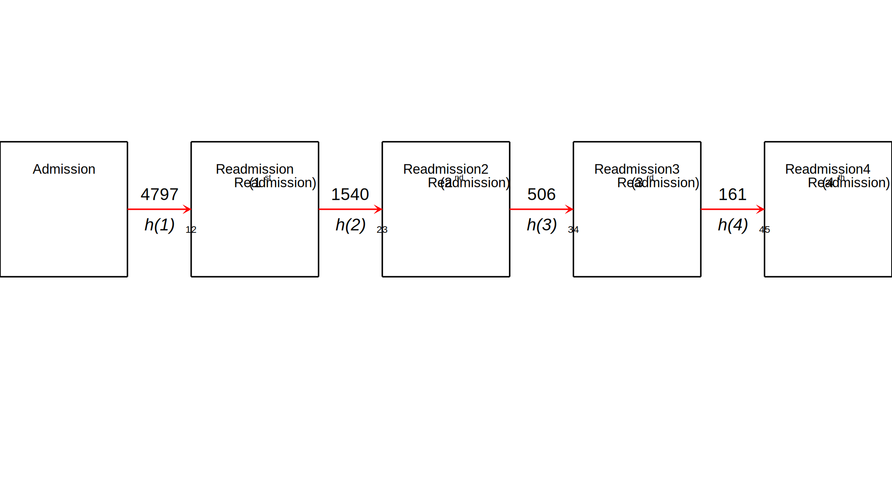
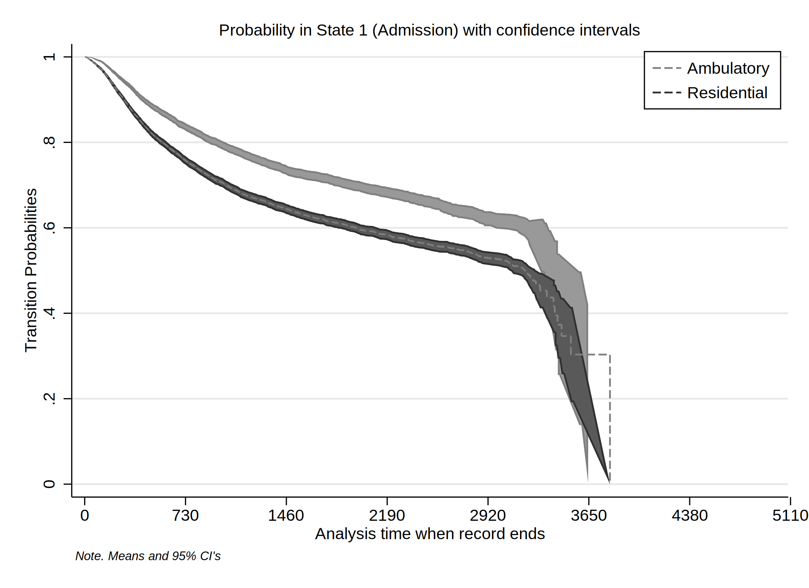
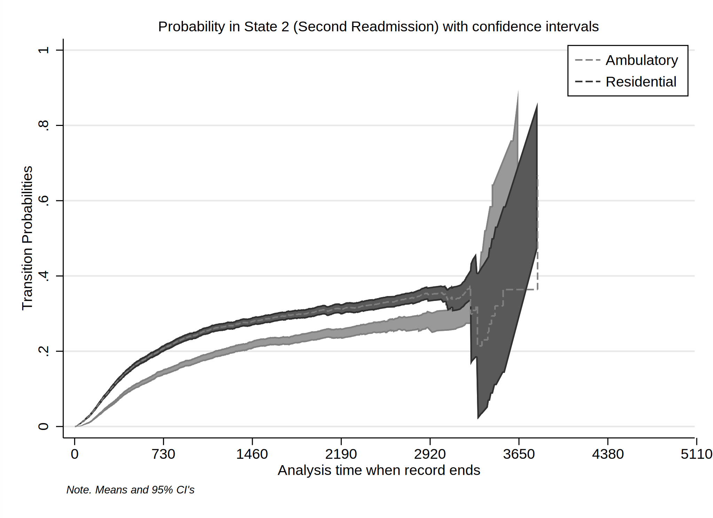
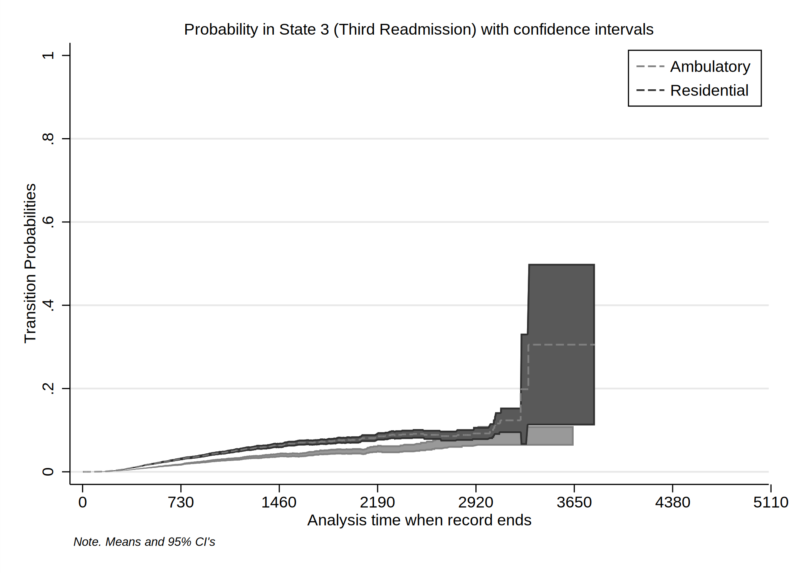
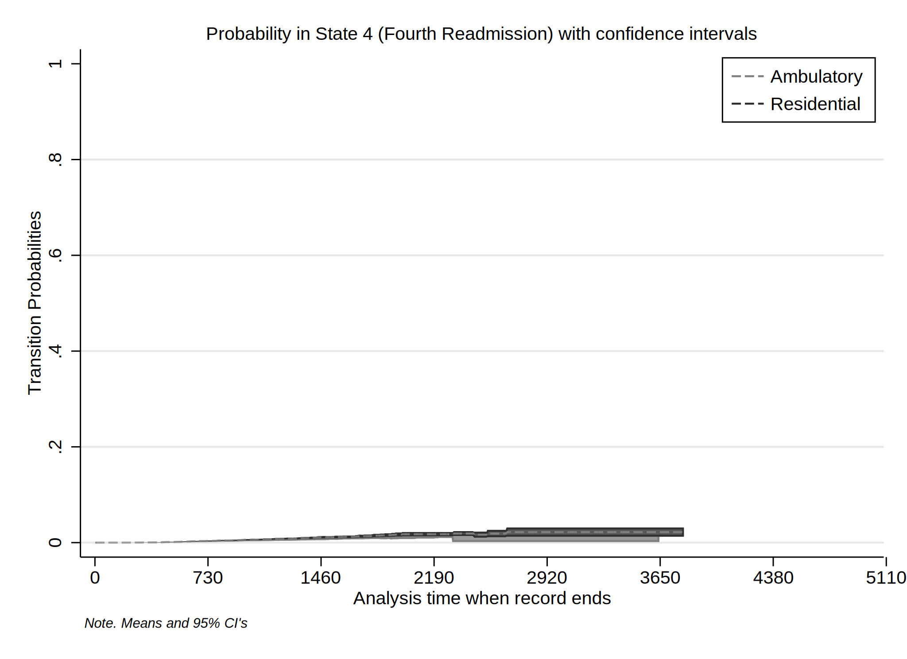
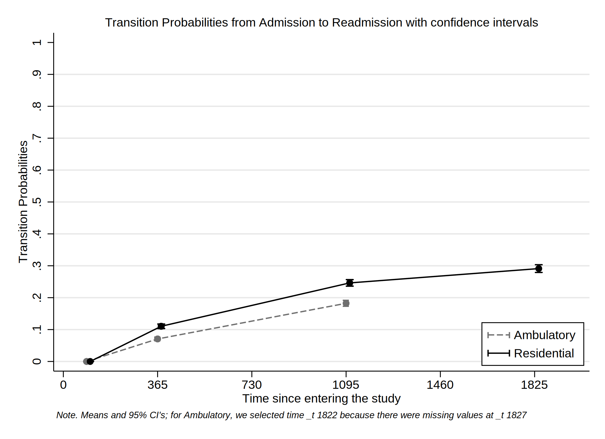
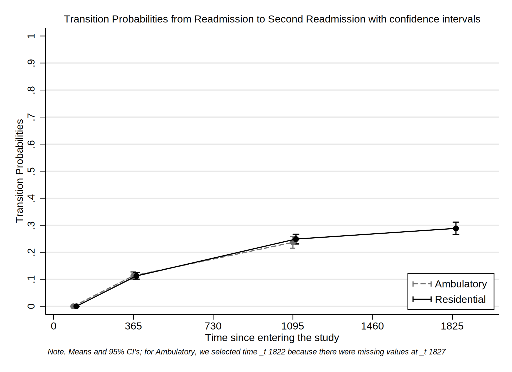
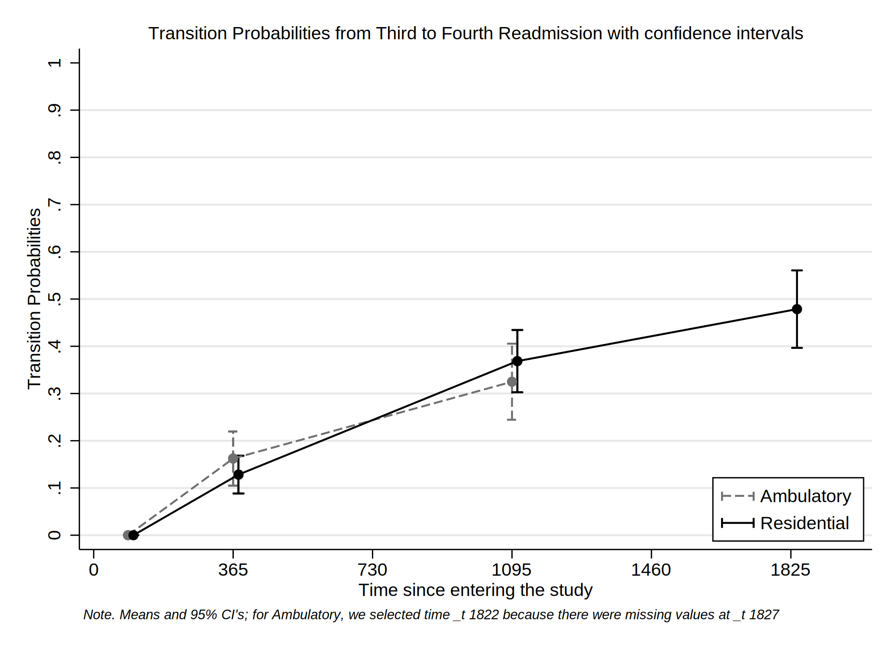

Date created: 13:07:23 25 Sep 2022.
Install commands that are unavailable or out of date.
. *<< dd_do : noout > >
. clear all
. *https://onlinelibrary.wiley.com/doi/epdf/10.1002/sim.8894
. *https://pclambert.net/pdf/Stata_Nordic2019_Lambert.pdf
. *https://slidetodoc.com/automated-reports-using-stata-chuck-huber-ph-d/
. *~Mi unidad\Alvacast\SISTRAT 2019 (github)\_supp_mstates\stata\12874_2020_1192_MOESM1_ESM.docx
. *https://opr.princeton.edu/workshops/Downloads/2015May_StataGraphicsKoffman.pdf
. *http://www.bruunisejs.dk/StataHacks/My%20commands/matprint/matprint_demo/
. *https://pure.au.dk/portal/files/140882936/ScientificWorkInStataGoneEasy.pdf
. *https://www.stata.com/meeting/nordic-and-baltic18/slides/nordic-and-baltic18_Bruun.pdf
. *https://github.com/dvorakt/TIER_exercises/blob/master/dyndoc_debt_growth/debt%20and%20growth%20stata%20dyndoc.do
.
. cap noi which predictms
c:\ado\plus\p\predictms.ado
*! version 4.4.0 22dec2021 MJC
. if _rc==111 {
. cap noi ssc install multistate
. }
. cap noi which merlin
c:\ado\plus\m\merlin.ado
*! version 2.1.5 18mar2022 MJC
. if _rc==111 {
. cap noi ssc install merlin
. }
. cap noi which sumat
c:\ado\plus\s\sumat.ado
*! Part of package matrixtools v. 0.28
*! Support: Niels Henrik Bruun, niels.henrik.bruun@gmail.com
*! 2021-01-03 toxl added
. if _rc==111 {
. cap noi scc install matrixtools
. }
. cap noi which estwrite
c:\ado\plus\e\estwrite.ado
*! version 1.2.4 04sep2009
*! version 1.0.1 15may2007 (renamed from -eststo- to -estwrite-; -append- added)
*! version 1.0.0 29apr2005 Ben Jann (ETH Zurich)
. if _rc==111 {
. cap noi ssc install estwrite
. }
. cap noi which winsor2
c:\ado\plus\w\winsor2.ado
*! Inspirit of -winsor-(NJ Cox) and -winsorizeJ-(J Caskey)
*! Lian Yujun, arlionn@163.com, 2013-12-25
*! 1.1 2014.12.16
. if _rc==111 {
. cap noi ssc install winsor2
. }
.
We need to obtain the file and the work folder.
. mata : st_numscalar("OK", direxists("/volumes/sdrive/data//"))
. if scalar(OK) == 1 {
. cap noi cd "/volumes/sdrive/data//"
. global pathdata "/volumes/sdrive/data//"
. di "Location= ${pathdata}; Date: `c(current_date)', considering an OS `c(os)' for the user: `c(username)'"
. }
. else display "This file does not exist"
This file does not exist
.
. mata : st_numscalar("OK", direxists("E:\Mi unidad\Alvacast\SISTRAT 2019 (github)\_mult_state_ags\"))
. if scalar(OK) == 1 {
. cap noi cd "E:\Mi unidad\Alvacast\SISTRAT 2019 (github)\_mult_state_ags"
E:\Mi unidad\Alvacast\SISTRAT 2019 (github)\_mult_state_ags
. global pathdata "E:\Mi unidad\Alvacast\SISTRAT 2019 (github)\_mult_state_ags"
. global pathdata2 "E:/Mi unidad/Alvacast/SISTRAT 2019 (github)/_mult_state_ags/"
. di "Location= ${pathdata}; Date: `c(current_date)', considering an OS `c(os)' for the user: `c(username)'"
Location= E:\Mi unidad\Alvacast\SISTRAT 2019 (github)\_mult_state_ags; Date: 25 Sep 2022, considering an OS Windows for the user: andre
. }
. else display "This file does not exist"
.
. mata : st_numscalar("OK", direxists("C:\Users\CISS Fondecyt\Mi unidad\Alvacast\SISTRAT 2019 (github)\_mult_state_ags\"))
. if scalar(OK) == 1 {
. cap noi cd "C:\Users\CISS Fondecyt\Mi unidad\Alvacast\SISTRAT 2019 (github)"
. global pathdata "C:\Users\CISS Fondecyt\Mi unidad\Alvacast\SISTRAT 2019 (github)\_mult_state_ags"
. global pathdata2 "C:/Users/CISS Fondecyt/Mi unidad/Alvacast/SISTRAT 2019 (github)/_mult_state_ags/"
. di "Location= ${pathdata}; Date: `c(current_date)', considering an OS `c(os)' for the user: `c(username)'"
. }
. else display "This file does not exist"
This file does not exist
.
. mata : st_numscalar("OK", direxists("C:\Users\andre\Desktop\_mult_state_ags\"))
. if scalar(OK) == 1 {
. cap noi cd "C:\Users\andre\Desktop\_mult_state_ags"
. global pathdata "C:\Users\andre\Desktop\_mult_state_ags"
. global pathdata2 "C:/Users/andre/Desktop/_mult_state_ags/"
. di "Location= ${pathdata}; Date: `c(current_date)', considering an OS `c(os)' for the user: `c(username)'"
. }
. else display "This file does not exist"
This file does not exist
.
. mata : st_numscalar("OK", direxists("C:\Users\CISS Fondecyt\OneDrive\Documentos\"))
. if scalar(OK) == 1 {
. cap noi cd "C:\Users\CISS Fondecyt\Mi unidad\Alvacast\SISTRAT 2019 (github)\_mult_state_ags"
. global pathdata "C:\Users\CISS Fondecyt\Mi unidad\Alvacast\SISTRAT 2019 (github)\_mult_state_ags"
. global pathdata2 "C:/Users/CISS Fondecyt/Mi unidad/Alvacast/SISTRAT 2019 (github)/_mult_state_ags/"
. di "Location= ${pathdata}; Date: `c(current_date)', considering an OS `c(os)' for the user: `c(username)'"
. }
. else display "This file does not exist"
This file does not exist
.
Path data= E:\Mi unidad\Alvacast\SISTRAT 2019 (github)_mult_state_ags;
Timestamp: 25 Sep 2022, considering that is a Windows OS for the username: andre
First we open the files and drop the variables that would mistakenly amplify the sample, and define labels.
The file is located and named as: E:/Mi unidad/Alvacast/SISTRAT 2019 (github)/_mult_state_ags/five_st_msprep_apr22_cc.dta
Then we define the transition matrix:
| to | ||||||
|---|---|---|---|---|---|---|
| start | Readmission_status | Readmission2_status | Readmission3_status | Readmission4_status | ||
| from | start | 1 | ||||
| Readmission_status | 2 | |||||
| Readmission2_status | 3 | |||||
| Readmission3_status | 4 | |||||
| Readmission4_status |
and transform the database in a long format, according to the specifications and the transition matrix.
Finally, the database adopt the following structure:

Set the database as a renewal time.
. *stset _stop, enter(_start) failure(_status=1) //* scale(365.25) id(id)
.
. *file:///G:/Mi%20unidad/Alvacast/SISTRAT%202019%20(github)/_supp_mstates/stata/crowther2017%20(1).pdf
. stset _time, failure(_status==1)
failure event: _status == 1
obs. time interval: (0, _time]
exit on or before: failure
------------------------------------------------------------------------------
22,371 total observations
0 exclusions
------------------------------------------------------------------------------
22,371 observations remaining, representing
7,004 failures in single-record/single-failure data
27771765 total analysis time at risk and under observation
at risk from t = 0
earliest observed entry t = 0
last observed exit t = 3,994
.
. stphplot if _trans==1, by(tipo_de_plan_res_1) ///
> scheme(sj) graphregion(color(white)) ///
> legend(pos(1) ring(0) col(1) symysize(zero) keygap(1) symxsize(large) order( 1 2) lab(1 "Ambulatory") lab(2 "Residential") size(small)) ///
> note("{it:Note. Means and 95% CI's}",size(vsmall)) ///
> title("Loglog Survival versus logtime by Treatment Modality (Transition =1)", size(small)) name(stphplot_res_1, replace)
failure _d: _status == 1
analysis time _t: _time
. ///
> saving(stphplot_res_1_22_corr_cc.gph, replace)
command saving is unrecognized
r(199);
.
. stphplot if _trans==2, by(tipo_de_plan_res_1) ///
> scheme(sj) graphregion(color(white)) ///
> legend(pos(1) ring(0) col(1) symysize(zero) keygap(1) symxsize(large) order( 1 2) lab(1 "Ambulatory") lab(2 "Residential") size(small)) ///
> note("{it:Note. Means and 95% CI's}",size(vsmall)) ///
> title("Loglog Survival versus logtime by Treatment Modality (Transition =2)", size(small)) name(stphplot_res_2, replace) ///
> saving(stphplot_res_2_22_corr_cc.gph, replace)
failure _d: _status == 1
analysis time _t: _time
(file stphplot_res_2_22_corr_cc.gph saved)
.
. stphplot if _trans==3, by(tipo_de_plan_res_1) ///
> scheme(sj) graphregion(color(white)) ///
> legend(pos(1) ring(0) col(1) symysize(zero) keygap(1) symxsize(large) order( 1 2) lab(1 "Ambulatory") lab(2 "Residential") size(small)) ///
> note("{it:Note. Means and 95% CI's}",size(vsmall)) ///
> title("Loglog Survival versus logtime by Treatment Modality (Transition =3)", size(small)) name(stphplot_res_3, replace) ///
> saving(stphplot_res_3_22_corr_cc.gph, replace)
failure _d: _status == 1
analysis time _t: _time
(file stphplot_res_3_22_corr_cc.gph saved)
.
. stphplot if _trans==4, by(tipo_de_plan_res_1) ///
> scheme(sj) graphregion(color(white)) ///
> legend(pos(1) ring(0) col(1) symysize(zero) keygap(1) symxsize(large) order( 1 2) lab(1 "Ambulatory") lab(2 "Residential") size(small)) ///
> note("{it:Note. Means and 95% CI's}",size(vsmall)) ///
> title("Loglog Survival versus logtime by Treatment Modality (Transition =4)", size(small)) name(stphplot_res_4, replace) ///
> saving(stphplot_res_4_22_corr_cc.gph, replace)
failure _d: _status == 1
analysis time _t: _time
(file stphplot_res_4_22_corr_cc.gph saved)
. graph combine "${pathdata}\stphplot_res_1_22_corr_cc.gph" "${pathdata}\stphplot_res_2_22_corr_cc.gph" "${pathdata}\stphplot_res_3_22_corr_cc.gph" "${pathdata}\stphplot_res_4_22_corr_cc.gph", ///
> colfirst ycommon xcommon iscale(*.7) imargin(tiny) graphregion(color(gs16)) ///
> title("Combination of −ln{−ln(survival)} vs. ln(analysis time)" "Renewal time", size(medium)) cols(2) /// *subtitle("{it:}", size(small)) ///
> note("{it: Note: Ordered by columns, from up to down, left to right}", size(tiny)) ///
> name(tr_ph_ln_srv_t_res_s_corr_cc, replace)
=============================================================================
=============================================================================
Generated an Aalen-Johanssen estimator to obtain the transition probabilities of the data from the time 0 (from admission). For this, we separated the transition probabilities according to the setting at baseline.
. *http://fmwww.bc.edu/repec/bocode/m/msaj.ado
. msaj, transmatrix(mat_five_states) by(tipo_de_plan_res_1) ci
. rename (P_AJ_*) (ajprob*)
To generate figures, we select the valid transitions




Calculate transition probabilities from a determined states in times 90, 365 (1 year), 1095 (3 years) & 1826 (5 years).
variable trp_ajprob* not found
variable _t2 not found
(11,845 real changes made)
(file msaj_12_jun_22_corr_cc.gph saved)

(file msaj_23_jun_22_corr_cc.gph saved)

(file msaj_34_jun_22_corr_cc.gph saved)
(file msaj_45_jun_22_corr_cc.gph saved)

=============================================================================
=============================================================================
We generated a list of parametric and intercept-only survival models with different distributions (Exponential, Weibull, Gompertz, Log-logistic, Log-normal & Generalized gamma. Aditionally, we defined a series of Royston-Parmar models with a function of restricted cubic splines, in which the knots (#df -1) are defined in each percentile of the distribution. We saved the estimates in the file called `parmodels_m_jun_22_corr_cc’.
. forvalues i = 1/4 {
2. // Exponential
. di in yellow "{bf: ***********}"
3. di in yellow "{bf: Transition `i': family Exp (intercept-only)}"
4. di in yellow "{bf: ***********}"
5. set seed 2125
6. qui cap noi merlin (_time if _trans == `i', family(exponential, fail(_status)))
7. estimates store m`i'_exp
8. // Weibull
. di in yellow "{bf: ***********}"
9. di in yellow "{bf: Transition `i': family Wei (intercept-only)}"
10. di in yellow "{bf: ***********}"
11. set seed 2125
12. qui cap noi merlin (_time if _trans == `i', family(weibull, fail(_status)))
13. estimates store m`i'_weib
14. // Gompertz
. di in yellow "{bf: ***********}"
15. di in yellow "{bf: Transition `i': family Gomp (intercept-only)}"
16. di in yellow "{bf: ***********}"
17. set seed 2125
18. qui cap noi merlin (_time if _trans == `i', family(gompertz, fail(_status)))
19. estimates store m`i'_gom
20. // Log logistic
. di in yellow "{bf: ***********}"
21. di in yellow "{bf: Transition `i': family Logl (intercept-only)}"
22. di in yellow "{bf: ***********}"
23. set seed 2125
24. qui cap noi merlin (_time if _trans == `i', family(loglogistic, fail(_status)))
25. estimates store m`i'_logl
26. // Log normal
. di in yellow "{bf: ***********}"
27. di in yellow "{bf: Transition `i': family Logn (intercept-only)}"
28. di in yellow "{bf: ***********}"
29. set seed 2125
30. qui cap noi merlin (_time if _trans == `i', family(lognormal, fail(_status)))
31. estimates store m`i'_logn
32. // Generalised gamma
. di in yellow "{bf: ***********}"
33. di in yellow "{bf: Transition `i': family Ggam (intercept-only)}"
34. di in yellow "{bf: ***********}"
35. set seed 2125
36. qui cap noi merlin (_time if _trans == `i', family(ggamma, fail(_status)))
37. estimates store m`i'_ggam
38. // Royston Parmar models
. forvalues j=2/10 {
39. set seed 2125
40. di in yellow "{bf: ***********}"
41. di in yellow "{bf: Transition `i': family RP`j' (intercept-only)}"
42. di in yellow "{bf: ***********}"
43. qui cap noi merlin (_time if _trans == `i', family(rp, df(`j') fail(_status)))
44. estimates store m`i'_rp`j'
45. }
46. }
***********
Transition 1: family Exp (intercept-only)
***********
Fitting full model:
Iteration 0: log likelihood = -20678413
Iteration 1: log likelihood = -45461.161
Iteration 2: log likelihood = -45000.247
Iteration 3: log likelihood = -44942.503
Iteration 4: log likelihood = -44942.397
Iteration 5: log likelihood = -44942.397
Fixed effects regression model Number of obs = 15,528
Log likelihood = -44942.397
------------------------------------------------------------------------------
| Coef. Std. Err. z P>|z| [95% Conf. Interval]
-------------+----------------------------------------------------------------
_time: |
_cons | -8.368855 .0144383 -579.63 0.000 -8.397153 -8.340556
------------------------------------------------------------------------------
***********
Transition 1: family Wei (intercept-only)
***********
Fitting full model:
Iteration 0: log likelihood = -20678413
Iteration 1: log likelihood = -45461.115 (not concave)
Iteration 2: log likelihood = -44975.162
Iteration 3: log likelihood = -44903.184
Iteration 4: log likelihood = -44881.946
Iteration 5: log likelihood = -44881.856
Iteration 6: log likelihood = -44881.856
Fixed effects regression model Number of obs = 15,528
Log likelihood = -44881.856
------------------------------------------------------------------------------
| Coef. Std. Err. z P>|z| [95% Conf. Interval]
-------------+----------------------------------------------------------------
_time: |
_cons | -7.431154 .0829152 -89.62 0.000 -7.593665 -7.268643
log(gamma) | -.1349411 .012621 -10.69 0.000 -.1596778 -.1102044
------------------------------------------------------------------------------
***********
Transition 1: family Gomp (intercept-only)
***********
Fitting full model:
Iteration 0: log likelihood = -2.87e+174
Iteration 1: log likelihood = -2147782.2 (not concave)
Iteration 2: log likelihood = -2061870.9 (not concave)
Iteration 3: log likelihood = -2029009.8
Iteration 4: log likelihood = -122929.99 (backed up)
Iteration 5: log likelihood = -73309.575
Iteration 6: log likelihood = -56798.656
Iteration 7: log likelihood = -46465.42
Iteration 8: log likelihood = -44785.353
Iteration 9: log likelihood = -44721.772
Iteration 10: log likelihood = -44721.3
Iteration 11: log likelihood = -44721.3
Fixed effects regression model Number of obs = 15,528
Log likelihood = -44721.3
------------------------------------------------------------------------------
| Coef. Std. Err. z P>|z| [95% Conf. Interval]
-------------+----------------------------------------------------------------
_time: |
_cons | -7.980172 .0224033 -356.21 0.000 -8.024081 -7.936262
gamma | -.0004455 .0000223 -20.00 0.000 -.0004892 -.0004019
------------------------------------------------------------------------------
***********
Transition 1: family Logl (intercept-only)
***********
Fitting full model:
Iteration 0: log likelihood = -136155.29 (not concave)
Iteration 1: log likelihood = -54941.582 (not concave)
Iteration 2: log likelihood = -46301.97 (not concave)
Iteration 3: log likelihood = -44833.303
Iteration 4: log likelihood = -44774.558
Iteration 5: log likelihood = -44773.803
Iteration 6: log likelihood = -44773.803
Fixed effects regression model Number of obs = 15,528
Log likelihood = -44773.803
------------------------------------------------------------------------------
| Coef. Std. Err. z P>|z| [95% Conf. Interval]
-------------+----------------------------------------------------------------
_time: |
_cons | 8.123821 .0213457 380.58 0.000 8.081984 8.165657
dap:1 | .006002 .0123471 0.49 0.627 -.0181979 .0302019
------------------------------------------------------------------------------
***********
Transition 1: family Logn (intercept-only)
***********
Fitting full model:
initial values not feasible
-> Starting values failed - trying zero vector
initial values not feasible
***********
Transition 1: family Ggam (intercept-only)
***********
Fitting full model:
Iteration 0: log likelihood = -227232.79 (not concave)
Iteration 1: log likelihood = -47632.354
Iteration 2: log likelihood = -47448.588 (not concave)
Iteration 3: log likelihood = -44819.443 (not concave)
Iteration 4: log likelihood = -44718.431
Iteration 5: log likelihood = -44692.85
Iteration 6: log likelihood = -44579.485
Iteration 7: log likelihood = -44575.984
Iteration 8: log likelihood = -44575.981
Fixed effects regression model Number of obs = 15,528
Log likelihood = -44575.981
------------------------------------------------------------------------------
| Coef. Std. Err. z P>|z| [95% Conf. Interval]
-------------+----------------------------------------------------------------
_time: |
_cons | 7.824309 .0497999 157.11 0.000 7.726703 7.921916
log(sigma) | .7516016 .0155764 48.25 0.000 .7210723 .7821309
kappa | -.7230964 .071271 -10.15 0.000 -.8627851 -.5834077
------------------------------------------------------------------------------
***********
Transition 1: family RP2 (intercept-only)
***********
variables created: _rcs1_1 to _rcs1_2
Fitting full model:
Iteration 0: log likelihood = -55112.939
Iteration 1: log likelihood = -44562.461
Iteration 2: log likelihood = -44539.893
Iteration 3: log likelihood = -44539.853
Iteration 4: log likelihood = -44539.853
Fixed effects regression model Number of obs = 15,528
Log likelihood = -44539.853
------------------------------------------------------------------------------
| Coef. Std. Err. z P>|z| [95% Conf. Interval]
-------------+----------------------------------------------------------------
_time: |
_cons | -1.483238 .0158304 -93.70 0.000 -1.514265 -1.45221
------------------------------------------------------------------------------
Warning: Baseline spline coefficients not shown - use ml display
***********
Transition 1: family RP3 (intercept-only)
***********
variables created: _rcs1_1 to _rcs1_3
Fitting full model:
Iteration 0: log likelihood = -55112.939
Iteration 1: log likelihood = -44564.222
Iteration 2: log likelihood = -44540.122
Iteration 3: log likelihood = -44540.061
Iteration 4: log likelihood = -44540.061
Fixed effects regression model Number of obs = 15,528
Log likelihood = -44540.061
------------------------------------------------------------------------------
| Coef. Std. Err. z P>|z| [95% Conf. Interval]
-------------+----------------------------------------------------------------
_time: |
_cons | -1.484157 .0158459 -93.66 0.000 -1.515214 -1.4531
------------------------------------------------------------------------------
Warning: Baseline spline coefficients not shown - use ml display
***********
Transition 1: family RP4 (intercept-only)
***********
variables created: _rcs1_1 to _rcs1_4
Fitting full model:
Iteration 0: log likelihood = -55112.939
Iteration 1: log likelihood = -44579.683
Iteration 2: log likelihood = -44533.817
Iteration 3: log likelihood = -44533.408
Iteration 4: log likelihood = -44533.408
Fixed effects regression model Number of obs = 15,528
Log likelihood = -44533.408
------------------------------------------------------------------------------
| Coef. Std. Err. z P>|z| [95% Conf. Interval]
-------------+----------------------------------------------------------------
_time: |
_cons | -1.483537 .0158435 -93.64 0.000 -1.514589 -1.452484
------------------------------------------------------------------------------
Warning: Baseline spline coefficients not shown - use ml display
***********
Transition 1: family RP5 (intercept-only)
***********
variables created: _rcs1_1 to _rcs1_5
Fitting full model:
Iteration 0: log likelihood = -55112.939
Iteration 1: log likelihood = -44576.798
Iteration 2: log likelihood = -44528.995
Iteration 3: log likelihood = -44528.514
Iteration 4: log likelihood = -44528.514
Fixed effects regression model Number of obs = 15,528
Log likelihood = -44528.514
------------------------------------------------------------------------------
| Coef. Std. Err. z P>|z| [95% Conf. Interval]
-------------+----------------------------------------------------------------
_time: |
_cons | -1.483529 .0158431 -93.64 0.000 -1.514581 -1.452477
------------------------------------------------------------------------------
Warning: Baseline spline coefficients not shown - use ml display
***********
Transition 1: family RP6 (intercept-only)
***********
variables created: _rcs1_1 to _rcs1_6
Fitting full model:
Iteration 0: log likelihood = -55112.939
Iteration 1: log likelihood = -44591.174
Iteration 2: log likelihood = -44526.386
Iteration 3: log likelihood = -44525.317
Iteration 4: log likelihood = -44525.316
Fixed effects regression model Number of obs = 15,528
Log likelihood = -44525.316
------------------------------------------------------------------------------
| Coef. Std. Err. z P>|z| [95% Conf. Interval]
-------------+----------------------------------------------------------------
_time: |
_cons | -1.483819 .015845 -93.65 0.000 -1.514874 -1.452763
------------------------------------------------------------------------------
Warning: Baseline spline coefficients not shown - use ml display
***********
Transition 1: family RP7 (intercept-only)
***********
variables created: _rcs1_1 to _rcs1_7
Fitting full model:
Iteration 0: log likelihood = -55112.939
Iteration 1: log likelihood = -44613.844
Iteration 2: log likelihood = -44524.234
Iteration 3: log likelihood = -44520.417
Iteration 4: log likelihood = -44520.403
Iteration 5: log likelihood = -44520.403
Fixed effects regression model Number of obs = 15,528
Log likelihood = -44520.403
------------------------------------------------------------------------------
| Coef. Std. Err. z P>|z| [95% Conf. Interval]
-------------+----------------------------------------------------------------
_time: |
_cons | -1.483784 .0158451 -93.64 0.000 -1.51484 -1.452729
------------------------------------------------------------------------------
Warning: Baseline spline coefficients not shown - use ml display
***********
Transition 1: family RP8 (intercept-only)
***********
variables created: _rcs1_1 to _rcs1_8
Fitting full model:
Iteration 0: log likelihood = -55112.939
Iteration 1: log likelihood = -44630.38
Iteration 2: log likelihood = -44525.42
Iteration 3: log likelihood = -44518.973
Iteration 4: log likelihood = -44518.96
Iteration 5: log likelihood = -44518.96
Fixed effects regression model Number of obs = 15,528
Log likelihood = -44518.96
------------------------------------------------------------------------------
| Coef. Std. Err. z P>|z| [95% Conf. Interval]
-------------+----------------------------------------------------------------
_time: |
_cons | -1.483869 .0158458 -93.64 0.000 -1.514926 -1.452812
------------------------------------------------------------------------------
Warning: Baseline spline coefficients not shown - use ml display
***********
Transition 1: family RP9 (intercept-only)
***********
variables created: _rcs1_1 to _rcs1_9
Fitting full model:
Iteration 0: log likelihood = -55112.939
Iteration 1: log likelihood = -44646.022
Iteration 2: log likelihood = -44525.779
Iteration 3: log likelihood = -44515.929
Iteration 4: log likelihood = -44515.875
Iteration 5: log likelihood = -44515.875
Fixed effects regression model Number of obs = 15,528
Log likelihood = -44515.875
------------------------------------------------------------------------------
| Coef. Std. Err. z P>|z| [95% Conf. Interval]
-------------+----------------------------------------------------------------
_time: |
_cons | -1.483952 .0158466 -93.65 0.000 -1.515011 -1.452894
------------------------------------------------------------------------------
Warning: Baseline spline coefficients not shown - use ml display
***********
Transition 1: family RP10 (intercept-only)
***********
variables created: _rcs1_1 to _rcs1_10
Fitting full model:
Iteration 0: log likelihood = -55112.939
Iteration 1: log likelihood = -44655.469
Iteration 2: log likelihood = -44525.617
Iteration 3: log likelihood = -44511.766
Iteration 4: log likelihood = -44511.69
Iteration 5: log likelihood = -44511.69
Fixed effects regression model Number of obs = 15,528
Log likelihood = -44511.69
------------------------------------------------------------------------------
| Coef. Std. Err. z P>|z| [95% Conf. Interval]
-------------+----------------------------------------------------------------
_time: |
_cons | -1.484108 .0158478 -93.65 0.000 -1.515169 -1.453047
------------------------------------------------------------------------------
Warning: Baseline spline coefficients not shown - use ml display
***********
Transition 2: family Exp (intercept-only)
***********
Fitting full model:
Iteration 0: log likelihood = -5241569
Iteration 1: log likelihood = -14398.388
Iteration 2: log likelihood = -14174.282
Iteration 3: log likelihood = -14064.473
Iteration 4: log likelihood = -14064.194
Iteration 5: log likelihood = -14064.194
Fixed effects regression model Number of obs = 4,797
Log likelihood = -14064.194
------------------------------------------------------------------------------
| Coef. Std. Err. z P>|z| [95% Conf. Interval]
-------------+----------------------------------------------------------------
_time: |
_cons | -8.132594 .0254824 -319.15 0.000 -8.182538 -8.082649
------------------------------------------------------------------------------
***********
Transition 2: family Wei (intercept-only)
***********
Fitting full model:
Iteration 0: log likelihood = -5241569
Iteration 1: log likelihood = -14398.363 (not concave)
Iteration 2: log likelihood = -14084.649
Iteration 3: log likelihood = -14050.879
Iteration 4: log likelihood = -14040.693
Iteration 5: log likelihood = -14040.595
Iteration 6: log likelihood = -14040.595
Fixed effects regression model Number of obs = 4,797
Log likelihood = -14040.595
------------------------------------------------------------------------------
| Coef. Std. Err. z P>|z| [95% Conf. Interval]
-------------+----------------------------------------------------------------
_time: |
_cons | -7.147856 .1393005 -51.31 0.000 -7.42088 -6.874832
log(gamma) | -.1459245 .0219418 -6.65 0.000 -.1889296 -.1029194
------------------------------------------------------------------------------
***********
Transition 2: family Gomp (intercept-only)
***********
Fitting full model:
Iteration 0: log likelihood = -1.77e+149
Iteration 1: log likelihood = -702189.24 (not concave)
Iteration 2: log likelihood = -674101.67 (not concave)
Iteration 3: log likelihood = -652965.23 (not concave)
Iteration 4: log likelihood = -649668.38 (not concave)
Iteration 5: log likelihood = -486543.86
Iteration 6: log likelihood = -486543.86
Fixed effects regression model Number of obs = 4,797
Log likelihood = -486543.86
------------------------------------------------------------------------------
| Coef. Std. Err. z P>|z| [95% Conf. Interval]
-------------+----------------------------------------------------------------
_time: |
_cons | -245.3823 . . . . .
gamma | -.1127293 . . . . .
------------------------------------------------------------------------------
***********
Transition 2: family Logl (intercept-only)
***********
Fitting full model:
Iteration 0: log likelihood = -41067.407 (not concave)
Iteration 1: log likelihood = -15400.522
Iteration 2: log likelihood = -14791.169
Iteration 3: log likelihood = -14030.688
Iteration 4: log likelihood = -13994.986
Iteration 5: log likelihood = -13994.382
Iteration 6: log likelihood = -13994.381
Fixed effects regression model Number of obs = 4,797
Log likelihood = -13994.381
------------------------------------------------------------------------------
| Coef. Std. Err. z P>|z| [95% Conf. Interval]
-------------+----------------------------------------------------------------
_time: |
_cons | 7.855448 .0371258 211.59 0.000 7.782683 7.928213
dap:1 | -.0016765 .021608 -0.08 0.938 -.0440275 .0406744
------------------------------------------------------------------------------
***********
Transition 2: family Logn (intercept-only)
***********
Fitting full model:
Iteration 0: log likelihood = -127323.5 (not concave)
Iteration 1: log likelihood = -14791.031
Iteration 2: log likelihood = -14000.723
Iteration 3: log likelihood = -13955.021
Iteration 4: log likelihood = -13952.135
Iteration 5: log likelihood = -13952.13
Iteration 6: log likelihood = -13952.13
Fixed effects regression model Number of obs = 4,797
Log likelihood = -13952.13
------------------------------------------------------------------------------
| Coef. Std. Err. z P>|z| [95% Conf. Interval]
-------------+----------------------------------------------------------------
_time: |
_cons | 7.932869 .0413309 191.94 0.000 7.851862 8.013876
dap:1 | .573671 .0199051 28.82 0.000 .5346577 .6126843
------------------------------------------------------------------------------
***********
Transition 2: family Ggam (intercept-only)
***********
Fitting full model:
Iteration 0: log likelihood = -65533.189 (not concave)
Iteration 1: log likelihood = -18186.142 (not concave)
Iteration 2: log likelihood = -14067.268
Iteration 3: log likelihood = -14004.612
Iteration 4: log likelihood = -13953.231
Iteration 5: log likelihood = -13943.344
Iteration 6: log likelihood = -13943.143
Iteration 7: log likelihood = -13943.143
Fixed effects regression model Number of obs = 4,797
Log likelihood = -13943.143
------------------------------------------------------------------------------
| Coef. Std. Err. z P>|z| [95% Conf. Interval]
-------------+----------------------------------------------------------------
_time: |
_cons | 7.727053 .068153 113.38 0.000 7.593475 7.86063
log(sigma) | .6896209 .0304224 22.67 0.000 .629994 .7492478
kappa | -.429192 .1020506 -4.21 0.000 -.6292075 -.2291765
------------------------------------------------------------------------------
***********
Transition 2: family RP2 (intercept-only)
***********
variables created: _rcs1_1 to _rcs1_2
Fitting full model:
Iteration 0: log likelihood = -17174.423
Iteration 1: log likelihood = -13918.028
Iteration 2: log likelihood = -13913.868
Iteration 3: log likelihood = -13913.864
Iteration 4: log likelihood = -13913.864
Fixed effects regression model Number of obs = 4,797
Log likelihood = -13913.864
------------------------------------------------------------------------------
| Coef. Std. Err. z P>|z| [95% Conf. Interval]
-------------+----------------------------------------------------------------
_time: |
_cons | -1.462284 .0281773 -51.90 0.000 -1.51751 -1.407057
------------------------------------------------------------------------------
Warning: Baseline spline coefficients not shown - use ml display
***********
Transition 2: family RP3 (intercept-only)
***********
variables created: _rcs1_1 to _rcs1_3
Fitting full model:
Iteration 0: log likelihood = -17174.423
Iteration 1: log likelihood = -13916.227
Iteration 2: log likelihood = -13907.912
Iteration 3: log likelihood = -13907.887
Iteration 4: log likelihood = -13907.887
Fixed effects regression model Number of obs = 4,797
Log likelihood = -13907.887
------------------------------------------------------------------------------
| Coef. Std. Err. z P>|z| [95% Conf. Interval]
-------------+----------------------------------------------------------------
_time: |
_cons | -1.458637 .0281654 -51.79 0.000 -1.51384 -1.403434
------------------------------------------------------------------------------
Warning: Baseline spline coefficients not shown - use ml display
***********
Transition 2: family RP4 (intercept-only)
***********
variables created: _rcs1_1 to _rcs1_4
Fitting full model:
Iteration 0: log likelihood = -17174.423
Iteration 1: log likelihood = -13909.005
Iteration 2: log likelihood = -13900.096
Iteration 3: log likelihood = -13900.065
Iteration 4: log likelihood = -13900.065
Fixed effects regression model Number of obs = 4,797
Log likelihood = -13900.065
------------------------------------------------------------------------------
| Coef. Std. Err. z P>|z| [95% Conf. Interval]
-------------+----------------------------------------------------------------
_time: |
_cons | -1.460098 .0281843 -51.81 0.000 -1.515338 -1.404858
------------------------------------------------------------------------------
Warning: Baseline spline coefficients not shown - use ml display
***********
Transition 2: family RP5 (intercept-only)
***********
variables created: _rcs1_1 to _rcs1_5
Fitting full model:
Iteration 0: log likelihood = -17174.423
Iteration 1: log likelihood = -13913.336
Iteration 2: log likelihood = -13899.96
Iteration 3: log likelihood = -13899.833
Iteration 4: log likelihood = -13899.833
Fixed effects regression model Number of obs = 4,797
Log likelihood = -13899.833
------------------------------------------------------------------------------
| Coef. Std. Err. z P>|z| [95% Conf. Interval]
-------------+----------------------------------------------------------------
_time: |
_cons | -1.460834 .0281989 -51.80 0.000 -1.516102 -1.405565
------------------------------------------------------------------------------
Warning: Baseline spline coefficients not shown - use ml display
***********
Transition 2: family RP6 (intercept-only)
***********
variables created: _rcs1_1 to _rcs1_6
Fitting full model:
Iteration 0: log likelihood = -17174.423
Iteration 1: log likelihood = -13913.067
Iteration 2: log likelihood = -13899.491
Iteration 3: log likelihood = -13899.336
Iteration 4: log likelihood = -13899.336
Fixed effects regression model Number of obs = 4,797
Log likelihood = -13899.336
------------------------------------------------------------------------------
| Coef. Std. Err. z P>|z| [95% Conf. Interval]
-------------+----------------------------------------------------------------
_time: |
_cons | -1.460667 .0281996 -51.80 0.000 -1.515938 -1.405397
------------------------------------------------------------------------------
Warning: Baseline spline coefficients not shown - use ml display
***********
Transition 2: family RP7 (intercept-only)
***********
variables created: _rcs1_1 to _rcs1_7
Fitting full model:
Iteration 0: log likelihood = -17174.423
Iteration 1: log likelihood = -13914.346
Iteration 2: log likelihood = -13899.513
Iteration 3: log likelihood = -13899.302
Iteration 4: log likelihood = -13899.302
Fixed effects regression model Number of obs = 4,797
Log likelihood = -13899.302
------------------------------------------------------------------------------
| Coef. Std. Err. z P>|z| [95% Conf. Interval]
-------------+----------------------------------------------------------------
_time: |
_cons | -1.460784 .0282025 -51.80 0.000 -1.51606 -1.405508
------------------------------------------------------------------------------
Warning: Baseline spline coefficients not shown - use ml display
***********
Transition 2: family RP8 (intercept-only)
***********
variables created: _rcs1_1 to _rcs1_8
Fitting full model:
Iteration 0: log likelihood = -17174.423
Iteration 1: log likelihood = -13914.566
Iteration 2: log likelihood = -13899.251
Iteration 3: log likelihood = -13898.991
Iteration 4: log likelihood = -13898.991
Fixed effects regression model Number of obs = 4,797
Log likelihood = -13898.991
------------------------------------------------------------------------------
| Coef. Std. Err. z P>|z| [95% Conf. Interval]
-------------+----------------------------------------------------------------
_time: |
_cons | -1.461007 .028207 -51.80 0.000 -1.516291 -1.405722
------------------------------------------------------------------------------
Warning: Baseline spline coefficients not shown - use ml display
***********
Transition 2: family RP9 (intercept-only)
***********
variables created: _rcs1_1 to _rcs1_9
Fitting full model:
Iteration 0: log likelihood = -17174.423
Iteration 1: log likelihood = -13914.76
Iteration 2: log likelihood = -13898.821
Iteration 3: log likelihood = -13898.519
Iteration 4: log likelihood = -13898.519
Fixed effects regression model Number of obs = 4,797
Log likelihood = -13898.519
------------------------------------------------------------------------------
| Coef. Std. Err. z P>|z| [95% Conf. Interval]
-------------+----------------------------------------------------------------
_time: |
_cons | -1.461231 .0282112 -51.80 0.000 -1.516524 -1.405938
------------------------------------------------------------------------------
Warning: Baseline spline coefficients not shown - use ml display
***********
Transition 2: family RP10 (intercept-only)
***********
variables created: _rcs1_1 to _rcs1_10
Fitting full model:
Iteration 0: log likelihood = -17174.423
Iteration 1: log likelihood = -13915.172
Iteration 2: log likelihood = -13898.492
Iteration 3: log likelihood = -13898.123
Iteration 4: log likelihood = -13898.123
Fixed effects regression model Number of obs = 4,797
Log likelihood = -13898.123
------------------------------------------------------------------------------
| Coef. Std. Err. z P>|z| [95% Conf. Interval]
-------------+----------------------------------------------------------------
_time: |
_cons | -1.46147 .0282159 -51.80 0.000 -1.516772 -1.406167
------------------------------------------------------------------------------
Warning: Baseline spline coefficients not shown - use ml display
***********
Transition 3: family Exp (intercept-only)
***********
Fitting full model:
Iteration 0: log likelihood = -1450800
Iteration 1: log likelihood = -4692.6949
Iteration 2: log likelihood = -4636.7992
Iteration 3: log likelihood = -4534.4827
Iteration 4: log likelihood = -4534.3111
Iteration 5: log likelihood = -4534.311
Fixed effects regression model Number of obs = 1,540
Log likelihood = -4534.311
------------------------------------------------------------------------------
| Coef. Std. Err. z P>|z| [95% Conf. Interval]
-------------+----------------------------------------------------------------
_time: |
_cons | -7.961089 .0444554 -179.08 0.000 -8.04822 -7.873958
------------------------------------------------------------------------------
***********
Transition 3: family Wei (intercept-only)
***********
Fitting full model:
Iteration 0: log likelihood = -1450800
Iteration 1: log likelihood = -4692.6916 (not concave)
Iteration 2: log likelihood = -4555.4193 (not concave)
Iteration 3: log likelihood = -4540.2309
Iteration 4: log likelihood = -4534.2614
Iteration 5: log likelihood = -4531.6096
Iteration 6: log likelihood = -4531.5959
Iteration 7: log likelihood = -4531.5959
Fixed effects regression model Number of obs = 1,540
Log likelihood = -4531.5959
------------------------------------------------------------------------------
| Coef. Std. Err. z P>|z| [95% Conf. Interval]
-------------+----------------------------------------------------------------
_time: |
_cons | -7.37734 .2480189 -29.75 0.000 -7.863448 -6.891232
log(gamma) | -.0852315 .0372924 -2.29 0.022 -.1583232 -.0121398
------------------------------------------------------------------------------
***********
Transition 3: family Gomp (intercept-only)
***********
Fitting full model:
Iteration 0: log likelihood = -2.38e+141
Iteration 1: log likelihood = -231668.26
Iteration 2: log likelihood = -144506.02 (backed up)
Iteration 3: log likelihood = -144506.02
Fixed effects regression model Number of obs = 1,540
Log likelihood = -144506.02
------------------------------------------------------------------------------
| Coef. Std. Err. z P>|z| [95% Conf. Interval]
-------------+----------------------------------------------------------------
_time: |
_cons | -346.5632 . . . . .
gamma | .101846 . . . . .
------------------------------------------------------------------------------
***********
Transition 3: family Logl (intercept-only)
***********
Fitting full model:
Iteration 0: log likelihood = -12962.668 (not concave)
Iteration 1: log likelihood = -4932.3831
Iteration 2: log likelihood = -4734.5131 (backed up)
Iteration 3: log likelihood = -4521.8654
Iteration 4: log likelihood = -4515.0429
Iteration 5: log likelihood = -4514.976
Iteration 6: log likelihood = -4514.976
Fixed effects regression model Number of obs = 1,540
Log likelihood = -4514.976
------------------------------------------------------------------------------
| Coef. Std. Err. z P>|z| [95% Conf. Interval]
-------------+----------------------------------------------------------------
_time: |
_cons | 7.620183 .0595419 127.98 0.000 7.503483 7.736883
dap:1 | -.0769548 .0369955 -2.08 0.038 -.1494647 -.0044449
------------------------------------------------------------------------------
***********
Transition 3: family Logn (intercept-only)
***********
Fitting full model:
Iteration 0: log likelihood = -39095.918 (not concave)
Iteration 1: log likelihood = -5987.4596 (not concave)
Iteration 2: log likelihood = -4930.1374 (not concave)
Iteration 3: log likelihood = -4756.9718
Iteration 4: log likelihood = -4576.2792
Iteration 5: log likelihood = -4523.4903
Iteration 6: log likelihood = -4502.25
Iteration 7: log likelihood = -4502.1847
Iteration 8: log likelihood = -4502.1847
Fixed effects regression model Number of obs = 1,540
Log likelihood = -4502.1847
------------------------------------------------------------------------------
| Coef. Std. Err. z P>|z| [95% Conf. Interval]
-------------+----------------------------------------------------------------
_time: |
_cons | 7.683084 .0658964 116.59 0.000 7.553929 7.812238
dap:1 | .4951223 .0340617 14.54 0.000 .4283627 .561882
------------------------------------------------------------------------------
***********
Transition 3: family Ggam (intercept-only)
***********
Fitting full model:
Iteration 0: log likelihood = -19959.048 (not concave)
Iteration 1: log likelihood = -5739.2455 (not concave)
Iteration 2: log likelihood = -4557.2441
Iteration 3: log likelihood = -4551.0121 (not concave)
Iteration 4: log likelihood = -4530.5083 (not concave)
Iteration 5: log likelihood = -4524.0049
Iteration 6: log likelihood = -4505.5329
Iteration 7: log likelihood = -4500.1243
Iteration 8: log likelihood = -4499.9646
Iteration 9: log likelihood = -4499.9645
Fixed effects regression model Number of obs = 1,540
Log likelihood = -4499.9645
------------------------------------------------------------------------------
| Coef. Std. Err. z P>|z| [95% Conf. Interval]
-------------+----------------------------------------------------------------
_time: |
_cons | 7.522247 .1055867 71.24 0.000 7.315301 7.729194
log(sigma) | .5885576 .051571 11.41 0.000 .4874802 .689635
kappa | -.3490263 .1659515 -2.10 0.035 -.6742853 -.0237673
------------------------------------------------------------------------------
***********
Transition 3: family RP2 (intercept-only)
***********
variables created: _rcs1_1 to _rcs1_2
Fitting full model:
Iteration 0: log likelihood = -5541.1144
Iteration 1: log likelihood = -4494.6043
Iteration 2: log likelihood = -4493.6834
Iteration 3: log likelihood = -4493.6827
Iteration 4: log likelihood = -4493.6827
Fixed effects regression model Number of obs = 1,540
Log likelihood = -4493.6827
------------------------------------------------------------------------------
| Coef. Std. Err. z P>|z| [95% Conf. Interval]
-------------+----------------------------------------------------------------
_time: |
_cons | -1.517329 .0514037 -29.52 0.000 -1.618078 -1.416579
------------------------------------------------------------------------------
Warning: Baseline spline coefficients not shown - use ml display
***********
Transition 3: family RP3 (intercept-only)
***********
variables created: _rcs1_1 to _rcs1_3
Fitting full model:
Iteration 0: log likelihood = -5541.1144
Iteration 1: log likelihood = -4493.4695
Iteration 2: log likelihood = -4491.8214
Iteration 3: log likelihood = -4491.8191
Iteration 4: log likelihood = -4491.8191
Fixed effects regression model Number of obs = 1,540
Log likelihood = -4491.8191
------------------------------------------------------------------------------
| Coef. Std. Err. z P>|z| [95% Conf. Interval]
-------------+----------------------------------------------------------------
_time: |
_cons | -1.513609 .0513584 -29.47 0.000 -1.61427 -1.412948
------------------------------------------------------------------------------
Warning: Baseline spline coefficients not shown - use ml display
***********
Transition 3: family RP4 (intercept-only)
***********
variables created: _rcs1_1 to _rcs1_4
Fitting full model:
Iteration 0: log likelihood = -5541.1144
Iteration 1: log likelihood = -4493.3836
Iteration 2: log likelihood = -4491.9401
Iteration 3: log likelihood = -4491.9383
Iteration 4: log likelihood = -4491.9383
Fixed effects regression model Number of obs = 1,540
Log likelihood = -4491.9383
------------------------------------------------------------------------------
| Coef. Std. Err. z P>|z| [95% Conf. Interval]
-------------+----------------------------------------------------------------
_time: |
_cons | -1.513839 .0513666 -29.47 0.000 -1.614516 -1.413162
------------------------------------------------------------------------------
Warning: Baseline spline coefficients not shown - use ml display
***********
Transition 3: family RP5 (intercept-only)
***********
variables created: _rcs1_1 to _rcs1_5
Fitting full model:
Iteration 0: log likelihood = -5541.1144
Iteration 1: log likelihood = -4493.5975
Iteration 2: log likelihood = -4491.3854
Iteration 3: log likelihood = -4491.3782
Iteration 4: log likelihood = -4491.3782
Fixed effects regression model Number of obs = 1,540
Log likelihood = -4491.3782
------------------------------------------------------------------------------
| Coef. Std. Err. z P>|z| [95% Conf. Interval]
-------------+----------------------------------------------------------------
_time: |
_cons | -1.513821 .0513637 -29.47 0.000 -1.614492 -1.41315
------------------------------------------------------------------------------
Warning: Baseline spline coefficients not shown - use ml display
***********
Transition 3: family RP6 (intercept-only)
***********
variables created: _rcs1_1 to _rcs1_6
Fitting full model:
Iteration 0: log likelihood = -5541.1144
Iteration 1: log likelihood = -4495.3244
Iteration 2: log likelihood = -4491.3267
Iteration 3: log likelihood = -4491.269
Iteration 4: log likelihood = -4491.269
Fixed effects regression model Number of obs = 1,540
Log likelihood = -4491.269
------------------------------------------------------------------------------
| Coef. Std. Err. z P>|z| [95% Conf. Interval]
-------------+----------------------------------------------------------------
_time: |
_cons | -1.513689 .0513638 -29.47 0.000 -1.61436 -1.413017
------------------------------------------------------------------------------
Warning: Baseline spline coefficients not shown - use ml display
***********
Transition 3: family RP7 (intercept-only)
***********
variables created: _rcs1_1 to _rcs1_7
Fitting full model:
Iteration 0: log likelihood = -5541.1144
Iteration 1: log likelihood = -4493.1413
Iteration 2: log likelihood = -4489.9206
Iteration 3: log likelihood = -4489.8823
Iteration 4: log likelihood = -4489.8823
Fixed effects regression model Number of obs = 1,540
Log likelihood = -4489.8823
------------------------------------------------------------------------------
| Coef. Std. Err. z P>|z| [95% Conf. Interval]
-------------+----------------------------------------------------------------
_time: |
_cons | -1.514247 .0513787 -29.47 0.000 -1.614948 -1.413547
------------------------------------------------------------------------------
Warning: Baseline spline coefficients not shown - use ml display
***********
Transition 3: family RP8 (intercept-only)
***********
variables created: _rcs1_1 to _rcs1_8
Fitting full model:
Iteration 0: log likelihood = -5541.1144
Iteration 1: log likelihood = -4493.368
Iteration 2: log likelihood = -4490.1496
Iteration 3: log likelihood = -4490.1158
Iteration 4: log likelihood = -4490.1158
Fixed effects regression model Number of obs = 1,540
Log likelihood = -4490.1158
------------------------------------------------------------------------------
| Coef. Std. Err. z P>|z| [95% Conf. Interval]
-------------+----------------------------------------------------------------
_time: |
_cons | -1.514549 .0513916 -29.47 0.000 -1.615275 -1.413823
------------------------------------------------------------------------------
Warning: Baseline spline coefficients not shown - use ml display
***********
Transition 3: family RP9 (intercept-only)
***********
variables created: _rcs1_1 to _rcs1_9
Fitting full model:
Iteration 0: log likelihood = -5541.1144
Iteration 1: log likelihood = -4492.4386
Iteration 2: log likelihood = -4489.3768
Iteration 3: log likelihood = -4489.3501
Iteration 4: log likelihood = -4489.3501
Fixed effects regression model Number of obs = 1,540
Log likelihood = -4489.3501
------------------------------------------------------------------------------
| Coef. Std. Err. z P>|z| [95% Conf. Interval]
-------------+----------------------------------------------------------------
_time: |
_cons | -1.51485 .0514047 -29.47 0.000 -1.615601 -1.414099
------------------------------------------------------------------------------
Warning: Baseline spline coefficients not shown - use ml display
***********
Transition 3: family RP10 (intercept-only)
***********
variables created: _rcs1_1 to _rcs1_10
Fitting full model:
Iteration 0: log likelihood = -5541.1144
Iteration 1: log likelihood = -4493.208
Iteration 2: log likelihood = -4489.6407
Iteration 3: log likelihood = -4489.5831
Iteration 4: log likelihood = -4489.5831
Fixed effects regression model Number of obs = 1,540
Log likelihood = -4489.5831
------------------------------------------------------------------------------
| Coef. Std. Err. z P>|z| [95% Conf. Interval]
-------------+----------------------------------------------------------------
_time: |
_cons | -1.51532 .0514223 -29.47 0.000 -1.616105 -1.414534
------------------------------------------------------------------------------
Warning: Baseline spline coefficients not shown - use ml display
***********
Transition 4: family Exp (intercept-only)
***********
Fitting full model:
Iteration 0: log likelihood = -400983
Iteration 1: log likelihood = -1484.5756
Iteration 2: log likelihood = -1421.1899
Iteration 3: log likelihood = -1420.0681
Iteration 4: log likelihood = -1420.0635
Iteration 5: log likelihood = -1420.0635
Fixed effects regression model Number of obs = 506
Log likelihood = -1420.0635
------------------------------------------------------------------------------
| Coef. Std. Err. z P>|z| [95% Conf. Interval]
-------------+----------------------------------------------------------------
_time: |
_cons | -7.82027 .078811 -99.23 0.000 -7.974737 -7.665803
------------------------------------------------------------------------------
***********
Transition 4: family Wei (intercept-only)
***********
Fitting full model:
Iteration 0: log likelihood = -400983
Iteration 1: log likelihood = -1484.5734 (not concave)
Iteration 2: log likelihood = -1425.6699
Iteration 3: log likelihood = -1418.816
Iteration 4: log likelihood = -1418.6281
Iteration 5: log likelihood = -1418.6279
Iteration 6: log likelihood = -1418.6279
Fixed effects regression model Number of obs = 506
Log likelihood = -1418.6279
------------------------------------------------------------------------------
| Coef. Std. Err. z P>|z| [95% Conf. Interval]
-------------+----------------------------------------------------------------
_time: |
_cons | -7.100519 .4182959 -16.97 0.000 -7.920363 -6.280674
log(gamma) | -.1089523 .0659524 -1.65 0.099 -.2382166 .0203121
------------------------------------------------------------------------------
***********
Transition 4: family Gomp (intercept-only)
***********
Fitting full model:
Iteration 0: log likelihood = -1.08e+130
Iteration 1: log likelihood = -74890.506 (not concave)
Iteration 2: log likelihood = -50925.544
Iteration 3: log likelihood = -50925.544
Fixed effects regression model Number of obs = 506
Log likelihood = -50925.544
------------------------------------------------------------------------------
| Coef. Std. Err. z P>|z| [95% Conf. Interval]
-------------+----------------------------------------------------------------
_time: |
_cons | -368.9639 . . . . .
gamma | .1016712 . . . . .
------------------------------------------------------------------------------
***********
Transition 4: family Logl (intercept-only)
***********
Fitting full model:
Iteration 0: log likelihood = -4108.7529 (not concave)
Iteration 1: log likelihood = -1573.5047
Iteration 2: log likelihood = -1489.5444
Iteration 3: log likelihood = -1419.6025
Iteration 4: log likelihood = -1414.6651
Iteration 5: log likelihood = -1414.5629
Iteration 6: log likelihood = -1414.5628
Fixed effects regression model Number of obs = 506
Log likelihood = -1414.5628
------------------------------------------------------------------------------
| Coef. Std. Err. z P>|z| [95% Conf. Interval]
-------------+----------------------------------------------------------------
_time: |
_cons | 7.510788 .1098678 68.36 0.000 7.295451 7.726125
dap:1 | -.043996 .0657161 -0.67 0.503 -.1727971 .0848051
------------------------------------------------------------------------------
***********
Transition 4: family Logn (intercept-only)
***********
Fitting full model:
Iteration 0: log likelihood = -12228.742 (not concave)
Iteration 1: log likelihood = -1487.4956 (not concave)
Iteration 2: log likelihood = -1439.6602
Iteration 3: log likelihood = -1418.6344
Iteration 4: log likelihood = -1412.3359
Iteration 5: log likelihood = -1412.3108
Iteration 6: log likelihood = -1412.3108
Fixed effects regression model Number of obs = 506
Log likelihood = -1412.3108
------------------------------------------------------------------------------
| Coef. Std. Err. z P>|z| [95% Conf. Interval]
-------------+----------------------------------------------------------------
_time: |
_cons | 7.594142 .1242228 61.13 0.000 7.350669 7.837614
dap:1 | .5494103 .0601906 9.13 0.000 .431439 .6673816
------------------------------------------------------------------------------
***********
Transition 4: family Ggam (intercept-only)
***********
Fitting full model:
Iteration 0: log likelihood = -6154.5497 (not concave)
Iteration 1: log likelihood = -1780.4225 (not concave)
Iteration 2: log likelihood = -1635.1421 (not concave)
Iteration 3: log likelihood = -1608.7123 (not concave)
Iteration 4: log likelihood = -1603.5569 (not concave)
Iteration 5: log likelihood = -1587.0422 (not concave)
Iteration 6: log likelihood = -1585.407 (not concave)
Iteration 7: log likelihood = -1585.0802 (not concave)
Iteration 8: log likelihood = -1450.753 (not concave)
Iteration 9: log likelihood = -1447.7303 (not concave)
Iteration 10: log likelihood = -1447.4294 (not concave)
Iteration 11: log likelihood = -1446.9495
Iteration 12: log likelihood = -1437.2861 (not concave)
Iteration 13: log likelihood = -1415.1011
Iteration 14: log likelihood = -1413.0997
Iteration 15: log likelihood = -1412.7621
Iteration 16: log likelihood = -1412.6545
Iteration 17: log likelihood = -1412.2841
Iteration 18: log likelihood = -1412.281
Iteration 19: log likelihood = -1412.2802
Iteration 20: log likelihood = -1412.28
numerical derivatives are approximate
nearby values are missing
Iteration 21: log likelihood = -1412.28
numerical derivatives are approximate
nearby values are missing
Iteration 22: log likelihood = -1412.28
numerical derivatives are approximate
nearby values are missing
Iteration 23: log likelihood = -1412.28
numerical derivatives are approximate
nearby values are missing
Iteration 24: log likelihood = -1412.28 (backed up)
numerical derivatives are approximate
nearby values are missing
Hessian is not negative semidefinite
***********
Transition 4: family RP2 (intercept-only)
***********
variables created: _rcs1_1 to _rcs1_2
Fitting full model:
Iteration 0: log likelihood = -1763.768
Iteration 1: log likelihood = -1411.9852
Iteration 2: log likelihood = -1411.2941
Iteration 3: log likelihood = -1411.2932
Iteration 4: log likelihood = -1411.2932
Fixed effects regression model Number of obs = 506
Log likelihood = -1411.2932
------------------------------------------------------------------------------
| Coef. Std. Err. z P>|z| [95% Conf. Interval]
-------------+----------------------------------------------------------------
_time: |
_cons | -1.49806 .0886144 -16.91 0.000 -1.671741 -1.324379
------------------------------------------------------------------------------
Warning: Baseline spline coefficients not shown - use ml display
***********
Transition 4: family RP3 (intercept-only)
***********
variables created: _rcs1_1 to _rcs1_3
Fitting full model:
Iteration 0: log likelihood = -1763.768
Iteration 1: log likelihood = -1410.6148
Iteration 2: log likelihood = -1409.7687
Iteration 3: log likelihood = -1409.767
Iteration 4: log likelihood = -1409.767
Fixed effects regression model Number of obs = 506
Log likelihood = -1409.767
------------------------------------------------------------------------------
| Coef. Std. Err. z P>|z| [95% Conf. Interval]
-------------+----------------------------------------------------------------
_time: |
_cons | -1.502977 .0889667 -16.89 0.000 -1.677349 -1.328606
------------------------------------------------------------------------------
Warning: Baseline spline coefficients not shown - use ml display
***********
Transition 4: family RP4 (intercept-only)
***********
variables created: _rcs1_1 to _rcs1_4
Fitting full model:
Iteration 0: log likelihood = -1763.768
Iteration 1: log likelihood = -1410.6051
Iteration 2: log likelihood = -1409.8032
Iteration 3: log likelihood = -1409.8016
Iteration 4: log likelihood = -1409.8016
Fixed effects regression model Number of obs = 506
Log likelihood = -1409.8016
------------------------------------------------------------------------------
| Coef. Std. Err. z P>|z| [95% Conf. Interval]
-------------+----------------------------------------------------------------
_time: |
_cons | -1.504188 .0890851 -16.88 0.000 -1.678792 -1.329585
------------------------------------------------------------------------------
Warning: Baseline spline coefficients not shown - use ml display
***********
Transition 4: family RP5 (intercept-only)
***********
variables created: _rcs1_1 to _rcs1_5
Fitting full model:
Iteration 0: log likelihood = -1763.768
Iteration 1: log likelihood = -1410.5348
Iteration 2: log likelihood = -1409.4468
Iteration 3: log likelihood = -1409.4437
Iteration 4: log likelihood = -1409.4437
Fixed effects regression model Number of obs = 506
Log likelihood = -1409.4437
------------------------------------------------------------------------------
| Coef. Std. Err. z P>|z| [95% Conf. Interval]
-------------+----------------------------------------------------------------
_time: |
_cons | -1.504479 .0891042 -16.88 0.000 -1.67912 -1.329838
------------------------------------------------------------------------------
Warning: Baseline spline coefficients not shown - use ml display
***********
Transition 4: family RP6 (intercept-only)
***********
variables created: _rcs1_1 to _rcs1_6
Fitting full model:
Iteration 0: log likelihood = -1763.768
Iteration 1: log likelihood = -1411.276
Iteration 2: log likelihood = -1409.0202
Iteration 3: log likelihood = -1408.9725
Iteration 4: log likelihood = -1408.9725
Fixed effects regression model Number of obs = 506
Log likelihood = -1408.9725
------------------------------------------------------------------------------
| Coef. Std. Err. z P>|z| [95% Conf. Interval]
-------------+----------------------------------------------------------------
_time: |
_cons | -1.504256 .0890855 -16.89 0.000 -1.678861 -1.329652
------------------------------------------------------------------------------
Warning: Baseline spline coefficients not shown - use ml display
***********
Transition 4: family RP7 (intercept-only)
***********
variables created: _rcs1_1 to _rcs1_7
Fitting full model:
Iteration 0: log likelihood = -1763.768
Iteration 1: log likelihood = -1411.8659
Iteration 2: log likelihood = -1409.0321
Iteration 3: log likelihood = -1408.9301
Iteration 4: log likelihood = -1408.9298
Iteration 5: log likelihood = -1408.9298
Fixed effects regression model Number of obs = 506
Log likelihood = -1408.9298
------------------------------------------------------------------------------
| Coef. Std. Err. z P>|z| [95% Conf. Interval]
-------------+----------------------------------------------------------------
_time: |
_cons | -1.504294 .0890872 -16.89 0.000 -1.678901 -1.329686
------------------------------------------------------------------------------
Warning: Baseline spline coefficients not shown - use ml display
***********
Transition 4: family RP8 (intercept-only)
***********
variables created: _rcs1_1 to _rcs1_8
Fitting full model:
Iteration 0: log likelihood = -1763.768
Iteration 1: log likelihood = -1411.9644
Iteration 2: log likelihood = -1408.9494
Iteration 3: log likelihood = -1408.8051
Iteration 4: log likelihood = -1408.8046
Iteration 5: log likelihood = -1408.8046
Fixed effects regression model Number of obs = 506
Log likelihood = -1408.8046
------------------------------------------------------------------------------
| Coef. Std. Err. z P>|z| [95% Conf. Interval]
-------------+----------------------------------------------------------------
_time: |
_cons | -1.504194 .089087 -16.88 0.000 -1.678801 -1.329587
------------------------------------------------------------------------------
Warning: Baseline spline coefficients not shown - use ml display
***********
Transition 4: family RP9 (intercept-only)
***********
variables created: _rcs1_1 to _rcs1_9
Fitting full model:
Iteration 0: log likelihood = -1763.768
Iteration 1: log likelihood = -1412.4263
Iteration 2: log likelihood = -1408.9758
Iteration 3: log likelihood = -1408.7046
Iteration 4: log likelihood = -1408.704
Iteration 5: log likelihood = -1408.704
Fixed effects regression model Number of obs = 506
Log likelihood = -1408.704
------------------------------------------------------------------------------
| Coef. Std. Err. z P>|z| [95% Conf. Interval]
-------------+----------------------------------------------------------------
_time: |
_cons | -1.504237 .0890962 -16.88 0.000 -1.678862 -1.329611
------------------------------------------------------------------------------
Warning: Baseline spline coefficients not shown - use ml display
***********
Transition 4: family RP10 (intercept-only)
***********
variables created: _rcs1_1 to _rcs1_10
Fitting full model:
Iteration 0: log likelihood = -1763.768
Iteration 1: log likelihood = -1411.9314
Iteration 2: log likelihood = -1408.6632
Iteration 3: log likelihood = -1408.4017
Iteration 4: log likelihood = -1408.4013
Iteration 5: log likelihood = -1408.4013
Fixed effects regression model Number of obs = 506
Log likelihood = -1408.4013
------------------------------------------------------------------------------
| Coef. Std. Err. z P>|z| [95% Conf. Interval]
-------------+----------------------------------------------------------------
_time: |
_cons | -1.504621 .0891204 -16.88 0.000 -1.679294 -1.329948
------------------------------------------------------------------------------
Warning: Baseline spline coefficients not shown - use ml display
.
. estwrite _all using "${pathdata2}parmodels_m_jun_22_corr_cc.sters", replace
(saving m1_exp)
(saving m1_weib)
(saving m1_gom)
(saving m1_logl)
(saving m1_logn)
(saving m1_ggam)
(saving m1_rp2)
(saving m1_rp3)
(saving m1_rp4)
(saving m1_rp5)
(saving m1_rp6)
(saving m1_rp7)
(saving m1_rp8)
(saving m1_rp9)
(saving m1_rp10)
(saving m2_exp)
(saving m2_weib)
(saving m2_gom)
(saving m2_logl)
(saving m2_logn)
(saving m2_ggam)
(saving m2_rp2)
(saving m2_rp3)
(saving m2_rp4)
(saving m2_rp5)
(saving m2_rp6)
(saving m2_rp7)
(saving m2_rp8)
(saving m2_rp9)
(saving m2_rp10)
(saving m3_exp)
(saving m3_weib)
(saving m3_gom)
(saving m3_logl)
(saving m3_logn)
(saving m3_ggam)
(saving m3_rp2)
(saving m3_rp3)
(saving m3_rp4)
(saving m3_rp5)
(saving m3_rp6)
(saving m3_rp7)
(saving m3_rp8)
(saving m3_rp9)
(saving m3_rp10)
(saving m4_exp)
(saving m4_weib)
(saving m4_gom)
(saving m4_logl)
(saving m4_logn)
(saving m4_ggam)
(saving m4_rp2)
(saving m4_rp3)
(saving m4_rp4)
(saving m4_rp5)
(saving m4_rp6)
(saving m4_rp7)
(saving m4_rp8)
(saving m4_rp9)
(saving m4_rp10)
(file E:/Mi unidad/Alvacast/SISTRAT 2019 (github)/_mult_state_ags/parmodels_m_jun_22_corr_cc.sters saved)
. *file:///G:/Mi%20unidad/Alvacast/SISTRAT%202019%20(github)/_supp_mstates/stata/1806.01615.pdf
. *rcs - restricted cubic splines on log hazard scale
. *rp - Royston-Parmar model (restricted cubic spline on log cumulative hazard scale)
. forvalues i = 1/4 {
2. qui count if _trans == `i' & _d == 1
3. // we count the amount of cases with the event in the strata
. //we call the estimates stored, and the results...
. estimates stat m`i'_*, n(`r(N)')
4. //we store in a matrix de survival
. matrix stats_`i'_intonly=r(S)
5. }
Akaike's information criterion and Bayesian information criterion
-----------------------------------------------------------------------------
Model | N ll(null) ll(model) df AIC BIC
-------------+---------------------------------------------------------------
m1_exp | 4,797 . -44942.4 1 89886.79 89893.27
m1_weib | 4,797 . -44881.86 2 89767.71 89780.66
m1_gom | 4,797 . -44721.3 2 89446.6 89459.55
m1_logl | 4,797 . -44773.8 2 89551.61 89564.56
m1_logn | 4,797 . -44773.8 2 89551.61 89564.56
m1_ggam | 4,797 . -44575.98 3 89157.96 89177.39
m1_rp2 | 4,797 . -44539.85 3 89085.71 89105.13
m1_rp3 | 4,797 . -44540.06 4 89088.12 89114.03
m1_rp4 | 4,797 . -44533.41 5 89076.82 89109.2
m1_rp5 | 4,797 . -44528.51 6 89069.03 89107.88
m1_rp6 | 4,797 . -44525.32 7 89064.63 89109.96
m1_rp7 | 4,797 . -44520.4 8 89056.81 89108.61
m1_rp8 | 4,797 . -44518.96 9 89055.92 89114.2
m1_rp9 | 4,797 . -44515.87 10 89051.75 89116.51
m1_rp10 | 4,797 . -44511.69 11 89045.38 89116.61
-----------------------------------------------------------------------------
Akaike's information criterion and Bayesian information criterion
-----------------------------------------------------------------------------
Model | N ll(null) ll(model) df AIC BIC
-------------+---------------------------------------------------------------
m2_exp | 1,540 . -14064.19 1 28130.39 28135.73
m2_weib | 1,540 . -14040.59 2 28085.19 28095.87
m2_gom | 1,540 . -486543.9 0 973087.7 973087.7
m2_logl | 1,540 . -13994.38 2 27992.76 28003.44
m2_logn | 1,540 . -13952.13 2 27908.26 27918.94
m2_ggam | 1,540 . -13943.14 3 27892.29 27908.3
m2_rp2 | 1,540 . -13913.86 3 27833.73 27849.75
m2_rp3 | 1,540 . -13907.89 4 27823.77 27845.13
m2_rp4 | 1,540 . -13900.07 5 27810.13 27836.83
m2_rp5 | 1,540 . -13899.83 6 27811.67 27843.7
m2_rp6 | 1,540 . -13899.34 7 27812.67 27850.05
m2_rp7 | 1,540 . -13899.3 8 27814.6 27857.32
m2_rp8 | 1,540 . -13898.99 9 27815.98 27864.04
m2_rp9 | 1,540 . -13898.52 10 27817.04 27870.43
m2_rp10 | 1,540 . -13898.12 11 27818.25 27876.98
-----------------------------------------------------------------------------
Akaike's information criterion and Bayesian information criterion
-----------------------------------------------------------------------------
Model | N ll(null) ll(model) df AIC BIC
-------------+---------------------------------------------------------------
m3_exp | 506 . -4534.311 1 9070.622 9074.849
m3_weib | 506 . -4531.596 2 9067.192 9075.645
m3_gom | 506 . -144506 0 289012 289012
m3_logl | 506 . -4514.976 2 9033.952 9042.405
m3_logn | 506 . -4502.185 2 9008.369 9016.823
m3_ggam | 506 . -4499.964 3 9005.929 9018.609
m3_rp2 | 506 . -4493.683 3 8993.365 9006.045
m3_rp3 | 506 . -4491.819 4 8991.638 9008.544
m3_rp4 | 506 . -4491.938 5 8993.877 9015.009
m3_rp5 | 506 . -4491.378 6 8994.756 9020.116
m3_rp6 | 506 . -4491.269 7 8996.538 9026.124
m3_rp7 | 506 . -4489.882 8 8995.765 9029.577
m3_rp8 | 506 . -4490.116 9 8998.232 9036.27
m3_rp9 | 506 . -4489.35 10 8998.7 9040.966
m3_rp10 | 506 . -4489.583 11 9001.166 9047.658
-----------------------------------------------------------------------------
Akaike's information criterion and Bayesian information criterion
-----------------------------------------------------------------------------
Model | N ll(null) ll(model) df AIC BIC
-------------+---------------------------------------------------------------
m4_exp | 161 . -1420.063 1 2842.127 2845.208
m4_weib | 161 . -1418.628 2 2841.256 2847.419
m4_gom | 161 . -50925.54 0 101851.1 101851.1
m4_logl | 161 . -1414.563 2 2833.126 2839.288
m4_logn | 161 . -1412.311 2 2828.622 2834.784
m4_ggam | 161 . -1412.311 2 2828.622 2834.784
m4_rp2 | 161 . -1411.293 3 2828.586 2837.831
m4_rp3 | 161 . -1409.767 4 2827.534 2839.86
m4_rp4 | 161 . -1409.802 5 2829.603 2845.01
m4_rp5 | 161 . -1409.444 6 2830.887 2849.376
m4_rp6 | 161 . -1408.972 7 2831.945 2853.515
m4_rp7 | 161 . -1408.93 8 2833.86 2858.511
m4_rp8 | 161 . -1408.805 9 2835.609 2863.342
m4_rp9 | 161 . -1408.704 10 2837.408 2868.222
m4_rp10 | 161 . -1408.401 11 2838.803 2872.698
-----------------------------------------------------------------------------
.
. estimates clear
.
. ** to order AICs
. *https://www.statalist.org/forums/forum/general-stata-discussion/general/1665263-sorting-matrix-including-rownames
. mata :
------------------------------------------------- mata (type end to exit) ----------------------------------------------------------------------------------------------------------------------------------------------------------------------------------
:
: void st_sort_matrix(
> string scalar matname,
> real rowvector columns
> )
> {
> string matrix rownames
> real colvector sort_order
>
> rownames = st_matrixrowstripe(matname)
> sort_order = order(st_matrix(matname), columns)
> st_replacematrix(matname, st_matrix(matname)[sort_order,])
> st_matrixrowstripe(matname, rownames[sort_order,])
> }
:
: end
------------------------------------------------------------------------------------------------------------------------------------------------------------------------------------------------------------------------------------------------------------
.
. mata : st_sort_matrix("stats_1_intonly", 5)
. mata : st_sort_matrix("stats_2_intonly", 5)
. mata : st_sort_matrix("stats_3_intonly", 5)
. mata : st_sort_matrix("stats_4_intonly", 5)
.
. matrix comb_intonly = (stats_1_intonly \ stats_2_intonly \ stats_3_intonly \ stats_4_intonly )
. esttab matrix(comb_intonly) using "${pathdata2}testreg_aic_jun_22_corr_cc.csv", replace
(output written to E:/Mi unidad/Alvacast/SISTRAT 2019 (github)/_mult_state_ags/testreg_aic_jun_22_corr_cc.csv)
. esttab matrix(comb_intonly) using "${pathdata2}testreg_aic_jun_22_corr_cc.html", replace
(output written to E:/Mi unidad/Alvacast/SISTRAT 2019 (github)/_mult_state_ags/testreg_aic_jun_22_corr_cc.html)
.
| comb_intonly | ||||||
| N | ll0 | ll | df | AIC | BIC | |
| m1_rp10 | 4797 | . | -44511.69 | 11 | 89045.38 | 89116.61 |
| m1_rp9 | 4797 | . | -44515.87 | 10 | 89051.75 | 89116.51 |
| m1_rp8 | 4797 | . | -44518.96 | 9 | 89055.92 | 89114.2 |
| m1_rp7 | 4797 | . | -44520.4 | 8 | 89056.81 | 89108.61 |
| m1_rp6 | 4797 | . | -44525.32 | 7 | 89064.63 | 89109.96 |
| m1_rp5 | 4797 | . | -44528.51 | 6 | 89069.03 | 89107.88 |
| m1_rp4 | 4797 | . | -44533.41 | 5 | 89076.82 | 89109.2 |
| m1_rp2 | 4797 | . | -44539.85 | 3 | 89085.71 | 89105.13 |
| m1_rp3 | 4797 | . | -44540.06 | 4 | 89088.12 | 89114.03 |
| m1_ggam | 4797 | . | -44575.98 | 3 | 89157.96 | 89177.39 |
| m1_gom | 4797 | . | -44721.3 | 2 | 89446.6 | 89459.55 |
| m1_logl | 4797 | . | -44773.8 | 2 | 89551.61 | 89564.56 |
| m1_logn | 4797 | . | -44773.8 | 2 | 89551.61 | 89564.56 |
| m1_weib | 4797 | . | -44881.86 | 2 | 89767.71 | 89780.66 |
| m1_exp | 4797 | . | -44942.4 | 1 | 89886.79 | 89893.27 |
| m2_rp4 | 1540 | . | -13900.07 | 5 | 27810.13 | 27836.83 |
| m2_rp5 | 1540 | . | -13899.83 | 6 | 27811.67 | 27843.7 |
| m2_rp6 | 1540 | . | -13899.34 | 7 | 27812.67 | 27850.05 |
| m2_rp7 | 1540 | . | -13899.3 | 8 | 27814.6 | 27857.32 |
| m2_rp8 | 1540 | . | -13898.99 | 9 | 27815.98 | 27864.04 |
| m2_rp9 | 1540 | . | -13898.52 | 10 | 27817.04 | 27870.43 |
| m2_rp10 | 1540 | . | -13898.12 | 11 | 27818.25 | 27876.98 |
| m2_rp3 | 1540 | . | -13907.89 | 4 | 27823.77 | 27845.13 |
| m2_rp2 | 1540 | . | -13913.86 | 3 | 27833.73 | 27849.75 |
| m2_ggam | 1540 | . | -13943.14 | 3 | 27892.29 | 27908.3 |
| m2_logn | 1540 | . | -13952.13 | 2 | 27908.26 | 27918.94 |
| m2_logl | 1540 | . | -13994.38 | 2 | 27992.76 | 28003.44 |
| m2_weib | 1540 | . | -14040.59 | 2 | 28085.19 | 28095.87 |
| m2_exp | 1540 | . | -14064.19 | 1 | 28130.39 | 28135.73 |
| m2_gom | 1540 | . | -486543.9 | 0 | 973087.7 | 973087.7 |
| m3_rp3 | 506 | . | -4491.819 | 4 | 8991.638 | 9008.544 |
| m3_rp2 | 506 | . | -4493.683 | 3 | 8993.365 | 9006.045 |
| m3_rp4 | 506 | . | -4491.938 | 5 | 8993.877 | 9015.009 |
| m3_rp5 | 506 | . | -4491.378 | 6 | 8994.756 | 9020.116 |
| m3_rp7 | 506 | . | -4489.882 | 8 | 8995.765 | 9029.577 |
| m3_rp6 | 506 | . | -4491.269 | 7 | 8996.538 | 9026.124 |
| m3_rp8 | 506 | . | -4490.116 | 9 | 8998.232 | 9036.27 |
| m3_rp9 | 506 | . | -4489.35 | 10 | 8998.7 | 9040.966 |
| m3_rp10 | 506 | . | -4489.583 | 11 | 9001.166 | 9047.658 |
| m3_ggam | 506 | . | -4499.964 | 3 | 9005.929 | 9018.609 |
| m3_logn | 506 | . | -4502.185 | 2 | 9008.369 | 9016.823 |
| m3_logl | 506 | . | -4514.976 | 2 | 9033.952 | 9042.405 |
| m3_weib | 506 | . | -4531.596 | 2 | 9067.192 | 9075.645 |
| m3_exp | 506 | . | -4534.311 | 1 | 9070.622 | 9074.849 |
| m3_gom | 506 | . | -144506 | 0 | 289012 | 289012 |
| m4_rp3 | 161 | . | -1409.767 | 4 | 2827.534 | 2839.86 |
| m4_rp2 | 161 | . | -1411.293 | 3 | 2828.586 | 2837.831 |
| m4_ggam | 161 | . | -1412.311 | 2 | 2828.622 | 2834.784 |
| m4_logn | 161 | . | -1412.311 | 2 | 2828.622 | 2834.784 |
| m4_rp4 | 161 | . | -1409.802 | 5 | 2829.603 | 2845.01 |
| m4_rp5 | 161 | . | -1409.444 | 6 | 2830.887 | 2849.376 |
| m4_rp6 | 161 | . | -1408.972 | 7 | 2831.945 | 2853.515 |
| m4_logl | 161 | . | -1414.563 | 2 | 2833.126 | 2839.288 |
| m4_rp7 | 161 | . | -1408.93 | 8 | 2833.86 | 2858.511 |
| m4_rp8 | 161 | . | -1408.805 | 9 | 2835.609 | 2863.342 |
| m4_rp9 | 161 | . | -1408.704 | 10 | 2837.408 | 2868.222 |
| m4_rp10 | 161 | . | -1408.401 | 11 | 2838.803 | 2872.698 |
| m4_weib | 161 | . | -1418.628 | 2 | 2841.256 | 2847.419 |
| m4_exp | 161 | . | -1420.063 | 1 | 2842.127 | 2845.208 |
| m4_gom | 161 | . | -50925.54 | 0 | 101851.1 | 101851.1 |
In case of the more flexible parametric models (non-standard), we selected the models that showed the best trade-off between lower complexity and better fit, and this is why we also considered the BIC. If a model with less parameters had greater or equal AIC (or differences lower than 2) but also had better BIC (<=2), we favoured the model with less parameters.
Posteriorly, we compared models by adding the setting at baseline, with the outcome of previous treatments (lagged treatment completion, in 0/1 format) as users pass through each transition. Equally, we added the time of arrival as a covariate to each transition (excluding the first). We saved the estimates in `parmodels_m2_jun_22_corr_cc’.
. set graphics off
.
. global sim 1e5 //5e1 1e5
. global boots 2e3 //5e1 2e3
.
. set graphics on
. foreach num of numlist 1/4 {
2. gen td_`num'=TD_`num'
3. replace td_`num'=0 if _from>`num'|_from<`num'
4. }
(1,561 real changes made)
(10,731 missing values generated)
(12,183 real changes made)
(17,245 missing values generated)
(17,929 real changes made)
(20,347 missing values generated)
(20,611 real changes made)
. * similares a los TD.1 en stata que son transition specific covariates.
. local stname `" "tipo_de_plan_res_1 " "tipo_de_plan_res_1 TD_1 _start" "tipo_de_plan_res_1 TD_1 TD_2 _start" "tipo_de_plan_res_1 TD_1 TD_2 TD_3 _start" "'
.
. forvalues i = 1/4 {
2. gettoken covs stname : stname
3. // Exponential
. di in yellow "{bf: ***********}"
4. di in yellow "{bf: Transition `i': family Exp}"
5. di in yellow "{bf: ***********}"
6. set seed 2125
7. qui cap noi merlin (_time `covs' if _trans == `i', family(exponential, fail(_status)))
8. estimates store m2_`i'_exp
9.
. // Weibull
. di in yellow "{bf: ***********}"
10. di in yellow "{bf: Transition `i': family Wei}"
11. di in yellow "{bf: ***********}"
12. set seed 2125
13. qui cap noi merlin (_time `covs' if _trans == `i', family(weibull, fail(_status)))
14. estimates store m2_`i'_weib
15.
. // Gompertz
. di in yellow "{bf: ***********}"
16. di in yellow "{bf: Transition `i': family Gomp}"
17. di in yellow "{bf: ***********}"
18. set seed 2125
19. qui cap noi merlin (_time `covs' if _trans == `i', family(gompertz, fail(_status)))
20. estimates store m2_`i'_gom
21.
. // Log logistic
. di in yellow "{bf: ***********}"
22. di in yellow "{bf: Transition `i': family Logl}"
23. di in yellow "{bf: ***********}"
24. set seed 2125
25. qui cap noi merlin (_time `covs' if _trans == `i', family(loglogistic, fail(_status)))
26. estimates store m2_`i'_logl
27.
. // Log normal
. di in yellow "{bf: ***********}"
28. di in yellow "{bf: Transition `i': family Logn}"
29. di in yellow "{bf: ***********}"
30. set seed 2125
31. qui cap noi merlin (_time `covs' if _trans == `i', family(lognormal, fail(_status)))
32. estimates store m2_`i'_logn
33.
. // Generalised gamma
. di in yellow "{bf: ***********}"
34. di in yellow "{bf: Transition `i': family Ggam}"
35. di in yellow "{bf: ***********}"
36. set seed 2125
37. qui cap noi merlin (_time `covs' if _trans == `i', family(ggamma, fail(_status)))
38. estimates store m2_`i'_ggam
39.
. // Royston Parmar models
. forvalues j=2/10 {
40. di in yellow "{bf: ***********}"
41. di in yellow "{bf: Transition `i': family RP`j'}"
42. di in yellow "{bf: ***********}"
43. set seed 2125
44. qui cap noi merlin (_time `covs' if _trans == `i', family(rp, df(`j') fail(_status)))
45. estimates store m2_`i'_rp`j'
46. *estimates save "${pathdata2}parmodels.ster", append
. }
47. }
***********
Transition 1: family Exp
***********
Fitting full model:
Iteration 0: log likelihood = -20678413
Iteration 1: log likelihood = -45460.857
Iteration 2: log likelihood = -44992.324
Iteration 3: log likelihood = -44868.026
Iteration 4: log likelihood = -44867.963
Iteration 5: log likelihood = -44867.963
Fixed effects regression model Number of obs = 15,528
Log likelihood = -44867.963
------------------------------------------------------------------------------
| Coef. Std. Err. z P>|z| [95% Conf. Interval]
-------------+----------------------------------------------------------------
_time: |
tipo_de_pl~1 | .3553169 .0293601 12.10 0.000 .2977722 .4128615
_cons | -8.563106 .0225589 -379.59 0.000 -8.607321 -8.518891
------------------------------------------------------------------------------
***********
Transition 1: family Wei
***********
Fitting full model:
Iteration 0: log likelihood = -20678413
Iteration 1: log likelihood = -45460.809 (not concave)
Iteration 2: log likelihood = -44900.014
Iteration 3: log likelihood = -44881.932
Iteration 4: log likelihood = -44807.106
Iteration 5: log likelihood = -44805.708
Iteration 6: log likelihood = -44805.701
Iteration 7: log likelihood = -44805.701
Fixed effects regression model Number of obs = 15,528
Log likelihood = -44805.701
------------------------------------------------------------------------------
| Coef. Std. Err. z P>|z| [95% Conf. Interval]
-------------+----------------------------------------------------------------
_time: |
tipo_de_pl~1 | .359403 .029362 12.24 0.000 .3018546 .4169514
_cons | -7.615781 .0843681 -90.27 0.000 -7.781139 -7.450422
log(gamma) | -.1367476 .0126164 -10.84 0.000 -.1614753 -.1120199
------------------------------------------------------------------------------
***********
Transition 1: family Gomp
***********
Fitting full model:
Iteration 0: log likelihood = -2.87e+174
Iteration 1: log likelihood = -2144694.8 (not concave)
Iteration 2: log likelihood = -1973119.2 (not concave)
Iteration 3: log likelihood = -1846839.6
Iteration 4: log likelihood = -1833937.7 (backed up)
Iteration 5: log likelihood = -1532556.3
Iteration 6: log likelihood = -1389196.9 (not concave)
Iteration 7: log likelihood = -76432.444
Iteration 8: log likelihood = -75257.197
Iteration 9: log likelihood = -46105.702
Iteration 10: log likelihood = -45059.058
Iteration 11: log likelihood = -44643.291
Iteration 12: log likelihood = -44641.338
Iteration 13: log likelihood = -44641.338
Fixed effects regression model Number of obs = 15,528
Log likelihood = -44641.338
------------------------------------------------------------------------------
| Coef. Std. Err. z P>|z| [95% Conf. Interval]
-------------+----------------------------------------------------------------
_time: |
tipo_de_pl~1 | .3682555 .0293642 12.54 0.000 .3107028 .4258082
_cons | -8.177238 .0281401 -290.59 0.000 -8.232392 -8.122084
gamma | -.0004503 .0000223 -20.24 0.000 -.0004939 -.0004067
------------------------------------------------------------------------------
***********
Transition 1: family Logl
***********
Fitting full model:
Iteration 0: log likelihood = -136155.29 (not concave)
Iteration 1: log likelihood = -61270.003 (not concave)
Iteration 2: log likelihood = -44772.421
Iteration 3: log likelihood = -44688.414
Iteration 4: log likelihood = -44687.132
Iteration 5: log likelihood = -44687.132
Fixed effects regression model Number of obs = 15,528
Log likelihood = -44687.132
------------------------------------------------------------------------------
| Coef. Std. Err. z P>|z| [95% Conf. Interval]
-------------+----------------------------------------------------------------
_time: |
tipo_de_pl~1 | -.4648144 .0357661 -13.00 0.000 -.5349147 -.3947141
_cons | 8.369374 .0302321 276.84 0.000 8.31012 8.428628
dap:1 | .0027336 .0123335 0.22 0.825 -.0214397 .0269069
------------------------------------------------------------------------------
***********
Transition 1: family Logn
***********
Fitting full model:
initial values not feasible
-> Starting values failed - trying zero vector
initial values not feasible
***********
Transition 1: family Ggam
***********
Fitting full model:
Iteration 0: log likelihood = -227232.79 (not concave)
Iteration 1: log likelihood = -49480.768 (not concave)
Iteration 2: log likelihood = -46236.083
Iteration 3: log likelihood = -44703.05
Iteration 4: log likelihood = -44643.06
Iteration 5: log likelihood = -44490.698
Iteration 6: log likelihood = -44475.598
Iteration 7: log likelihood = -44475.007
Iteration 8: log likelihood = -44475.006
Fixed effects regression model Number of obs = 15,528
Log likelihood = -44475.006
------------------------------------------------------------------------------
| Coef. Std. Err. z P>|z| [95% Conf. Interval]
-------------+----------------------------------------------------------------
_time: |
tipo_de_pl~1 | -.5278723 .0372012 -14.19 0.000 -.6007853 -.4549594
_cons | 8.05997 .0532954 151.23 0.000 7.955513 8.164427
log(sigma) | .7475599 .0146599 50.99 0.000 .7188271 .7762927
kappa | -.7766419 .0708699 -10.96 0.000 -.9155444 -.6377394
------------------------------------------------------------------------------
***********
Transition 1: family RP2
***********
variables created: _rcs1_1 to _rcs1_2
Fitting full model:
Iteration 0: log likelihood = -55112.939
Iteration 1: log likelihood = -44509.496
Iteration 2: log likelihood = -44458.729
Iteration 3: log likelihood = -44458.634
Iteration 4: log likelihood = -44458.634
Fixed effects regression model Number of obs = 15,528
Log likelihood = -44458.634
------------------------------------------------------------------------------
| Coef. Std. Err. z P>|z| [95% Conf. Interval]
-------------+----------------------------------------------------------------
_time: |
tipo_de_pl~1 | .3711223 .0293642 12.64 0.000 .3135696 .428675
_cons | -1.685043 .0234558 -71.84 0.000 -1.731016 -1.639071
------------------------------------------------------------------------------
Warning: Baseline spline coefficients not shown - use ml display
***********
Transition 1: family RP3
***********
variables created: _rcs1_1 to _rcs1_3
Fitting full model:
Iteration 0: log likelihood = -55112.939
Iteration 1: log likelihood = -44512.117
Iteration 2: log likelihood = -44459.083
Iteration 3: log likelihood = -44459.013
Iteration 4: log likelihood = -44459.013
Fixed effects regression model Number of obs = 15,528
Log likelihood = -44459.013
------------------------------------------------------------------------------
| Coef. Std. Err. z P>|z| [95% Conf. Interval]
-------------+----------------------------------------------------------------
_time: |
tipo_de_pl~1 | .3707532 .0293657 12.63 0.000 .3131975 .4283088
_cons | -1.685698 .0234625 -71.85 0.000 -1.731684 -1.639713
------------------------------------------------------------------------------
Warning: Baseline spline coefficients not shown - use ml display
***********
Transition 1: family RP4
***********
variables created: _rcs1_1 to _rcs1_4
Fitting full model:
Iteration 0: log likelihood = -55112.939
Iteration 1: log likelihood = -44526.207
Iteration 2: log likelihood = -44452.986
Iteration 3: log likelihood = -44452.522
Iteration 4: log likelihood = -44452.522
Fixed effects regression model Number of obs = 15,528
Log likelihood = -44452.522
------------------------------------------------------------------------------
| Coef. Std. Err. z P>|z| [95% Conf. Interval]
-------------+----------------------------------------------------------------
_time: |
tipo_de_pl~1 | .3703935 .0293663 12.61 0.000 .3128366 .4279503
_cons | -1.684885 .0234603 -71.82 0.000 -1.730866 -1.638904
------------------------------------------------------------------------------
Warning: Baseline spline coefficients not shown - use ml display
***********
Transition 1: family RP5
***********
variables created: _rcs1_1 to _rcs1_5
Fitting full model:
Iteration 0: log likelihood = -55112.939
Iteration 1: log likelihood = -44522.911
Iteration 2: log likelihood = -44447.984
Iteration 3: log likelihood = -44447.604
Iteration 4: log likelihood = -44447.604
Fixed effects regression model Number of obs = 15,528
Log likelihood = -44447.604
------------------------------------------------------------------------------
| Coef. Std. Err. z P>|z| [95% Conf. Interval]
-------------+----------------------------------------------------------------
_time: |
tipo_de_pl~1 | .3704487 .0293664 12.61 0.000 .3128916 .4280058
_cons | -1.684905 .0234601 -71.82 0.000 -1.730886 -1.638924
------------------------------------------------------------------------------
Warning: Baseline spline coefficients not shown - use ml display
***********
Transition 1: family RP6
***********
variables created: _rcs1_1 to _rcs1_6
Fitting full model:
Iteration 0: log likelihood = -55112.939
Iteration 1: log likelihood = -44537.278
Iteration 2: log likelihood = -44445.427
Iteration 3: log likelihood = -44444.489
Iteration 4: log likelihood = -44444.488
Fixed effects regression model Number of obs = 15,528
Log likelihood = -44444.488
------------------------------------------------------------------------------
| Coef. Std. Err. z P>|z| [95% Conf. Interval]
-------------+----------------------------------------------------------------
_time: |
tipo_de_pl~1 | .3702663 .0293667 12.61 0.000 .3127087 .427824
_cons | -1.685097 .0234611 -71.83 0.000 -1.731079 -1.639114
------------------------------------------------------------------------------
Warning: Baseline spline coefficients not shown - use ml display
***********
Transition 1: family RP7
***********
variables created: _rcs1_1 to _rcs1_7
Fitting full model:
Iteration 0: log likelihood = -55112.939
Iteration 1: log likelihood = -44560.533
Iteration 2: log likelihood = -44443.303
Iteration 3: log likelihood = -44439.604
Iteration 4: log likelihood = -44439.593
Iteration 5: log likelihood = -44439.593
Fixed effects regression model Number of obs = 15,528
Log likelihood = -44439.593
------------------------------------------------------------------------------
| Coef. Std. Err. z P>|z| [95% Conf. Interval]
-------------+----------------------------------------------------------------
_time: |
tipo_de_pl~1 | .3702281 .0293669 12.61 0.000 .31267 .4277862
_cons | -1.685038 .0234609 -71.82 0.000 -1.731021 -1.639056
------------------------------------------------------------------------------
Warning: Baseline spline coefficients not shown - use ml display
***********
Transition 1: family RP8
***********
variables created: _rcs1_1 to _rcs1_8
Fitting full model:
Iteration 0: log likelihood = -55112.939
Iteration 1: log likelihood = -44577.938
Iteration 2: log likelihood = -44445.27
Iteration 3: log likelihood = -44438.182
Iteration 4: log likelihood = -44438.168
Iteration 5: log likelihood = -44438.168
Fixed effects regression model Number of obs = 15,528
Log likelihood = -44438.168
------------------------------------------------------------------------------
| Coef. Std. Err. z P>|z| [95% Conf. Interval]
-------------+----------------------------------------------------------------
_time: |
tipo_de_pl~1 | .370189 .029367 12.61 0.000 .3126307 .4277473
_cons | -1.685101 .0234613 -71.82 0.000 -1.731084 -1.639118
------------------------------------------------------------------------------
Warning: Baseline spline coefficients not shown - use ml display
***********
Transition 1: family RP9
***********
variables created: _rcs1_1 to _rcs1_9
Fitting full model:
Iteration 0: log likelihood = -55112.939
Iteration 1: log likelihood = -44594.843
Iteration 2: log likelihood = -44445.903
Iteration 3: log likelihood = -44435.167
Iteration 4: log likelihood = -44435.095
Iteration 5: log likelihood = -44435.095
Fixed effects regression model Number of obs = 15,528
Log likelihood = -44435.095
------------------------------------------------------------------------------
| Coef. Std. Err. z P>|z| [95% Conf. Interval]
-------------+----------------------------------------------------------------
_time: |
tipo_de_pl~1 | .3701613 .0293671 12.60 0.000 .3126028 .4277198
_cons | -1.685168 .0234617 -71.83 0.000 -1.731152 -1.639184
------------------------------------------------------------------------------
Warning: Baseline spline coefficients not shown - use ml display
***********
Transition 1: family RP10
***********
variables created: _rcs1_1 to _rcs1_10
Fitting full model:
Iteration 0: log likelihood = -55112.939
Iteration 1: log likelihood = -44606.098
Iteration 2: log likelihood = -44446.313
Iteration 3: log likelihood = -44431.027
Iteration 4: log likelihood = -44430.918
Iteration 5: log likelihood = -44430.918
Fixed effects regression model Number of obs = 15,528
Log likelihood = -44430.918
------------------------------------------------------------------------------
| Coef. Std. Err. z P>|z| [95% Conf. Interval]
-------------+----------------------------------------------------------------
_time: |
tipo_de_pl~1 | .3701452 .0293672 12.60 0.000 .3125865 .4277039
_cons | -1.685314 .0234625 -71.83 0.000 -1.731299 -1.639328
------------------------------------------------------------------------------
Warning: Baseline spline coefficients not shown - use ml display
***********
Transition 2: family Exp
***********
Fitting full model:
Iteration 0: log likelihood = -5241569
Iteration 1: log likelihood = -14398.361
Iteration 2: log likelihood = -14183.177
Iteration 3: log likelihood = -14059.446
Iteration 4: log likelihood = -14058.824
Iteration 5: log likelihood = -14058.823
Fixed effects regression model Number of obs = 4,797
Log likelihood = -14058.823
------------------------------------------------------------------------------
| Coef. Std. Err. z P>|z| [95% Conf. Interval]
-------------+----------------------------------------------------------------
_time: |
tipo_de_pl~1 | .0387514 .0529897 0.73 0.465 -.0651065 .1426094
TD_1 | -.0490523 .0636143 -0.77 0.441 -.1737342 .0756295
_start | -.0001402 .000049 -2.86 0.004 -.0002363 -.0000441
_cons | -8.052495 .0520577 -154.68 0.000 -8.154526 -7.950463
------------------------------------------------------------------------------
***********
Transition 2: family Wei
***********
Fitting full model:
Iteration 0: log likelihood = -5241569
Iteration 1: log likelihood = -14398.333 (not concave)
Iteration 2: log likelihood = -14094.574
Iteration 3: log likelihood = -14043.902
Iteration 4: log likelihood = -14032.682
Iteration 5: log likelihood = -14032.59
Iteration 6: log likelihood = -14032.59
Fixed effects regression model Number of obs = 4,797
Log likelihood = -14032.59
------------------------------------------------------------------------------
| Coef. Std. Err. z P>|z| [95% Conf. Interval]
-------------+----------------------------------------------------------------
_time: |
tipo_de_pl~1 | .0398266 .0530017 0.75 0.452 -.0640548 .1437079
TD_1 | -.0464987 .0636215 -0.73 0.465 -.1711945 .0781972
_start | -.0001752 .0000489 -3.58 0.000 -.0002711 -.0000793
_cons | -6.990749 .1489242 -46.94 0.000 -7.282635 -6.698862
log(gamma) | -.1546353 .0220838 -7.00 0.000 -.1979187 -.1113519
------------------------------------------------------------------------------
***********
Transition 2: family Gomp
***********
Fitting full model:
Iteration 0: log likelihood = -1.77e+149
Iteration 1: log likelihood = -702055.53 (not concave)
Iteration 2: log likelihood = -645891.09
Iteration 3: log likelihood = -603546.89 (not concave)
Iteration 4: log likelihood = -588644.25 (not concave)
Iteration 5: log likelihood = -583729.5 (not concave)
Iteration 6: log likelihood = -511341.12 (not concave)
Iteration 7: log likelihood = -501114.31
Iteration 8: log likelihood = -499417.67 (not concave)
Iteration 9: log likelihood = -494007.18
Iteration 10: log likelihood = -485600.2 (backed up)
Iteration 11: log likelihood = -475691.55 (not concave)
Iteration 12: log likelihood = -469184.92 (not concave)
Iteration 13: log likelihood = -407444.06 (not concave)
Iteration 14: log likelihood = -404527.2
Iteration 15: log likelihood = -379930.18 (backed up)
Iteration 16: log likelihood = -105767.99 (not concave)
Iteration 17: log likelihood = -88845.197
Iteration 18: log likelihood = -42613.019 (not concave)
Iteration 19: log likelihood = -35794.945 (not concave)
Iteration 20: log likelihood = -34558.474
Iteration 21: log likelihood = -23586.802
Iteration 22: log likelihood = -19989.207 (not concave)
Iteration 23: log likelihood = -14916.954
Iteration 24: log likelihood = -13975.577
Iteration 25: log likelihood = -13953.537
Iteration 26: log likelihood = -13953.362
Iteration 27: log likelihood = -13953.362
Fixed effects regression model Number of obs = 4,797
Log likelihood = -13953.362
------------------------------------------------------------------------------
| Coef. Std. Err. z P>|z| [95% Conf. Interval]
-------------+----------------------------------------------------------------
_time: |
tipo_de_pl~1 | .0421871 .0530268 0.80 0.426 -.0617435 .1461177
TD_1 | -.0418506 .0636439 -0.66 0.511 -.1665903 .0828891
_start | -.0002284 .0000487 -4.69 0.000 -.0003239 -.0001329
_cons | -7.542971 .0607171 -124.23 0.000 -7.661974 -7.423967
gamma | -.0006206 .0000459 -13.51 0.000 -.0007106 -.0005305
------------------------------------------------------------------------------
***********
Transition 2: family Logl
***********
Fitting full model:
Iteration 0: log likelihood = -41067.407 (not concave)
Iteration 1: log likelihood = -18594.364 (not concave)
Iteration 2: log likelihood = -15888.673 (not concave)
Iteration 3: log likelihood = -14808.183
Iteration 4: log likelihood = -14255.889
Iteration 5: log likelihood = -13993.875
Iteration 6: log likelihood = -13982.478
Iteration 7: log likelihood = -13982.407
Iteration 8: log likelihood = -13982.407
Fixed effects regression model Number of obs = 4,797
Log likelihood = -13982.407
------------------------------------------------------------------------------
| Coef. Std. Err. z P>|z| [95% Conf. Interval]
-------------+----------------------------------------------------------------
_time: |
tipo_de_pl~1 | -.0515747 .0653155 -0.79 0.430 -.1795907 .0764413
TD_1 | .0696161 .0777818 0.90 0.371 -.0828334 .2220656
_start | .0002538 .0000579 4.39 0.000 .0001404 .0003672
_cons | 7.699294 .0655952 117.38 0.000 7.57073 7.827858
dap:1 | .0035938 .0216642 0.17 0.868 -.0388672 .0460549
------------------------------------------------------------------------------
***********
Transition 2: family Logn
***********
Fitting full model:
Iteration 0: log likelihood = -127323.5 (not concave)
Iteration 1: log likelihood = -57571.619 (not concave)
Iteration 2: log likelihood = -56935.374 (not concave)
Iteration 3: log likelihood = -56932.064 (not concave)
Iteration 4: log likelihood = -56931.323 (not concave)
Iteration 5: log likelihood = -56569.322 (not concave)
Iteration 6: log likelihood = -56102.194 (not concave)
Iteration 7: log likelihood = -56078.439 (not concave)
Iteration 8: log likelihood = -56076.014 (not concave)
Iteration 9: log likelihood = -56075.706
Iteration 10: log likelihood = -55599.959 (not concave)
Iteration 11: log likelihood = -55322.548 (not concave)
Iteration 12: log likelihood = -55295.884 (not concave)
Iteration 13: log likelihood = -55295.782 (not concave)
Iteration 14: log likelihood = -55294.415 (not concave)
Iteration 15: log likelihood = -54710.834
Iteration 16: log likelihood = -54266.658 (not concave)
Iteration 17: log likelihood = -54263.99 (not concave)
Iteration 18: log likelihood = -54246.93 (not concave)
Iteration 19: log likelihood = -54239.963 (not concave)
Iteration 20: log likelihood = -54236.433 (not concave)
Iteration 21: log likelihood = -54232.834 (not concave)
Iteration 22: log likelihood = -54231.009 (not concave)
Iteration 23: log likelihood = -54230.198 (not concave)
Iteration 24: log likelihood = -54222.176 (not concave)
Iteration 25: log likelihood = -54211.839 (not concave)
Iteration 26: log likelihood = -54180.544 (not concave)
Iteration 27: log likelihood = -54142.5 (not concave)
Iteration 28: log likelihood = -54137.428 (not concave)
Iteration 29: log likelihood = -54134.11 (not concave)
Iteration 30: log likelihood = -54131.146 (not concave)
Iteration 31: log likelihood = -53360.951 (not concave)
Iteration 32: log likelihood = -52776.846 (not concave)
Iteration 33: log likelihood = -52722.336 (not concave)
Iteration 34: log likelihood = -52626.831 (not concave)
Iteration 35: log likelihood = -52230.086 (not concave)
Iteration 36: log likelihood = -52064.961
Iteration 37: log likelihood = -52058.965 (not concave)
Iteration 38: log likelihood = -52029.548 (not concave)
Iteration 39: log likelihood = -52014.609 (not concave)
Iteration 40: log likelihood = -52012.631 (not concave)
Iteration 41: log likelihood = -51870.678 (not concave)
Iteration 42: log likelihood = -51764.526 (not concave)
Iteration 43: log likelihood = -51754.989 (not concave)
Iteration 44: log likelihood = -51752.981 (not concave)
Iteration 45: log likelihood = -51752.446 (not concave)
Iteration 46: log likelihood = -51734.127 (not concave)
Iteration 47: log likelihood = -51723.809 (not concave)
Iteration 48: log likelihood = -51722.483 (not concave)
Iteration 49: log likelihood = -51721.891 (not concave)
Iteration 50: log likelihood = -51721.348 (not concave)
Iteration 51: log likelihood = -51720.834 (not concave)
Iteration 52: log likelihood = -51720.587
Iteration 53: log likelihood = -51720.493 (not concave)
Iteration 54: log likelihood = -51720.404 (not concave)
Iteration 55: log likelihood = -51642.283 (not concave)
Iteration 56: log likelihood = -51590.101 (not concave)
Iteration 57: log likelihood = -51588.562 (not concave)
Iteration 58: log likelihood = -51587.989 (not concave)
Iteration 59: log likelihood = -46961.48 (not concave)
Iteration 60: log likelihood = -45299.214 (not concave)
Iteration 61: log likelihood = -44810.92 (not concave)
Iteration 62: log likelihood = -44753.249 (not concave)
Iteration 63: log likelihood = -44741.213 (not concave)
Iteration 64: log likelihood = -44735.588 (not concave)
Iteration 65: log likelihood = -44729.786 (not concave)
Iteration 66: log likelihood = -44724.38 (not concave)
Iteration 67: log likelihood = -44719.956
Iteration 68: log likelihood = -44717.138 (not concave)
Iteration 69: log likelihood = -44540.136 (not concave)
Iteration 70: log likelihood = -44439.437
Iteration 71: log likelihood = -44430.1 (not concave)
Iteration 72: log likelihood = -39842.226 (not concave)
Iteration 73: log likelihood = -38027.539
Iteration 74: log likelihood = -38004.713 (not concave)
Iteration 75: log likelihood = -37917.421 (not concave)
Iteration 76: log likelihood = -37817.471
Iteration 77: log likelihood = -37781.334 (not concave)
Iteration 78: log likelihood = -37492.197 (not concave)
Iteration 79: log likelihood = -37338.843 (not concave)
Iteration 80: log likelihood = -37301.471 (not concave)
Iteration 81: log likelihood = -37295.049 (not concave)
Iteration 82: log likelihood = -37290.436 (not concave)
Iteration 83: log likelihood = -37288.358
Iteration 84: log likelihood = -37287.172
Iteration 85: log likelihood = -37284.664 (not concave)
Iteration 86: log likelihood = -37279.333 (not concave)
Iteration 87: log likelihood = -37274.502 (not concave)
Iteration 88: log likelihood = -37270.004 (not concave)
Iteration 89: log likelihood = -37094.896 (not concave)
Iteration 90: log likelihood = -36829.044 (not concave)
Iteration 91: log likelihood = -35027.023 (not concave)
Iteration 92: log likelihood = -34105.976 (not concave)
Iteration 93: log likelihood = -34005.065 (not concave)
Iteration 94: log likelihood = -33981.406 (not concave)
Iteration 95: log likelihood = -33969.563 (not concave)
Iteration 96: log likelihood = -33872.325 (not concave)
Iteration 97: log likelihood = -33826.907 (not concave)
Iteration 98: log likelihood = -32702.095 (not concave)
Iteration 99: log likelihood = -30749.43 (not concave)
Iteration 100: log likelihood = -30506.247 (not concave)
Iteration 101: log likelihood = -30445.876
Iteration 102: log likelihood = -24689.693 (not concave)
Iteration 103: log likelihood = -17097.29 (not concave)
Iteration 104: log likelihood = -14856.222 (not concave)
Iteration 105: log likelihood = -14491.043 (not concave)
Iteration 106: log likelihood = -14259.711
Iteration 107: log likelihood = -13958.147
Iteration 108: log likelihood = -13939.849
Iteration 109: log likelihood = -13939.796
Iteration 110: log likelihood = -13939.796
Fixed effects regression model Number of obs = 4,797
Log likelihood = -13939.796
------------------------------------------------------------------------------
| Coef. Std. Err. z P>|z| [95% Conf. Interval]
-------------+----------------------------------------------------------------
_time: |
tipo_de_pl~1 | -.0402472 .0665908 -0.60 0.546 -.1707628 .0902684
TD_1 | .066487 .0793097 0.84 0.402 -.0889572 .2219311
_start | .00026 .0000571 4.55 0.000 .000148 .0003719
_cons | 7.7652 .0681066 114.02 0.000 7.631714 7.898687
dap:1 | .5770872 .019957 28.92 0.000 .5379721 .6162022
------------------------------------------------------------------------------
***********
Transition 2: family Ggam
***********
Fitting full model:
Iteration 0: log likelihood = -65533.189 (not concave)
Iteration 1: log likelihood = -15774.063 (not concave)
Iteration 2: log likelihood = -14915.237 (not concave)
Iteration 3: log likelihood = -14401.433 (not concave)
Iteration 4: log likelihood = -14073.965
Iteration 5: log likelihood = -13963.384
Iteration 6: log likelihood = -13960.717
Iteration 7: log likelihood = -13930.916
Iteration 8: log likelihood = -13930.879
Iteration 9: log likelihood = -13930.879
Fixed effects regression model Number of obs = 4,797
Log likelihood = -13930.879
------------------------------------------------------------------------------
| Coef. Std. Err. z P>|z| [95% Conf. Interval]
-------------+----------------------------------------------------------------
_time: |
tipo_de_pl~1 | -.0294303 .0683764 -0.43 0.667 -.1634456 .104585
TD_1 | .0623822 .0811076 0.77 0.442 -.0965857 .2213502
_start | .0002622 .0000568 4.62 0.000 .0001509 .0003734
_cons | 7.558427 .0872 86.68 0.000 7.387519 7.729336
log(sigma) | .6875937 .0298782 23.01 0.000 .6290335 .7461538
kappa | -.4106925 .0979477 -4.19 0.000 -.6026666 -.2187185
------------------------------------------------------------------------------
***********
Transition 2: family RP2
***********
variables created: _rcs1_1 to _rcs1_2
Fitting full model:
Iteration 0: log likelihood = -17174.423
Iteration 1: log likelihood = -13906.537
Iteration 2: log likelihood = -13900.442
Iteration 3: log likelihood = -13900.417
Iteration 4: log likelihood = -13900.417
Fixed effects regression model Number of obs = 4,797
Log likelihood = -13900.417
------------------------------------------------------------------------------
| Coef. Std. Err. z P>|z| [95% Conf. Interval]
-------------+----------------------------------------------------------------
_time: |
tipo_de_pl~1 | .0415857 .05303 0.78 0.433 -.0623511 .1455225
TD_1 | -.0417613 .0636482 -0.66 0.512 -.1665094 .0829868
_start | -.0002306 .0000488 -4.73 0.000 -.0003262 -.000135
_cons | -1.31919 .0536838 -24.57 0.000 -1.424408 -1.213971
------------------------------------------------------------------------------
Warning: Baseline spline coefficients not shown - use ml display
***********
Transition 2: family RP3
***********
variables created: _rcs1_1 to _rcs1_3
Fitting full model:
Iteration 0: log likelihood = -17174.423
Iteration 1: log likelihood = -13908.055
Iteration 2: log likelihood = -13894.021
Iteration 3: log likelihood = -13893.901
Iteration 4: log likelihood = -13893.901
Fixed effects regression model Number of obs = 4,797
Log likelihood = -13893.901
------------------------------------------------------------------------------
| Coef. Std. Err. z P>|z| [95% Conf. Interval]
-------------+----------------------------------------------------------------
_time: |
tipo_de_pl~1 | .0422673 .0530339 0.80 0.425 -.0616772 .1462118
TD_1 | -.0411801 .0636522 -0.65 0.518 -.1659362 .083576
_start | -.0002354 .0000488 -4.82 0.000 -.0003311 -.0001398
_cons | -1.312562 .0536907 -24.45 0.000 -1.417794 -1.20733
------------------------------------------------------------------------------
Warning: Baseline spline coefficients not shown - use ml display
***********
Transition 2: family RP4
***********
variables created: _rcs1_1 to _rcs1_4
Fitting full model:
Iteration 0: log likelihood = -17174.423
Iteration 1: log likelihood = -13898.053
Iteration 2: log likelihood = -13886.329
Iteration 3: log likelihood = -13886.269
Iteration 4: log likelihood = -13886.269
Fixed effects regression model Number of obs = 4,797
Log likelihood = -13886.269
------------------------------------------------------------------------------
| Coef. Std. Err. z P>|z| [95% Conf. Interval]
-------------+----------------------------------------------------------------
_time: |
tipo_de_pl~1 | .0419429 .0530324 0.79 0.429 -.0619988 .1458846
TD_1 | -.0415222 .0636501 -0.65 0.514 -.166274 .0832297
_start | -.0002338 .0000488 -4.79 0.000 -.0003294 -.0001381
_cons | -1.314867 .0537106 -24.48 0.000 -1.420138 -1.209597
------------------------------------------------------------------------------
Warning: Baseline spline coefficients not shown - use ml display
***********
Transition 2: family RP5
***********
variables created: _rcs1_1 to _rcs1_5
Fitting full model:
Iteration 0: log likelihood = -17174.423
Iteration 1: log likelihood = -13901.812
Iteration 2: log likelihood = -13886.165
Iteration 3: log likelihood = -13886.007
Iteration 4: log likelihood = -13886.007
Fixed effects regression model Number of obs = 4,797
Log likelihood = -13886.007
------------------------------------------------------------------------------
| Coef. Std. Err. z P>|z| [95% Conf. Interval]
-------------+----------------------------------------------------------------
_time: |
tipo_de_pl~1 | .0418598 .0530329 0.79 0.430 -.0620827 .1458022
TD_1 | -.0413871 .0636513 -0.65 0.516 -.1661414 .0833672
_start | -.0002341 .0000488 -4.80 0.000 -.0003298 -.0001385
_cons | -1.315374 .0537156 -24.49 0.000 -1.420655 -1.210094
------------------------------------------------------------------------------
Warning: Baseline spline coefficients not shown - use ml display
***********
Transition 2: family RP6
***********
variables created: _rcs1_1 to _rcs1_6
Fitting full model:
Iteration 0: log likelihood = -17174.423
Iteration 1: log likelihood = -13901.233
Iteration 2: log likelihood = -13885.665
Iteration 3: log likelihood = -13885.492
Iteration 4: log likelihood = -13885.492
Fixed effects regression model Number of obs = 4,797
Log likelihood = -13885.492
------------------------------------------------------------------------------
| Coef. Std. Err. z P>|z| [95% Conf. Interval]
-------------+----------------------------------------------------------------
_time: |
tipo_de_pl~1 | .0418446 .0530333 0.79 0.430 -.0620987 .1457879
TD_1 | -.0412882 .0636518 -0.65 0.517 -.1660434 .0834669
_start | -.0002343 .0000488 -4.80 0.000 -.00033 -.0001386
_cons | -1.315088 .0537177 -24.48 0.000 -1.420373 -1.209803
------------------------------------------------------------------------------
Warning: Baseline spline coefficients not shown - use ml display
***********
Transition 2: family RP7
***********
variables created: _rcs1_1 to _rcs1_7
Fitting full model:
Iteration 0: log likelihood = -17174.423
Iteration 1: log likelihood = -13902.532
Iteration 2: log likelihood = -13885.655
Iteration 3: log likelihood = -13885.463
Iteration 4: log likelihood = -13885.462
Fixed effects regression model Number of obs = 4,797
Log likelihood = -13885.462
------------------------------------------------------------------------------
| Coef. Std. Err. z P>|z| [95% Conf. Interval]
-------------+----------------------------------------------------------------
_time: |
tipo_de_pl~1 | .0418296 .0530332 0.79 0.430 -.0621136 .1457728
TD_1 | -.041281 .0636519 -0.65 0.517 -.1660364 .0834744
_start | -.0002343 .0000488 -4.80 0.000 -.0003299 -.0001386
_cons | -1.31522 .0537191 -24.48 0.000 -1.420507 -1.209932
------------------------------------------------------------------------------
Warning: Baseline spline coefficients not shown - use ml display
***********
Transition 2: family RP8
***********
variables created: _rcs1_1 to _rcs1_8
Fitting full model:
Iteration 0: log likelihood = -17174.423
Iteration 1: log likelihood = -13902.868
Iteration 2: log likelihood = -13885.386
Iteration 3: log likelihood = -13885.149
Iteration 4: log likelihood = -13885.149
Fixed effects regression model Number of obs = 4,797
Log likelihood = -13885.149
------------------------------------------------------------------------------
| Coef. Std. Err. z P>|z| [95% Conf. Interval]
-------------+----------------------------------------------------------------
_time: |
tipo_de_pl~1 | .0418553 .0530332 0.79 0.430 -.0620878 .1457984
TD_1 | -.0413377 .0636519 -0.65 0.516 -.1660931 .0834177
_start | -.0002343 .0000488 -4.80 0.000 -.0003299 -.0001386
_cons | -1.315449 .0537211 -24.49 0.000 -1.42074 -1.210157
------------------------------------------------------------------------------
Warning: Baseline spline coefficients not shown - use ml display
***********
Transition 2: family RP9
***********
variables created: _rcs1_1 to _rcs1_9
Fitting full model:
Iteration 0: log likelihood = -17174.423
Iteration 1: log likelihood = -13903.208
Iteration 2: log likelihood = -13884.945
Iteration 3: log likelihood = -13884.679
Iteration 4: log likelihood = -13884.679
Fixed effects regression model Number of obs = 4,797
Log likelihood = -13884.679
------------------------------------------------------------------------------
| Coef. Std. Err. z P>|z| [95% Conf. Interval]
-------------+----------------------------------------------------------------
_time: |
tipo_de_pl~1 | .0418403 .053033 0.79 0.430 -.0621025 .1457831
TD_1 | -.0412886 .0636516 -0.65 0.517 -.1660435 .0834663
_start | -.0002343 .0000488 -4.80 0.000 -.0003299 -.0001386
_cons | -1.31568 .0537229 -24.49 0.000 -1.420975 -1.210385
------------------------------------------------------------------------------
Warning: Baseline spline coefficients not shown - use ml display
***********
Transition 2: family RP10
***********
variables created: _rcs1_1 to _rcs1_10
Fitting full model:
Iteration 0: log likelihood = -17174.423
Iteration 1: log likelihood = -13903.833
Iteration 2: log likelihood = -13884.618
Iteration 3: log likelihood = -13884.285
Iteration 4: log likelihood = -13884.285
Fixed effects regression model Number of obs = 4,797
Log likelihood = -13884.285
------------------------------------------------------------------------------
| Coef. Std. Err. z P>|z| [95% Conf. Interval]
-------------+----------------------------------------------------------------
_time: |
tipo_de_pl~1 | .0418474 .053033 0.79 0.430 -.0620954 .1457902
TD_1 | -.0413037 .0636516 -0.65 0.516 -.1660586 .0834512
_start | -.0002342 .0000488 -4.80 0.000 -.0003299 -.0001386
_cons | -1.315937 .0537249 -24.49 0.000 -1.421236 -1.210638
------------------------------------------------------------------------------
Warning: Baseline spline coefficients not shown - use ml display
***********
Transition 3: family Exp
***********
Fitting full model:
Iteration 0: log likelihood = -1450800
Iteration 1: log likelihood = -4692.689
Iteration 2: log likelihood = -4642.3675
Iteration 3: log likelihood = -4533.5549
Iteration 4: log likelihood = -4533.3454
Iteration 5: log likelihood = -4533.3453
Fixed effects regression model Number of obs = 1,540
Log likelihood = -4533.3453
------------------------------------------------------------------------------
| Coef. Std. Err. z P>|z| [95% Conf. Interval]
-------------+----------------------------------------------------------------
_time: |
tipo_de_pl~1 | .0862829 .0937869 0.92 0.358 -.0975361 .2701018
TD_1 | -.0609927 .1151698 -0.53 0.596 -.2867214 .164736
TD_2 | -.0838181 .1152619 -0.73 0.467 -.3097272 .142091
_start | -.0000307 .0000746 -0.41 0.681 -.000177 .0001156
_cons | -7.951648 .1095622 -72.58 0.000 -8.166386 -7.73691
------------------------------------------------------------------------------
***********
Transition 3: family Wei
***********
Fitting full model:
Iteration 0: log likelihood = -1450800
Iteration 1: log likelihood = -4692.6853 (not concave)
Iteration 2: log likelihood = -4556.7456 (not concave)
Iteration 3: log likelihood = -4541.2121
Iteration 4: log likelihood = -4533.622
Iteration 5: log likelihood = -4530.3346
Iteration 6: log likelihood = -4530.3055
Iteration 7: log likelihood = -4530.3055
Fixed effects regression model Number of obs = 1,540
Log likelihood = -4530.3055
------------------------------------------------------------------------------
| Coef. Std. Err. z P>|z| [95% Conf. Interval]
-------------+----------------------------------------------------------------
_time: |
tipo_de_pl~1 | .084783 .0937741 0.90 0.366 -.0990109 .268577
TD_1 | -.0552609 .1151919 -0.48 0.631 -.2810329 .1705111
TD_2 | -.0813813 .1152644 -0.71 0.480 -.3072955 .1445329
_start | -.000064 .0000754 -0.85 0.396 -.0002118 .0000838
_cons | -7.289433 .2828036 -25.78 0.000 -7.843717 -6.735148
log(gamma) | -.0917046 .0379458 -2.42 0.016 -.166077 -.0173322
------------------------------------------------------------------------------
***********
Transition 3: family Gomp
***********
Fitting full model:
numerical derivatives are approximate
flat or discontinuous region encountered
Iteration 0: log likelihood = -2.38e+141
Iteration 1: log likelihood = -220488.7 (not concave)
Iteration 2: log likelihood = -185210.51
Iteration 3: log likelihood = -169192.51 (not concave)
Iteration 4: log likelihood = -166265.98 (not concave)
Iteration 5: log likelihood = -164154.84 (not concave)
Iteration 6: log likelihood = -162507.44 (not concave)
Iteration 7: log likelihood = -161328.9 (not concave)
Iteration 8: log likelihood = -146867.27 (not concave)
Iteration 9: log likelihood = -130871.13 (not concave)
Iteration 10: log likelihood = -128489.04 (not concave)
Iteration 11: log likelihood = -126785.27 (not concave)
Iteration 12: log likelihood = -125440.34 (not concave)
Iteration 13: log likelihood = -124959.59 (not concave)
Iteration 14: log likelihood = -122983.02 (not concave)
Iteration 15: log likelihood = -122071.07 (not concave)
Iteration 16: log likelihood = -121356.72 (not concave)
Iteration 17: log likelihood = -120918.14
Iteration 18: log likelihood = -31549.802
Iteration 19: log likelihood = -11985.208 (not concave)
Iteration 20: log likelihood = -11387.041
Iteration 21: log likelihood = -6456.6452
Iteration 22: log likelihood = -5077.7266
Iteration 23: log likelihood = -4532.0419
Iteration 24: log likelihood = -4510.6755
Iteration 25: log likelihood = -4510.0959
Iteration 26: log likelihood = -4510.0952
Iteration 27: log likelihood = -4510.0952
Fixed effects regression model Number of obs = 1,540
Log likelihood = -4510.0952
------------------------------------------------------------------------------
| Coef. Std. Err. z P>|z| [95% Conf. Interval]
-------------+----------------------------------------------------------------
_time: |
tipo_de_pl~1 | .0816626 .0937532 0.87 0.384 -.1020903 .2654156
TD_1 | -.0396203 .1152141 -0.34 0.731 -.2654357 .1861952
TD_2 | -.0783464 .1152841 -0.68 0.497 -.3042992 .1476063
_start | -.000138 .0000752 -1.84 0.066 -.0002853 9.34e-06
_cons | -7.465931 .1265162 -59.01 0.000 -7.713899 -7.217964
gamma | -.0005433 .0000843 -6.44 0.000 -.0007085 -.000378
------------------------------------------------------------------------------
***********
Transition 3: family Logl
***********
Fitting full model:
Iteration 0: log likelihood = -12962.668 (not concave)
Iteration 1: log likelihood = -5938.0903 (not concave)
Iteration 2: log likelihood = -5115.2968 (not concave)
Iteration 3: log likelihood = -4779.2763 (not concave)
Iteration 4: log likelihood = -4663.2796
Iteration 5: log likelihood = -4554.129 (backed up)
Iteration 6: log likelihood = -4512.5342
Iteration 7: log likelihood = -4512.1386
Iteration 8: log likelihood = -4512.1374
Iteration 9: log likelihood = -4512.1374
Fixed effects regression model Number of obs = 1,540
Log likelihood = -4512.1374
------------------------------------------------------------------------------
| Coef. Std. Err. z P>|z| [95% Conf. Interval]
-------------+----------------------------------------------------------------
_time: |
tipo_de_pl~1 | -.1214456 .1085443 -1.12 0.263 -.3341885 .0912973
TD_1 | .0295346 .1334751 0.22 0.825 -.2320718 .291141
TD_2 | .0993474 .1322603 0.75 0.453 -.159878 .3585729
_start | .0001445 .0000838 1.72 0.085 -.0000198 .0003087
_cons | 7.50673 .1268798 59.16 0.000 7.25805 7.755409
dap:1 | -.069761 .0372891 -1.87 0.061 -.1428464 .0033243
------------------------------------------------------------------------------
***********
Transition 3: family Logn
***********
Fitting full model:
Iteration 0: log likelihood = -39095.918 (not concave)
Iteration 1: log likelihood = -31886.269 (not concave)
Iteration 2: log likelihood = -31674.754 (not concave)
Iteration 3: log likelihood = -31653.735 (not concave)
numerical derivatives are approximate
flat or discontinuous region encountered
numerical derivatives are approximate
flat or discontinuous region encountered
Iteration 4: log likelihood = -28552.373 (not concave)
Iteration 5: log likelihood = -27204.55 (not concave)
Iteration 6: log likelihood = -27121.381 (not concave)
Iteration 7: log likelihood = -27111.135 (not concave)
Iteration 8: log likelihood = -27103.402 (not concave)
Iteration 9: log likelihood = -27093.387 (not concave)
Iteration 10: log likelihood = -27092.777 (not concave)
Iteration 11: log likelihood = -27092.755 (not concave)
Iteration 12: log likelihood = -27091.032 (not concave)
Iteration 13: log likelihood = -27066.948 (not concave)
Iteration 14: log likelihood = -27046.368 (not concave)
Iteration 15: log likelihood = -27043.943 (not concave)
Iteration 16: log likelihood = -26605.847 (not concave)
Iteration 17: log likelihood = -25895.419 (not concave)
Iteration 18: log likelihood = -25893.485 (not concave)
Iteration 19: log likelihood = -25891.214 (not concave)
Iteration 20: log likelihood = -25888.584 (not concave)
Iteration 21: log likelihood = -25883.064 (not concave)
Iteration 22: log likelihood = -25882.789 (not concave)
Iteration 23: log likelihood = -25851.371 (not concave)
Iteration 24: log likelihood = -25768.82 (not concave)
Iteration 25: log likelihood = -25695.903 (not concave)
Iteration 26: log likelihood = -25695.246 (not concave)
Iteration 27: log likelihood = -25693.573 (not concave)
Iteration 28: log likelihood = -25688.014 (not concave)
Iteration 29: log likelihood = -25685.092 (not concave)
Iteration 30: log likelihood = -25684.681 (not concave)
Iteration 31: log likelihood = -25677.373 (not concave)
Iteration 32: log likelihood = -25668.231 (not concave)
Iteration 33: log likelihood = -25666.742 (not concave)
Iteration 34: log likelihood = -25666.354 (not concave)
Iteration 35: log likelihood = -25551.924 (not concave)
Iteration 36: log likelihood = -25456.205 (not concave)
Iteration 37: log likelihood = -25455.376 (not concave)
Iteration 38: log likelihood = -25454.76
Iteration 39: log likelihood = -25454.707 (not concave)
Iteration 40: log likelihood = -25450.788 (not concave)
Iteration 41: log likelihood = -25447.668 (not concave)
Iteration 42: log likelihood = -25447.631 (not concave)
Iteration 43: log likelihood = -25446.974 (not concave)
Iteration 44: log likelihood = -25446.619
Iteration 45: log likelihood = -25446.485 (not concave)
Iteration 46: log likelihood = -23247.46 (not concave)
Iteration 47: log likelihood = -19594.109 (not concave)
Iteration 48: log likelihood = -19593.501
Iteration 49: log likelihood = -19565.912 (not concave)
Iteration 50: log likelihood = -15078.113 (not concave)
Iteration 51: log likelihood = -14770.919 (not concave)
Iteration 52: log likelihood = -14690.171 (not concave)
Iteration 53: log likelihood = -14654.233 (not concave)
Iteration 54: log likelihood = -14644.315 (not concave)
Iteration 55: log likelihood = -14642.554 (not concave)
Iteration 56: log likelihood = -14642.086 (not concave)
Iteration 57: log likelihood = -14473.513 (not concave)
Iteration 58: log likelihood = -14202.834 (not concave)
Iteration 59: log likelihood = -14199.78 (not concave)
Iteration 60: log likelihood = -14198.64 (not concave)
Iteration 61: log likelihood = -14197.368 (not concave)
Iteration 62: log likelihood = -14196.147 (not concave)
Iteration 63: log likelihood = -14195.726 (not concave)
Iteration 64: log likelihood = -14195.53 (not concave)
Iteration 65: log likelihood = -14188.859 (not concave)
Iteration 66: log likelihood = -14185.471 (not concave)
Iteration 67: log likelihood = -14184.058
Iteration 68: log likelihood = -14183.351 (not concave)
Iteration 69: log likelihood = -6256.3713 (not concave)
Iteration 70: log likelihood = -5700.9561 (not concave)
Iteration 71: log likelihood = -5399.636 (not concave)
Iteration 72: log likelihood = -4984.8951 (not concave)
Iteration 73: log likelihood = -4845.0481
Iteration 74: log likelihood = -4625.3085
Iteration 75: log likelihood = -4501.0737
Iteration 76: log likelihood = -4497.4488
Iteration 77: log likelihood = -4497.3241
Iteration 78: log likelihood = -4497.324
Fixed effects regression model Number of obs = 1,540
Log likelihood = -4497.324
------------------------------------------------------------------------------
| Coef. Std. Err. z P>|z| [95% Conf. Interval]
-------------+----------------------------------------------------------------
_time: |
tipo_de_pl~1 | -.1505519 .1102642 -1.37 0.172 -.3666656 .0655619
TD_1 | .0189179 .1342313 0.14 0.888 -.2441706 .2820063
TD_2 | .0987415 .133858 0.74 0.461 -.1636153 .3610983
_start | .000204 .0000832 2.45 0.014 .0000409 .0003671
_cons | 7.520737 .1297813 57.95 0.000 7.266371 7.775104
dap:1 | .4988955 .0342215 14.58 0.000 .4318225 .5659684
------------------------------------------------------------------------------
***********
Transition 3: family Ggam
***********
Fitting full model:
Iteration 0: log likelihood = -19959.048 (not concave)
Iteration 1: log likelihood = -5173.7977 (not concave)
Iteration 2: log likelihood = -4855.5695 (not concave)
Iteration 3: log likelihood = -4750.4897 (not concave)
Iteration 4: log likelihood = -4711.1504 (not concave)
Iteration 5: log likelihood = -4695.7956 (not concave)
Iteration 6: log likelihood = -4695.0317 (not concave)
Iteration 7: log likelihood = -4693.8108 (not concave)
Iteration 8: log likelihood = -4693.6888 (not concave)
Iteration 9: log likelihood = -4693.6766 (not concave)
Iteration 10: log likelihood = -4693.6717 (not concave)
Iteration 11: log likelihood = -4693.6678 (not concave)
numerical derivatives are approximate
nearby values are missing
Iteration 12: log likelihood = -4693.6674 (not concave)
numerical derivatives are approximate
nearby values are missing
Iteration 13: log likelihood = -4693.6674 (not concave)
numerical derivatives are approximate
nearby values are missing
Iteration 14: log likelihood = -4693.6666 (not concave)
numerical derivatives are approximate
nearby values are missing
Iteration 15: log likelihood = -4693.6666 (not concave)
numerical derivatives are approximate
nearby values are missing
Iteration 16: log likelihood = -4693.6664 (not concave)
Iteration 17: log likelihood = -4565.4318
Iteration 18: log likelihood = -4503.1991
Iteration 19: log likelihood = -4495.0696
Iteration 20: log likelihood = -4492.8428
Iteration 21: log likelihood = -4492.8259
Iteration 22: log likelihood = -4492.8259
Fixed effects regression model Number of obs = 1,540
Log likelihood = -4492.8259
------------------------------------------------------------------------------
| Coef. Std. Err. z P>|z| [95% Conf. Interval]
-------------+----------------------------------------------------------------
_time: |
tipo_de_pl~1 | -.1920924 .1138593 -1.69 0.092 -.4152525 .0310677
TD_1 | .0089996 .1369459 0.07 0.948 -.2594095 .2774087
TD_2 | .1006618 .136352 0.74 0.460 -.1665832 .3679068
_start | .0002631 .0000847 3.10 0.002 .000097 .0004292
_cons | 7.227552 .167678 43.10 0.000 6.898909 7.556195
log(sigma) | .6211698 .0466899 13.30 0.000 .5296594 .7126802
kappa | -.509238 .168171 -3.03 0.002 -.8388472 -.1796289
------------------------------------------------------------------------------
***********
Transition 3: family RP2
***********
variables created: _rcs1_1 to _rcs1_2
Fitting full model:
Iteration 0: log likelihood = -5541.1144
Iteration 1: log likelihood = -4492.2206
Iteration 2: log likelihood = -4490.9578
Iteration 3: log likelihood = -4490.955
Iteration 4: log likelihood = -4490.955
Fixed effects regression model Number of obs = 1,540
Log likelihood = -4490.955
------------------------------------------------------------------------------
| Coef. Std. Err. z P>|z| [95% Conf. Interval]
-------------+----------------------------------------------------------------
_time: |
tipo_de_pl~1 | .0810208 .0937852 0.86 0.388 -.1027949 .2648364
TD_1 | -.0372797 .1152558 -0.32 0.746 -.2631768 .1886175
TD_2 | -.0799655 .1153187 -0.69 0.488 -.3059859 .146055
_start | -.0001369 .0000754 -1.82 0.069 -.0002847 .0000109
_cons | -1.385501 .114909 -12.06 0.000 -1.610719 -1.160284
------------------------------------------------------------------------------
Warning: Baseline spline coefficients not shown - use ml display
***********
Transition 3: family RP3
***********
variables created: _rcs1_1 to _rcs1_3
Fitting full model:
Iteration 0: log likelihood = -5541.1144
Iteration 1: log likelihood = -4492.0155
Iteration 2: log likelihood = -4489.0075
Iteration 3: log likelihood = -4488.9931
Iteration 4: log likelihood = -4488.9931
Fixed effects regression model Number of obs = 1,540
Log likelihood = -4488.9931
------------------------------------------------------------------------------
| Coef. Std. Err. z P>|z| [95% Conf. Interval]
-------------+----------------------------------------------------------------
_time: |
tipo_de_pl~1 | .0811406 .0937904 0.87 0.387 -.1026853 .2649665
TD_1 | -.0354215 .1152609 -0.31 0.759 -.2613288 .1904857
TD_2 | -.0794204 .115323 -0.69 0.491 -.3054494 .1466086
_start | -.0001409 .0000755 -1.87 0.062 -.0002888 7.04e-06
_cons | -1.377654 .1149693 -11.98 0.000 -1.602989 -1.152318
------------------------------------------------------------------------------
Warning: Baseline spline coefficients not shown - use ml display
***********
Transition 3: family RP4
***********
variables created: _rcs1_1 to _rcs1_4
Fitting full model:
Iteration 0: log likelihood = -5541.1144
Iteration 1: log likelihood = -4491.8071
Iteration 2: log likelihood = -4489.1309
Iteration 3: log likelihood = -4489.1148
Iteration 4: log likelihood = -4489.1148
Fixed effects regression model Number of obs = 1,540
Log likelihood = -4489.1148
------------------------------------------------------------------------------
| Coef. Std. Err. z P>|z| [95% Conf. Interval]
-------------+----------------------------------------------------------------
_time: |
tipo_de_pl~1 | .0809586 .0937915 0.86 0.388 -.1028693 .2647865
TD_1 | -.0355097 .1152619 -0.31 0.758 -.261419 .1903995
TD_2 | -.0796081 .115323 -0.69 0.490 -.3056371 .1464208
_start | -.0001408 .0000755 -1.87 0.062 -.0002887 7.12e-06
_cons | -1.377817 .1149679 -11.98 0.000 -1.60315 -1.152485
------------------------------------------------------------------------------
Warning: Baseline spline coefficients not shown - use ml display
***********
Transition 3: family RP5
***********
variables created: _rcs1_1 to _rcs1_5
Fitting full model:
Iteration 0: log likelihood = -5541.1144
Iteration 1: log likelihood = -4491.7993
Iteration 2: log likelihood = -4488.5908
Iteration 3: log likelihood = -4488.5743
Iteration 4: log likelihood = -4488.5743
Fixed effects regression model Number of obs = 1,540
Log likelihood = -4488.5743
------------------------------------------------------------------------------
| Coef. Std. Err. z P>|z| [95% Conf. Interval]
-------------+----------------------------------------------------------------
_time: |
tipo_de_pl~1 | .0810755 .0937911 0.86 0.387 -.1027517 .2649027
TD_1 | -.036023 .1152631 -0.31 0.755 -.2619345 .1898885
TD_2 | -.0788219 .1153239 -0.68 0.494 -.3048527 .1472088
_start | -.0001402 .0000755 -1.86 0.063 -.0002881 7.67e-06
_cons | -1.378557 .1149711 -11.99 0.000 -1.603896 -1.153218
------------------------------------------------------------------------------
Warning: Baseline spline coefficients not shown - use ml display
***********
Transition 3: family RP6
***********
variables created: _rcs1_1 to _rcs1_6
Fitting full model:
Iteration 0: log likelihood = -5541.1144
Iteration 1: log likelihood = -4493.6488
Iteration 2: log likelihood = -4488.5448
Iteration 3: log likelihood = -4488.4791
Iteration 4: log likelihood = -4488.4791
Fixed effects regression model Number of obs = 1,540
Log likelihood = -4488.4791
------------------------------------------------------------------------------
| Coef. Std. Err. z P>|z| [95% Conf. Interval]
-------------+----------------------------------------------------------------
_time: |
tipo_de_pl~1 | .0813995 .0937951 0.87 0.385 -.1024354 .2652344
TD_1 | -.036179 .1152682 -0.31 0.754 -.2621006 .1897426
TD_2 | -.078894 .1153244 -0.68 0.494 -.3049257 .1471377
_start | -.0001396 .0000755 -1.85 0.064 -.0002875 8.33e-06
_cons | -1.379323 .1149975 -11.99 0.000 -1.604714 -1.153932
------------------------------------------------------------------------------
Warning: Baseline spline coefficients not shown - use ml display
***********
Transition 3: family RP7
***********
variables created: _rcs1_1 to _rcs1_7
Fitting full model:
Iteration 0: log likelihood = -5541.1144
Iteration 1: log likelihood = -4491.2397
Iteration 2: log likelihood = -4487.1065
Iteration 3: log likelihood = -4487.0632
Iteration 4: log likelihood = -4487.0631
Fixed effects regression model Number of obs = 1,540
Log likelihood = -4487.0631
------------------------------------------------------------------------------
| Coef. Std. Err. z P>|z| [95% Conf. Interval]
-------------+----------------------------------------------------------------
_time: |
tipo_de_pl~1 | .0814619 .0937916 0.87 0.385 -.1023664 .2652901
TD_1 | -.0362181 .1152672 -0.31 0.753 -.2621378 .1897015
TD_2 | -.0785329 .1153271 -0.68 0.496 -.3045698 .1475039
_start | -.0001407 .0000755 -1.86 0.062 -.0002886 7.23e-06
_cons | -1.378728 .1149739 -11.99 0.000 -1.604073 -1.153383
------------------------------------------------------------------------------
Warning: Baseline spline coefficients not shown - use ml display
***********
Transition 3: family RP8
***********
variables created: _rcs1_1 to _rcs1_8
Fitting full model:
Iteration 0: log likelihood = -5541.1144
Iteration 1: log likelihood = -4491.4312
Iteration 2: log likelihood = -4487.3464
Iteration 3: log likelihood = -4487.2976
Iteration 4: log likelihood = -4487.2976
Fixed effects regression model Number of obs = 1,540
Log likelihood = -4487.2976
------------------------------------------------------------------------------
| Coef. Std. Err. z P>|z| [95% Conf. Interval]
-------------+----------------------------------------------------------------
_time: |
tipo_de_pl~1 | .0812567 .0937911 0.87 0.386 -.1025704 .2650839
TD_1 | -.0359528 .1152664 -0.31 0.755 -.2618708 .1899653
TD_2 | -.0785238 .1153275 -0.68 0.496 -.3045616 .147514
_start | -.0001408 .0000755 -1.87 0.062 -.0002887 7.16e-06
_cons | -1.378849 .1149869 -11.99 0.000 -1.604219 -1.153479
------------------------------------------------------------------------------
Warning: Baseline spline coefficients not shown - use ml display
***********
Transition 3: family RP9
***********
variables created: _rcs1_1 to _rcs1_9
Fitting full model:
Iteration 0: log likelihood = -5541.1144
Iteration 1: log likelihood = -4490.4531
Iteration 2: log likelihood = -4486.5586
Iteration 3: log likelihood = -4486.5197
Iteration 4: log likelihood = -4486.5197
Fixed effects regression model Number of obs = 1,540
Log likelihood = -4486.5197
------------------------------------------------------------------------------
| Coef. Std. Err. z P>|z| [95% Conf. Interval]
-------------+----------------------------------------------------------------
_time: |
tipo_de_pl~1 | .0811184 .0937896 0.86 0.387 -.1027059 .2649427
TD_1 | -.0357567 .1152667 -0.31 0.756 -.2616753 .1901619
TD_2 | -.0785093 .1153278 -0.68 0.496 -.3045476 .147529
_start | -.0001413 .0000755 -1.87 0.061 -.0002892 6.65e-06
_cons | -1.378514 .1149834 -11.99 0.000 -1.603877 -1.153151
------------------------------------------------------------------------------
Warning: Baseline spline coefficients not shown - use ml display
***********
Transition 3: family RP10
***********
variables created: _rcs1_1 to _rcs1_10
Fitting full model:
Iteration 0: log likelihood = -5541.1144
Iteration 1: log likelihood = -4491.2893
Iteration 2: log likelihood = -4486.8223
Iteration 3: log likelihood = -4486.7569
Iteration 4: log likelihood = -4486.7569
Fixed effects regression model Number of obs = 1,540
Log likelihood = -4486.7569
------------------------------------------------------------------------------
| Coef. Std. Err. z P>|z| [95% Conf. Interval]
-------------+----------------------------------------------------------------
_time: |
tipo_de_pl~1 | .0808954 .0937894 0.86 0.388 -.1029284 .2647192
TD_1 | -.0354529 .1152661 -0.31 0.758 -.2613703 .1904644
TD_2 | -.078539 .1153276 -0.68 0.496 -.304577 .147499
_start | -.0001413 .0000755 -1.87 0.061 -.0002892 6.69e-06
_cons | -1.378931 .1149962 -11.99 0.000 -1.604319 -1.153542
------------------------------------------------------------------------------
Warning: Baseline spline coefficients not shown - use ml display
***********
Transition 4: family Exp
***********
Fitting full model:
Iteration 0: log likelihood = -400983
Iteration 1: log likelihood = -1484.5571
Iteration 2: log likelihood = -1418.3215
Iteration 3: log likelihood = -1417.3819
Iteration 4: log likelihood = -1417.374
Iteration 5: log likelihood = -1417.374
Fixed effects regression model Number of obs = 506
Log likelihood = -1417.374
------------------------------------------------------------------------------
| Coef. Std. Err. z P>|z| [95% Conf. Interval]
-------------+----------------------------------------------------------------
_time: |
tipo_de_pl~1 | .1037882 .1679839 0.62 0.537 -.2254543 .4330306
TD_1 | -.2038996 .2244758 -0.91 0.364 -.6438641 .2360649
TD_2 | -.071323 .2244968 -0.32 0.751 -.5113286 .3686825
TD_3 | .0521188 .2200189 0.24 0.813 -.3791103 .4833479
_start | -.0002137 .0001277 -1.67 0.094 -.000464 .0000367
_cons | -7.544038 .2173132 -34.72 0.000 -7.969964 -7.118112
------------------------------------------------------------------------------
***********
Transition 4: family Wei
***********
Fitting full model:
Iteration 0: log likelihood = -400983
Iteration 1: log likelihood = -1484.5537 (not concave)
Iteration 2: log likelihood = -1426.2553
Iteration 3: log likelihood = -1416.2469
Iteration 4: log likelihood = -1415.0854
Iteration 5: log likelihood = -1415.0671
Iteration 6: log likelihood = -1415.0671
Fixed effects regression model Number of obs = 506
Log likelihood = -1415.0671
------------------------------------------------------------------------------
| Coef. Std. Err. z P>|z| [95% Conf. Interval]
-------------+----------------------------------------------------------------
_time: |
tipo_de_pl~1 | .095949 .1679081 0.57 0.568 -.2331449 .4250428
TD_1 | -.1899144 .2242172 -0.85 0.397 -.629372 .2495432
TD_2 | -.0761719 .2244738 -0.34 0.734 -.5161325 .3637887
TD_3 | .0488836 .2202003 0.22 0.824 -.382701 .4804682
_start | -.0002688 .0001289 -2.09 0.037 -.0005215 -.0000162
_cons | -6.540103 .4963476 -13.18 0.000 -7.512926 -5.567279
log(gamma) | -.141433 .0679332 -2.08 0.037 -.2745797 -.0082863
------------------------------------------------------------------------------
***********
Transition 4: family Gomp
***********
Fitting full model:
numerical derivatives are approximate
flat or discontinuous region encountered
numerical derivatives are approximate
flat or discontinuous region encountered
Iteration 0: log likelihood = -1.08e+130 (not concave)
Iteration 1: log likelihood = -287484.13 (not concave)
Iteration 2: log likelihood = -264485.4
Iteration 3: log likelihood = -264485.4
Fixed effects regression model Number of obs = 506
Log likelihood = -264485.4
------------------------------------------------------------------------------
| Coef. Std. Err. z P>|z| [95% Conf. Interval]
-------------+----------------------------------------------------------------
_time: |
tipo_de_pl~1 | -164.5084 . . . . .
TD_1 | -5519.787 . . . . .
TD_2 | -2144.301 . . . . .
TD_3 | -164.5086 . . . . .
_start | -.2210862 . . . . .
_cons | -14.14752 . . . . .
gamma | .0298407 . . . . .
------------------------------------------------------------------------------
***********
Transition 4: family Logl
***********
Fitting full model:
Iteration 0: log likelihood = -4108.7529 (not concave)
Iteration 1: log likelihood = -1796.1264 (not concave)
Iteration 2: log likelihood = -1662.5346 (not concave)
Iteration 3: log likelihood = -1510.8595 (not concave)
Iteration 4: log likelihood = -1452.8378
Iteration 5: log likelihood = -1446.2732
Iteration 6: log likelihood = -1411.226
Iteration 7: log likelihood = -1410.0841
Iteration 8: log likelihood = -1410.0821
Iteration 9: log likelihood = -1410.0821
Fixed effects regression model Number of obs = 506
Log likelihood = -1410.0821
------------------------------------------------------------------------------
| Coef. Std. Err. z P>|z| [95% Conf. Interval]
-------------+----------------------------------------------------------------
_time: |
tipo_de_pl~1 | -.060417 .2048534 -0.29 0.768 -.4619223 .3410882
TD_1 | .2537735 .2613149 0.97 0.331 -.2583943 .7659413
TD_2 | .1119883 .2656254 0.42 0.673 -.408628 .6326045
TD_3 | -.0562813 .2683592 -0.21 0.834 -.5822556 .469693
_start | .0003582 .000155 2.31 0.021 .0000544 .000662
_cons | 6.975637 .2697982 25.86 0.000 6.446842 7.504432
dap:1 | -.0229926 .0668026 -0.34 0.731 -.1539232 .107938
------------------------------------------------------------------------------
***********
Transition 4: family Logn
***********
Fitting full model:
Iteration 0: log likelihood = -12228.742 (not concave)
Iteration 1: log likelihood = -5903.0681 (not concave)
Iteration 2: log likelihood = -4767.8872
Iteration 3: log likelihood = -4636.4523 (not concave)
Iteration 4: log likelihood = -4631.3792 (not concave)
Iteration 5: log likelihood = -4610.5661 (not concave)
Iteration 6: log likelihood = -4442.5163 (not concave)
Iteration 7: log likelihood = -4206.4906 (not concave)
Iteration 8: log likelihood = -3464.3127
Iteration 9: log likelihood = -3425.2161 (not concave)
Iteration 10: log likelihood = -3424.8304 (not concave)
Iteration 11: log likelihood = -3423.8537 (not concave)
Iteration 12: log likelihood = -3422.9758 (not concave)
Iteration 13: log likelihood = -3421.4295 (not concave)
Iteration 14: log likelihood = -3420.2899 (not concave)
Iteration 15: log likelihood = -3213.8404 (not concave)
Iteration 16: log likelihood = -3019.2409 (not concave)
Iteration 17: log likelihood = -3008.345 (not concave)
Iteration 18: log likelihood = -2314.3366
Iteration 19: log likelihood = -1530.3422
Iteration 20: log likelihood = -1414.647
Iteration 21: log likelihood = -1407.7033
Iteration 22: log likelihood = -1407.4265
Iteration 23: log likelihood = -1407.426
Iteration 24: log likelihood = -1407.426
Fixed effects regression model Number of obs = 506
Log likelihood = -1407.426
------------------------------------------------------------------------------
| Coef. Std. Err. z P>|z| [95% Conf. Interval]
-------------+----------------------------------------------------------------
_time: |
tipo_de_pl~1 | -.0099141 .208803 -0.05 0.962 -.4191604 .3993322
TD_1 | .2585357 .2686994 0.96 0.336 -.2681055 .785177
TD_2 | .1214038 .2713699 0.45 0.655 -.4104714 .6532789
TD_3 | -.0803576 .2733345 -0.29 0.769 -.6160834 .4553682
_start | .0003904 .0001601 2.44 0.015 .0000766 .0007042
_cons | 6.973416 .281037 24.81 0.000 6.422594 7.524238
dap:1 | .564484 .0611284 9.23 0.000 .4446746 .6842934
------------------------------------------------------------------------------
***********
Transition 4: family Ggam
***********
Fitting full model:
Iteration 0: log likelihood = -6154.5497 (not concave)
Iteration 1: log likelihood = -1583.8266 (not concave)
Iteration 2: log likelihood = -1483.3491 (not concave)
Iteration 3: log likelihood = -1438.6482
Iteration 4: log likelihood = -1430.6293 (not concave)
Iteration 5: log likelihood = -1423.8962 (not concave)
Iteration 6: log likelihood = -1421.1721 (not concave)
Iteration 7: log likelihood = -1418.9061 (not concave)
Iteration 8: log likelihood = -1417.1255 (not concave)
Iteration 9: log likelihood = -1415.6233
Iteration 10: log likelihood = -1411.4463
Iteration 11: log likelihood = -1408.5495
Iteration 12: log likelihood = -1407.3038
Iteration 13: log likelihood = -1407.2958
Iteration 14: log likelihood = -1407.2958
Fixed effects regression model Number of obs = 506
Log likelihood = -1407.2958
------------------------------------------------------------------------------
| Coef. Std. Err. z P>|z| [95% Conf. Interval]
-------------+----------------------------------------------------------------
_time: |
tipo_de_pl~1 | .0095206 .2145564 0.04 0.965 -.4110021 .4300434
TD_1 | .2610492 .2703114 0.97 0.334 -.2687514 .7908498
TD_2 | .1265506 .2730562 0.46 0.643 -.4086296 .6617309
TD_3 | -.0853028 .2756408 -0.31 0.757 -.6255488 .4549431
_start | .0003995 .0001624 2.46 0.014 .0000813 .0007177
_cons | 6.876134 .3473645 19.80 0.000 6.195312 7.556956
log(sigma) | .6097392 .1044059 5.84 0.000 .4051073 .814371
kappa | -.1507671 .2991799 -0.50 0.614 -.7371489 .4356146
------------------------------------------------------------------------------
***********
Transition 4: family RP2
***********
variables created: _rcs1_1 to _rcs1_2
Fitting full model:
Iteration 0: log likelihood = -1763.768
Iteration 1: log likelihood = -1407.9989
Iteration 2: log likelihood = -1406.328
Iteration 3: log likelihood = -1406.3258
Iteration 4: log likelihood = -1406.3258
Fixed effects regression model Number of obs = 506
Log likelihood = -1406.3258
------------------------------------------------------------------------------
| Coef. Std. Err. z P>|z| [95% Conf. Interval]
-------------+----------------------------------------------------------------
_time: |
tipo_de_pl~1 | .0822483 .1678728 0.49 0.624 -.2467763 .411273
TD_1 | -.1877781 .224068 -0.84 0.402 -.6269434 .2513871
TD_2 | -.0848516 .2244488 -0.38 0.705 -.5247632 .3550599
TD_3 | .0530395 .2204031 0.24 0.810 -.3789426 .4850215
_start | -.0003312 .0001282 -2.58 0.010 -.0005824 -.00008
_cons | -1.015923 .2268227 -4.48 0.000 -1.460487 -.5713584
------------------------------------------------------------------------------
Warning: Baseline spline coefficients not shown - use ml display
***********
Transition 4: family RP3
***********
variables created: _rcs1_1 to _rcs1_3
Fitting full model:
Iteration 0: log likelihood = -1763.768
Iteration 1: log likelihood = -1407.0032
Iteration 2: log likelihood = -1404.6353
Iteration 3: log likelihood = -1404.6265
Iteration 4: log likelihood = -1404.6265
Fixed effects regression model Number of obs = 506
Log likelihood = -1404.6265
------------------------------------------------------------------------------
| Coef. Std. Err. z P>|z| [95% Conf. Interval]
-------------+----------------------------------------------------------------
_time: |
tipo_de_pl~1 | .0797611 .1678895 0.48 0.635 -.2492962 .4088184
TD_1 | -.1936375 .2241139 -0.86 0.388 -.6328928 .2456177
TD_2 | -.0882297 .2244346 -0.39 0.694 -.5281135 .3516541
TD_3 | .0563556 .2203939 0.26 0.798 -.3756085 .4883196
_start | -.0003359 .000128 -2.62 0.009 -.0005868 -.000085
_cons | -1.01164 .2265878 -4.46 0.000 -1.455744 -.5675365
------------------------------------------------------------------------------
Warning: Baseline spline coefficients not shown - use ml display
***********
Transition 4: family RP4
***********
variables created: _rcs1_1 to _rcs1_4
Fitting full model:
Iteration 0: log likelihood = -1763.768
Iteration 1: log likelihood = -1406.902
Iteration 2: log likelihood = -1404.6771
Iteration 3: log likelihood = -1404.6688
Iteration 4: log likelihood = -1404.6688
Fixed effects regression model Number of obs = 506
Log likelihood = -1404.6688
------------------------------------------------------------------------------
| Coef. Std. Err. z P>|z| [95% Conf. Interval]
-------------+----------------------------------------------------------------
_time: |
tipo_de_pl~1 | .0796528 .1678852 0.47 0.635 -.2493961 .4087018
TD_1 | -.1928786 .2241402 -0.86 0.389 -.6321854 .2464282
TD_2 | -.0882109 .2244367 -0.39 0.694 -.5280987 .351677
TD_3 | .0559831 .2203983 0.25 0.799 -.3759897 .4879558
_start | -.0003359 .000128 -2.62 0.009 -.0005868 -.0000849
_cons | -1.012894 .2266398 -4.47 0.000 -1.4571 -.5686877
------------------------------------------------------------------------------
Warning: Baseline spline coefficients not shown - use ml display
***********
Transition 4: family RP5
***********
variables created: _rcs1_1 to _rcs1_5
Fitting full model:
Iteration 0: log likelihood = -1763.768
Iteration 1: log likelihood = -1406.6781
Iteration 2: log likelihood = -1404.3645
Iteration 3: log likelihood = -1404.3506
Iteration 4: log likelihood = -1404.3506
Fixed effects regression model Number of obs = 506
Log likelihood = -1404.3506
------------------------------------------------------------------------------
| Coef. Std. Err. z P>|z| [95% Conf. Interval]
-------------+----------------------------------------------------------------
_time: |
tipo_de_pl~1 | .0794918 .167873 0.47 0.636 -.2495332 .4085168
TD_1 | -.1908965 .2241383 -0.85 0.394 -.6301996 .2484065
TD_2 | -.0882553 .2244351 -0.39 0.694 -.52814 .3516294
TD_3 | .0554356 .2203797 0.25 0.801 -.3765008 .4873719
_start | -.000335 .0001281 -2.62 0.009 -.0005861 -.000084
_cons | -1.014551 .2267807 -4.47 0.000 -1.459033 -.5700687
------------------------------------------------------------------------------
Warning: Baseline spline coefficients not shown - use ml display
***********
Transition 4: family RP6
***********
variables created: _rcs1_1 to _rcs1_6
Fitting full model:
Iteration 0: log likelihood = -1763.768
Iteration 1: log likelihood = -1407.6481
Iteration 2: log likelihood = -1403.9842
Iteration 3: log likelihood = -1403.9174
Iteration 4: log likelihood = -1403.9173
Fixed effects regression model Number of obs = 506
Log likelihood = -1403.9173
------------------------------------------------------------------------------
| Coef. Std. Err. z P>|z| [95% Conf. Interval]
-------------+----------------------------------------------------------------
_time: |
tipo_de_pl~1 | .0782699 .1678812 0.47 0.641 -.2507711 .407311
TD_1 | -.1892045 .2241312 -0.84 0.399 -.6284936 .2500847
TD_2 | -.0884485 .2244616 -0.39 0.694 -.5283852 .3514882
TD_3 | .0530993 .2203961 0.24 0.810 -.3788692 .4850677
_start | -.0003342 .0001281 -2.61 0.009 -.0005852 -.0000831
_cons | -1.014752 .2268356 -4.47 0.000 -1.459342 -.5701624
------------------------------------------------------------------------------
Warning: Baseline spline coefficients not shown - use ml display
***********
Transition 4: family RP7
***********
variables created: _rcs1_1 to _rcs1_7
Fitting full model:
Iteration 0: log likelihood = -1763.768
Iteration 1: log likelihood = -1408.56
Iteration 2: log likelihood = -1404.0975
Iteration 3: log likelihood = -1403.8908
Iteration 4: log likelihood = -1403.8905
Iteration 5: log likelihood = -1403.8905
Fixed effects regression model Number of obs = 506
Log likelihood = -1403.8905
------------------------------------------------------------------------------
| Coef. Std. Err. z P>|z| [95% Conf. Interval]
-------------+----------------------------------------------------------------
_time: |
tipo_de_pl~1 | .0783311 .1678887 0.47 0.641 -.2507248 .4073869
TD_1 | -.1883446 .2241393 -0.84 0.401 -.6276496 .2509604
TD_2 | -.0888209 .2244659 -0.40 0.692 -.528766 .3511242
TD_3 | .0523032 .220423 0.24 0.812 -.3797179 .4843243
_start | -.0003337 .0001281 -2.61 0.009 -.0005848 -.0000826
_cons | -1.015457 .2268438 -4.48 0.000 -1.460062 -.5708509
------------------------------------------------------------------------------
Warning: Baseline spline coefficients not shown - use ml display
***********
Transition 4: family RP8
***********
variables created: _rcs1_1 to _rcs1_8
Fitting full model:
Iteration 0: log likelihood = -1763.768
Iteration 1: log likelihood = -1408.8814
Iteration 2: log likelihood = -1404.081
Iteration 3: log likelihood = -1403.779
Iteration 4: log likelihood = -1403.7778
Iteration 5: log likelihood = -1403.7778
Fixed effects regression model Number of obs = 506
Log likelihood = -1403.7778
------------------------------------------------------------------------------
| Coef. Std. Err. z P>|z| [95% Conf. Interval]
-------------+----------------------------------------------------------------
_time: |
tipo_de_pl~1 | .0780825 .1678859 0.47 0.642 -.2509679 .4071329
TD_1 | -.1881366 .2241489 -0.84 0.401 -.6274604 .2511871
TD_2 | -.0890363 .2244738 -0.40 0.692 -.5289968 .3509242
TD_3 | .0520104 .2204366 0.24 0.813 -.3800374 .4840582
_start | -.0003333 .0001281 -2.60 0.009 -.0005843 -.0000822
_cons | -1.015798 .2268445 -4.48 0.000 -1.460405 -.5711905
------------------------------------------------------------------------------
Warning: Baseline spline coefficients not shown - use ml display
***********
Transition 4: family RP9
***********
variables created: _rcs1_1 to _rcs1_9
Fitting full model:
Iteration 0: log likelihood = -1763.768
Iteration 1: log likelihood = -1409.8048
Iteration 2: log likelihood = -1404.2429
Iteration 3: log likelihood = -1403.6942
Iteration 4: log likelihood = -1403.6904
Iteration 5: log likelihood = -1403.6904
Fixed effects regression model Number of obs = 506
Log likelihood = -1403.6904
------------------------------------------------------------------------------
| Coef. Std. Err. z P>|z| [95% Conf. Interval]
-------------+----------------------------------------------------------------
_time: |
tipo_de_pl~1 | .078004 .1678912 0.46 0.642 -.2510566 .4070647
TD_1 | -.1878658 .2241558 -0.84 0.402 -.6272032 .2514715
TD_2 | -.0893723 .2244731 -0.40 0.691 -.5293315 .3505868
TD_3 | .0513463 .2204453 0.23 0.816 -.3807185 .483411
_start | -.0003328 .0001281 -2.60 0.009 -.0005838 -.0000817
_cons | -1.016421 .2268552 -4.48 0.000 -1.461049 -.5717927
------------------------------------------------------------------------------
Warning: Baseline spline coefficients not shown - use ml display
***********
Transition 4: family RP10
***********
variables created: _rcs1_1 to _rcs1_10
Fitting full model:
Iteration 0: log likelihood = -1763.768
Iteration 1: log likelihood = -1409.71
Iteration 2: log likelihood = -1404.0703
Iteration 3: log likelihood = -1403.4186
Iteration 4: log likelihood = -1403.412
Iteration 5: log likelihood = -1403.412
Fixed effects regression model Number of obs = 506
Log likelihood = -1403.412
------------------------------------------------------------------------------
| Coef. Std. Err. z P>|z| [95% Conf. Interval]
-------------+----------------------------------------------------------------
_time: |
tipo_de_pl~1 | .0785173 .1678951 0.47 0.640 -.2505511 .4075858
TD_1 | -.186925 .2241666 -0.83 0.404 -.6262834 .2524334
TD_2 | -.0895508 .2244641 -0.40 0.690 -.5294924 .3503908
TD_3 | .0512406 .2204523 0.23 0.816 -.380838 .4833192
_start | -.0003321 .0001281 -2.59 0.010 -.0005832 -.000081
_cons | -1.018239 .2268933 -4.49 0.000 -1.462941 -.573536
------------------------------------------------------------------------------
Warning: Baseline spline coefficients not shown - use ml display
.
. estwrite _all using "${pathdata2}parmodels_m2_jun_22_corr_cc.sters", replace
(saving m2_1_exp)
(saving m2_1_weib)
(saving m2_1_gom)
(saving m2_1_logl)
(saving m2_1_logn)
(saving m2_1_ggam)
(saving m2_1_rp2)
(saving m2_1_rp3)
(saving m2_1_rp4)
(saving m2_1_rp5)
(saving m2_1_rp6)
(saving m2_1_rp7)
(saving m2_1_rp8)
(saving m2_1_rp9)
(saving m2_1_rp10)
(saving m2_2_exp)
(saving m2_2_weib)
(saving m2_2_gom)
(saving m2_2_logl)
(saving m2_2_logn)
(saving m2_2_ggam)
(saving m2_2_rp2)
(saving m2_2_rp3)
(saving m2_2_rp4)
(saving m2_2_rp5)
(saving m2_2_rp6)
(saving m2_2_rp7)
(saving m2_2_rp8)
(saving m2_2_rp9)
(saving m2_2_rp10)
(saving m2_3_exp)
(saving m2_3_weib)
(saving m2_3_gom)
(saving m2_3_logl)
(saving m2_3_logn)
(saving m2_3_ggam)
(saving m2_3_rp2)
(saving m2_3_rp3)
(saving m2_3_rp4)
(saving m2_3_rp5)
(saving m2_3_rp6)
(saving m2_3_rp7)
(saving m2_3_rp8)
(saving m2_3_rp9)
(saving m2_3_rp10)
(saving m2_4_exp)
(saving m2_4_weib)
(saving m2_4_gom)
(saving m2_4_logl)
(saving m2_4_logn)
(saving m2_4_ggam)
(saving m2_4_rp2)
(saving m2_4_rp3)
(saving m2_4_rp4)
(saving m2_4_rp5)
(saving m2_4_rp6)
(saving m2_4_rp7)
(saving m2_4_rp8)
(saving m2_4_rp9)
(saving m2_4_rp10)
(file E:/Mi unidad/Alvacast/SISTRAT 2019 (github)/_mult_state_ags/parmodels_m2_jun_22_corr_cc.sters saved)
Selected the models with lower fit indices.
| comb | ||||||
| N | ll0 | ll | df | AIC | BIC | |
| m2_1_rp10 | 4797 | . | -44430.92 | 12 | 88885.84 | 88963.55 |
| m2_1_rp9 | 4797 | . | -44435.09 | 11 | 88892.19 | 88963.42 |
| m2_1_rp8 | 4797 | . | -44438.17 | 10 | 88896.34 | 88961.09 |
| m2_1_rp7 | 4797 | . | -44439.59 | 9 | 88897.19 | 88955.47 |
| m2_1_rp6 | 4797 | . | -44444.49 | 8 | 88904.98 | 88956.78 |
| m2_1_rp5 | 4797 | . | -44447.6 | 7 | 88909.21 | 88954.54 |
| m2_1_rp4 | 4797 | . | -44452.52 | 6 | 88917.04 | 88955.9 |
| m2_1_rp2 | 4797 | . | -44458.63 | 4 | 88925.27 | 88951.17 |
| m2_1_rp3 | 4797 | . | -44459.01 | 5 | 88928.03 | 88960.41 |
| m2_1_ggam | 4797 | . | -44475.01 | 4 | 88958.01 | 88983.92 |
| m2_1_gom | 4797 | . | -44641.34 | 3 | 89288.68 | 89308.1 |
| m2_1_logl | 4797 | . | -44687.13 | 3 | 89380.26 | 89399.69 |
| m2_1_logn | 4797 | . | -44687.13 | 3 | 89380.26 | 89399.69 |
| m2_1_weib | 4797 | . | -44805.7 | 3 | 89617.4 | 89636.83 |
| m2_1_exp | 4797 | . | -44867.96 | 2 | 89739.93 | 89752.88 |
| m2_2_rp4 | 1540 | . | -13886.27 | 8 | 27788.54 | 27831.25 |
| m2_2_rp5 | 1540 | . | -13886.01 | 9 | 27790.01 | 27838.07 |
| m2_2_rp6 | 1540 | . | -13885.49 | 10 | 27790.98 | 27844.38 |
| m2_2_rp7 | 1540 | . | -13885.46 | 11 | 27792.92 | 27851.66 |
| m2_2_rp8 | 1540 | . | -13885.15 | 12 | 27794.3 | 27858.37 |
| m2_2_rp9 | 1540 | . | -13884.68 | 13 | 27795.36 | 27864.77 |
| m2_2_rp10 | 1540 | . | -13884.29 | 14 | 27796.57 | 27871.32 |
| m2_2_rp3 | 1540 | . | -13893.9 | 7 | 27801.8 | 27839.18 |
| m2_2_rp2 | 1540 | . | -13900.42 | 6 | 27812.83 | 27844.87 |
| m2_2_ggam | 1540 | . | -13930.88 | 6 | 27873.76 | 27905.8 |
| m2_2_logn | 1540 | . | -13939.8 | 5 | 27889.59 | 27916.29 |
| m2_2_gom | 1540 | . | -13953.36 | 5 | 27916.72 | 27943.42 |
| m2_2_logl | 1540 | . | -13982.41 | 5 | 27974.81 | 28001.51 |
| m2_2_weib | 1540 | . | -14032.59 | 5 | 28075.18 | 28101.88 |
| m2_2_exp | 1540 | . | -14058.82 | 4 | 28125.65 | 28147 |
| m2_3_rp3 | 506 | . | -4488.993 | 8 | 8993.986 | 9027.799 |
| m2_3_rp2 | 506 | . | -4490.955 | 7 | 8995.91 | 9025.496 |
| m2_3_rp4 | 506 | . | -4489.115 | 9 | 8996.23 | 9034.268 |
| m2_3_rp5 | 506 | . | -4488.574 | 10 | 8997.149 | 9039.414 |
| m2_3_rp7 | 506 | . | -4487.063 | 12 | 8998.126 | 9048.845 |
| m2_3_rp6 | 506 | . | -4488.479 | 11 | 8998.958 | 9045.45 |
| m2_3_ggam | 506 | . | -4492.826 | 7 | 8999.652 | 9029.237 |
| m2_3_rp8 | 506 | . | -4487.298 | 13 | 9000.595 | 9055.54 |
| m2_3_rp9 | 506 | . | -4486.52 | 14 | 9001.039 | 9060.211 |
| m2_3_rp10 | 506 | . | -4486.757 | 15 | 9003.514 | 9066.912 |
| m2_3_logn | 506 | . | -4497.324 | 6 | 9006.648 | 9032.007 |
| m2_3_gom | 506 | . | -4510.095 | 6 | 9032.19 | 9057.55 |
| m2_3_logl | 506 | . | -4512.137 | 6 | 9036.275 | 9061.634 |
| m2_3_weib | 506 | . | -4530.305 | 6 | 9072.611 | 9097.97 |
| m2_3_exp | 506 | . | -4533.345 | 5 | 9076.691 | 9097.823 |
| m2_4_rp3 | 161 | . | -1404.627 | 9 | 2827.253 | 2854.986 |
| m2_4_rp2 | 161 | . | -1406.326 | 8 | 2828.652 | 2853.303 |
| m2_4_logn | 161 | . | -1407.426 | 7 | 2828.852 | 2850.422 |
| m2_4_rp4 | 161 | . | -1404.669 | 10 | 2829.338 | 2860.152 |
| m2_4_ggam | 161 | . | -1407.296 | 8 | 2830.592 | 2855.243 |
| m2_4_rp5 | 161 | . | -1404.351 | 11 | 2830.701 | 2864.597 |
| m2_4_rp6 | 161 | . | -1403.917 | 12 | 2831.835 | 2868.811 |
| m2_4_rp7 | 161 | . | -1403.89 | 13 | 2833.781 | 2873.839 |
| m2_4_logl | 161 | . | -1410.082 | 7 | 2834.164 | 2855.734 |
| m2_4_rp8 | 161 | . | -1403.778 | 14 | 2835.556 | 2878.695 |
| m2_4_rp9 | 161 | . | -1403.69 | 15 | 2837.381 | 2883.602 |
| m2_4_rp10 | 161 | . | -1403.412 | 16 | 2838.824 | 2888.126 |
| m2_4_weib | 161 | . | -1415.067 | 7 | 2844.134 | 2865.704 |
| m2_4_exp | 161 | . | -1417.374 | 6 | 2846.748 | 2865.236 |
| m2_4_gom | 161 | . | -264485.4 | 0 | 528970.8 | 528970.8 |
. qui estread "${pathdata2}parmodels_m2_jun_22_corr_cc.sters"
.
. local models `" "m2_1_ggam" "m2_1_rp5" "m2_2_ggam" "m2_2_rp4" "m2_3_ggam" "m2_3_rp2" "m2_4_logn" "m2_4_rp3""'
. *to check the number of parameters to request
. local stname `" "std" "rp" "std" "rp" "std" "rp" "std2" "rp" "'
. foreach model in `models' {
2. scalar HR =.
3. scalar HR_lo =.
4. scalar HR_up =.
5. scalar par1 =.
6. scalar par1_lo =.
7. scalar par1_up =.
8. scalar par2 =.
9. scalar par2_lo =.
10. scalar par2_up =.
11. *max knots selected
. scalar knot_n1 =.
12. scalar knot_n2 =.
13. scalar knot_n3 =.
14. scalar knot_n4 =.
15. scalar knot_n5 =.
16. scalar knot_n6 =.
17. scalar knot_n7 =.
18. scalar knot_n8 =.
19. scalar knot_n9 =.
20. scalar knot_n10 =.
21. scalar knot_n11 =.
22.
. gettoken std_rp stname : stname
23. cap qui noi estimates restore `model'
24. *di e(ll)
. *di e(N)
. *di e(knots1)
. scalar knot = e(knots1)
25. di "Knots are placed in the following log(t):`=scalar(knot)'"
26. cap qui ereturn display
27. *cap qui noi matrix list r(table)
. *di r(table)[1,1]
. *di r(table)[5,1]
. *di r(table)[6,1]
. * %5.2f
. scalar HR = exp(r(table)["b","_cmp_1_1_1:_cons"])
28. scalar HR= round(`=scalar(HR)', .01)
29. scalar HR_lo = exp(r(table)["ll","_cmp_1_1_1:_cons"])
30. scalar HR_lo= round(`=scalar(HR_lo)', .01)
31. scalar HR_up = exp(r(table)["ul","_cmp_1_1_1:_cons"])
32. scalar HR_up = round(`=scalar(HR_up)', .01)
33.
. scalar cons =round(r(table)["b","cons1: _cons"], .01)
34. scalar cons_lo=round(r(table)["ll","cons1: _cons"], .01)
35. scalar cons_up=round(r(table)["ul","cons1: _cons"], .01)
36.
. if "`std_rp'" == "std2" {
37. scalar par1 =round(r(table)["b","dap1_1: _cons"], .01)
38. scalar par1_lo=round(r(table)["ll","dap1_1: _cons"], .01)
39. scalar par1_up=round(r(table)["ul","dap1_1: _cons"], .01)
40. forval i = 1/11 {
41. scalar knot_n`count' = .
42. }
43. }
44. if "`std_rp'" == "std" {
45. scalar par1 =round(r(table)["b","dap1_1: _cons"], .01)
46. scalar par1_lo=round(r(table)["ll","dap1_1: _cons"], .01)
47. scalar par1_up=round(r(table)["ul","dap1_1: _cons"], .01)
48. scalar par2 =round(r(table)["b","dap1_2: _cons"], .01)
49. scalar par2_lo=round(r(table)["ll","dap1_2: _cons"], .01)
50. scalar par2_up=round(r(table)["ul","dap1_2: _cons"], .01)
51. forval i = 1/11 {
52. scalar knot_n`count' = .
53. }
54. }
55. if "`std_rp'" == "rp" {
56.
. *identify the knots:
. tokenize "`=scalar(knot)'", parse(" ") // `1', `2', ... will hold the elements of the big macro
57. local done = 0
58. local i = 0
59. local count = 0
60. while !`done' {
61. local ++i
62. local next = "``i''"
63. local done = ("`next'" == "")
64. // Include elements that are not the parsing character itself.
. if ("`next'" != ",") & (!`done') {
65. local ++count
66. scalar knot_n`count' = "`next'"
67. }
68. }
69. //
. di "`count' knots"
70. forval i = 1/`count' {
71. scalar knot_n`i' = round(`=scalar(knot_n`i')',.01)
72. di "`=scalar(knot_n`i')'"
73. }
74. }
75.
. cap noi matrix comb_`model' = (e(ll), e(N), `=scalar(HR)', `=scalar(HR_lo)', `=scalar(HR_up)', `=scalar(cons)', `=scalar(cons_lo)', `=scalar(cons_up)', `=scalar(par1)', `=scalar(par1_lo)', `=scalar(par1_up)', `=scalar(par2)', `=scalar(par2_lo)', `=s
> calar(par2_up)', `=scalar(knot_n1)', `=scalar(knot_n2)', `=scalar(knot_n3)', `=scalar(knot_n4)', `=scalar(knot_n5)', `=scalar(knot_n6)',`=scalar(knot_n7)',`=scalar(knot_n8)',`=scalar(knot_n9)',`=scalar(knot_n10)',`=scalar(knot_n11)')
76. matrix rownames comb_`model' = `model'
77. }
(results m2_1_ggam are active now)
Knots are placed in the following log(t):.
(results m2_1_rp5 are active now)
Knots are placed in the following log(t):1.386294 5.484797 6.059123 6.580639 7.097549 8.243546
6 knots
1.39
5.48
6.06
6.58
7.100000000000001
8.24
(results m2_2_ggam are active now)
Knots are placed in the following log(t):.
(results m2_2_rp4 are active now)
Knots are placed in the following log(t):.6931472 5.529429 6.115892 6.740519 8.104401
5 knots
.6900000000000001
5.53
6.12
6.74
8.1
(results m2_3_ggam are active now)
Knots are placed in the following log(t):.
(results m2_3_rp2 are active now)
Knots are placed in the following log(t):.6931472 6.12905 7.885329
3 knots
.6900000000000001
6.13
7.890000000000001
(results m2_4_logn are active now)
Knots are placed in the following log(t):.
(results m2_4_rp3 are active now)
Knots are placed in the following log(t):1.609438 5.545177 6.285998 7.803435
4 knots
1.61
5.55
6.29
7.8
.
. matrix comb_bs = (comb_m2_1_ggam \ comb_m2_1_rp5 \ comb_m2_2_ggam \ comb_m2_2_rp4 \ comb_m2_3_ggam \ comb_m2_3_rp2 \ comb_m2_4_logn \ comb_m2_4_rp3)
. matrix colnames comb_bs = ll N HR HR_lo HR_up cons cons_lo cons_up par1 par1_lo par1_up par2 par2_lo par2_up knot1 knot2 knot3 knot4 knot5 knot6 knot7 knot8 knot9 knot10 knot11
.
. esttab matrix(comb_bs) using "${pathdata2}parameters_final_models_jun_22_corr_cc.html", replace
(output written to E:/Mi unidad/Alvacast/SISTRAT 2019 (github)/_mult_state_ags/parameters_final_models_jun_22_corr_cc.html)
.
The selected models and their parameters can be summarised here:
| comb_bs | |||||||||||||||||||||||||
| ll | N | HR | HR_lo | HR_up | cons | cons_lo | cons_up | par1 | par1_lo | par1_up | par2 | par2_lo | par2_up | knot1 | knot2 | knot3 | knot4 | knot5 | knot6 | knot7 | knot8 | knot9 | knot10 | knot11 | |
| m2_1_ggam | -44475.01 | 15528 | .59 | .55 | .63 | 8.06 | 7.96 | 8.16 | .75 | .72 | .78 | -.78 | -.92 | -.64 | . | . | . | . | . | . | . | . | . | . | . |
| m2_1_rp5 | -44447.6 | 15528 | 1.45 | 1.37 | 1.53 | -1.68 | -1.73 | -1.64 | . | . | . | . | . | . | 1.39 | 5.48 | 6.06 | 6.58 | 7.1 | 8.24 | . | . | . | . | . |
| m2_2_ggam | -13930.88 | 4797 | .97 | .85 | 1.11 | 7.56 | 7.39 | 7.73 | .69 | .63 | .75 | -.41 | -.6 | -.22 | . | . | . | . | . | . | . | . | . | . | . |
| m2_2_rp4 | -13886.27 | 4797 | 1.04 | .94 | 1.16 | -1.31 | -1.42 | -1.21 | . | . | . | . | . | . | .69 | 5.53 | 6.12 | 6.74 | 8.1 | . | . | . | . | . | . |
| m2_3_ggam | -4492.826 | 1540 | .83 | .66 | 1.03 | 7.23 | 6.9 | 7.56 | .62 | .53 | .71 | -.51 | -.84 | -.18 | . | . | . | . | . | . | . | . | . | . | . |
| m2_3_rp2 | -4490.955 | 1540 | 1.08 | .9 | 1.3 | -1.39 | -1.61 | -1.16 | . | . | . | . | . | . | .69 | 6.13 | 7.89 | . | . | . | . | . | . | . | . |
| m2_4_logn | -1407.426 | 506 | .99 | .66 | 1.49 | 6.97 | 6.42 | 7.52 | .56 | .44 | .68 | . | . | . | . | . | . | . | . | . | . | . | . | . | . |
| m2_4_rp3 | -1404.627 | 506 | 1.08 | .78 | 1.51 | -1.01 | -1.46 | -.57 | . | . | . | . | . | . | 1.61 | 5.55 | 6.29 | 7.8 | . | . | . | . | . | . | . |
=============================================================================
=============================================================================
(22,191 missing values generated)
.
. qui estread "${pathdata2}parmodels_m2_jun_22_corr_cc.sters"
.
. predictms, transmatrix(mat_five_states) models(m2_1_ggam m2_2_ggam m2_3_ggam m2_4_logn) ///
> timevar(timevar0) /// mint(0) maxt(1826) timevar() cannot be specified with mint()/maxt()/obs()
> seed(2125) n($sim) prob los diff ratio /// * si agrego bootstrap, at#() limit reached, or unrecognised option
> from(1) ci at1(tipo_de_plan_res_1 0 TD_1 0 TD_2 0 TD_3 0 _start 1096) at2(tipo_de_plan_res_1 1 TD_1 0 TD_2 0 TD_3 0 _start 1096) reset bootstrap m($boots) //* es una forma de hacer bootstrap
Calculating CIs via parametric bootstrap for at1() (2000)
----+--- 1 ---+--- 2 ---+--- 3 ---+--- 4 ---+--- 5
.................................................. 50
.................................................. 100
.................................................. 150
.................................................. 200
.................................................. 250
.................................................. 300
.................................................. 350
.................................................. 400
.................................................. 450
.................................................. 500
.................................................. 550
.................................................. 600
.................................................. 650
.................................................. 700
.................................................. 750
.................................................. 800
.................................................. 850
.................................................. 900
.................................................. 950
.................................................. 1000
.................................................. 1050
.................................................. 1100
.................................................. 1150
.................................................. 1200
.................................................. 1250
.................................................. 1300
.................................................. 1350
.................................................. 1400
.................................................. 1450
.................................................. 1500
.................................................. 1550
.................................................. 1600
.................................................. 1650
.................................................. 1700
.................................................. 1750
.................................................. 1800
.................................................. 1850
.................................................. 1900
.................................................. 1950
.................................................. 2000
Calculating CIs via parametric bootstrap for at2() (2000)
----+--- 1 ---+--- 2 ---+--- 3 ---+--- 4 ---+--- 5
.................................................. 50
.................................................. 100
.................................................. 150
.................................................. 200
.................................................. 250
.................................................. 300
.................................................. 350
.................................................. 400
.................................................. 450
.................................................. 500
.................................................. 550
.................................................. 600
.................................................. 650
.................................................. 700
.................................................. 750
.................................................. 800
.................................................. 850
.................................................. 900
.................................................. 950
.................................................. 1000
.................................................. 1050
.................................................. 1100
.................................................. 1150
.................................................. 1200
.................................................. 1250
.................................................. 1300
.................................................. 1350
.................................................. 1400
.................................................. 1450
.................................................. 1500
.................................................. 1550
.................................................. 1600
.................................................. 1650
.................................................. 1700
.................................................. 1750
.................................................. 1800
.................................................. 1850
.................................................. 1900
.................................................. 1950
.................................................. 2000
.
. rename (_prob_at1_1_*lci) (fprob_from1a_*lci_3y)
. rename (_prob_at1_1_*uci) (fprob_from1a_*uci_3y)
. rename (_prob_at1_1_*) (fprob_from1a_*_3y)
.
. rename (_los_at1_1_*lci) (flos_from1a_*lci_3y)
. rename (_los_at1_1_*uci) (flos_from1a_*uci_3y)
. rename (_los_at1_1_*) (flos_from1a_*_3y)
.
. rename (_prob_at2_1_*lci) (fprob_from1b_*lci_3y)
. rename (_prob_at2_1_*uci) (fprob_from1b_*uci_3y)
. rename (_prob_at2_1_*) (fprob_from1b_*_3y)
.
. rename (_los_at2_1_*lci) (flos_from1b_*lci_3y)
. rename (_los_at2_1_*uci) (flos_from1b_*uci_3y)
. rename (_los_at2_1_*) (flos_from1b_*_3y)
.
. rename (_ratio_prob_at2_1_*_lci) (fratio_prob_from1_*_lci_3y)
. rename (_ratio_prob_at2_1_*_uci) (fratio_prob_from1_*_uci_3y)
. rename (_ratio_prob_at2_1_*) (fratio_prob_from1_*_3y)
. rename (_diff_prob_at2_1_*_lci) (fdiff_prob_from1_*_lci_3y)
. rename (_diff_prob_at2_1_*_uci) (fdiff_prob_from1_*_uci_3y)
. rename (_diff_prob_at2_1_*) (fdiff_prob_from1_*_3y)
.
. rename (_ratio_los_at2_1_*_lci) (fratio_los_from1_*_lci_3y)
. rename (_ratio_los_at2_1_*_uci) (fratio_los_from1_*_uci_3y)
. rename (_ratio_los_at2_1_*) (fratio_los_from1_*_3y)
. rename (_diff_los_at2_1_*_lci) (fdiff_los_from1_*_lci_3y)
. rename (_diff_los_at2_1_*_uci) (fdiff_los_from1_*_uci_3y)
. rename (_diff_los_at2_1_*) (fdiff_los_from1_*_3y)
.
. qui estread "${pathdata2}parmodels_m2_jun_22_corr_cc.sters"
.
. predictms, transmatrix(mat_five_states) models(m2_1_ggam m2_2_ggam m2_3_ggam m2_4_logn) ///
> timevar(timevar0) /// mint(0) maxt(1826) timevar() cannot be specified with mint()/maxt()/obs()
> seed(2125) n($sim) prob los diff ratio /// * si agrego bootstrap, at#() limit reached, or unrecognised option
> from(2) ci at1(tipo_de_plan_res_1 0 TD_1 0 TD_2 0 TD_3 0 _start 1096) at2(tipo_de_plan_res_1 1 TD_1 0 TD_2 0 TD_3 0 _start 1096) reset bootstrap m($boots) //* es una forma de hacer bootstrap
Calculating CIs via parametric bootstrap for at1() (2000)
----+--- 1 ---+--- 2 ---+--- 3 ---+--- 4 ---+--- 5
.................................................. 50
.................................................. 100
.................................................. 150
.................................................. 200
.................................................. 250
.................................................. 300
.................................................. 350
.................................................. 400
.................................................. 450
.................................................. 500
.................................................. 550
.................................................. 600
.................................................. 650
.................................................. 700
.................................................. 750
.................................................. 800
.................................................. 850
.................................................. 900
.................................................. 950
.................................................. 1000
.................................................. 1050
.................................................. 1100
.................................................. 1150
.................................................. 1200
.................................................. 1250
.................................................. 1300
.................................................. 1350
.................................................. 1400
.................................................. 1450
.................................................. 1500
.................................................. 1550
.................................................. 1600
.................................................. 1650
.................................................. 1700
.................................................. 1750
.................................................. 1800
.................................................. 1850
.................................................. 1900
.................................................. 1950
.................................................. 2000
Calculating CIs via parametric bootstrap for at2() (2000)
----+--- 1 ---+--- 2 ---+--- 3 ---+--- 4 ---+--- 5
.................................................. 50
.................................................. 100
.................................................. 150
.................................................. 200
.................................................. 250
.................................................. 300
.................................................. 350
.................................................. 400
.................................................. 450
.................................................. 500
.................................................. 550
.................................................. 600
.................................................. 650
.................................................. 700
.................................................. 750
.................................................. 800
.................................................. 850
.................................................. 900
.................................................. 950
.................................................. 1000
.................................................. 1050
.................................................. 1100
.................................................. 1150
.................................................. 1200
.................................................. 1250
.................................................. 1300
.................................................. 1350
.................................................. 1400
.................................................. 1450
.................................................. 1500
.................................................. 1550
.................................................. 1600
.................................................. 1650
.................................................. 1700
.................................................. 1750
.................................................. 1800
.................................................. 1850
.................................................. 1900
.................................................. 1950
.................................................. 2000
. rename (_prob_at1_2_*lci) (fprob_from2a_*lci_3y)
. rename (_prob_at1_2_*uci) (fprob_from2a_*uci_3y)
. rename (_prob_at1_2_*) (fprob_from2a_*_3y)
.
. rename (_los_at1_2_*lci) (flos_from2a_*lci_3y)
. rename (_los_at1_2_*uci) (flos_from2a_*uci_3y)
. rename (_los_at1_2_*) (flos_from2a_*_3y)
.
. rename (_prob_at2_2_*lci) (fprob_from2b_*lci_3y)
. rename (_prob_at2_2_*uci) (fprob_from2b_*uci_3y)
. rename (_prob_at2_2_*) (fprob_from2b_*_3y)
.
. rename (_los_at2_2_*lci) (flos_from2b_*lci_3y)
. rename (_los_at2_2_*uci) (flos_from2b_*uci_3y)
. rename (_los_at2_2_*) (flos_from2b_*_3y)
.
. rename (_ratio_prob_at2_2_*_lci) (fratio_prob_from2_*_lci_3y)
. rename (_ratio_prob_at2_2_*_uci) (fratio_prob_from2_*_uci_3y)
. rename (_ratio_prob_at2_2_*) (fratio_prob_from2_*_3y)
. rename (_diff_prob_at2_2_*_lci) (fdiff_prob_from2_*_lci_3y)
. rename (_diff_prob_at2_2_*_uci) (fdiff_prob_from2_*_uci_3y)
. rename (_diff_prob_at2_2_*) (fdiff_prob_from2_*_3y)
.
. rename (_ratio_los_at2_2_*_lci) (fratio_los_from2_*_lci_3y)
. rename (_ratio_los_at2_2_*_uci) (fratio_los_from2_*_uci_3y)
. rename (_ratio_los_at2_2_*) (fratio_los_from2_*_3y)
. rename (_diff_los_at2_2_*_lci) (fdiff_los_from2_*_lci_3y)
. rename (_diff_los_at2_2_*_uci) (fdiff_los_from2_*_uci_3y)
. rename (_diff_los_at2_2_*) (fdiff_los_from2_*_3y)
.
. qui estread "${pathdata2}parmodels_m2_jun_22_corr_cc.sters"
.
. predictms, transmatrix(mat_five_states) models(m2_1_ggam m2_2_ggam m2_3_ggam m2_4_logn) ///
> timevar(timevar0) /// mint(0) maxt(1826) timevar() cannot be specified with mint()/maxt()/obs()
> seed(2125) n($sim) prob los diff ratio /// * si agrego bootstrap, at#() limit reached, or unrecognised option
> from(3) ci at1(tipo_de_plan_res_1 0 TD_1 0 TD_2 0 TD_3 0 _start 1096) at2(tipo_de_plan_res_1 1 TD_1 0 TD_2 0 TD_3 0 _start 1096) reset bootstrap m($boots) //* es una forma de hacer bootstrap
Calculating CIs via parametric bootstrap for at1() (2000)
----+--- 1 ---+--- 2 ---+--- 3 ---+--- 4 ---+--- 5
.................................................. 50
.................................................. 100
.................................................. 150
.................................................. 200
.................................................. 250
.................................................. 300
.................................................. 350
.................................................. 400
.................................................. 450
.................................................. 500
.................................................. 550
.................................................. 600
.................................................. 650
.................................................. 700
.................................................. 750
.................................................. 800
.................................................. 850
.................................................. 900
.................................................. 950
.................................................. 1000
.................................................. 1050
.................................................. 1100
.................................................. 1150
.................................................. 1200
.................................................. 1250
.................................................. 1300
.................................................. 1350
.................................................. 1400
.................................................. 1450
.................................................. 1500
.................................................. 1550
.................................................. 1600
.................................................. 1650
.................................................. 1700
.................................................. 1750
.................................................. 1800
.................................................. 1850
.................................................. 1900
.................................................. 1950
.................................................. 2000
Calculating CIs via parametric bootstrap for at2() (2000)
----+--- 1 ---+--- 2 ---+--- 3 ---+--- 4 ---+--- 5
.................................................. 50
.................................................. 100
.................................................. 150
.................................................. 200
.................................................. 250
.................................................. 300
.................................................. 350
.................................................. 400
.................................................. 450
.................................................. 500
.................................................. 550
.................................................. 600
.................................................. 650
.................................................. 700
.................................................. 750
.................................................. 800
.................................................. 850
.................................................. 900
.................................................. 950
.................................................. 1000
.................................................. 1050
.................................................. 1100
.................................................. 1150
.................................................. 1200
.................................................. 1250
.................................................. 1300
.................................................. 1350
.................................................. 1400
.................................................. 1450
.................................................. 1500
.................................................. 1550
.................................................. 1600
.................................................. 1650
.................................................. 1700
.................................................. 1750
.................................................. 1800
.................................................. 1850
.................................................. 1900
.................................................. 1950
.................................................. 2000
.
. rename (_prob_at1_3_*lci) (fprob_from3a_*lci_3y)
. rename (_prob_at1_3_*uci) (fprob_from3a_*uci_3y)
. rename (_prob_at1_3_*) (fprob_from3a_*_3y)
.
. rename (_los_at1_3_*lci) (flos_from3a_*lci_3y)
. rename (_los_at1_3_*uci) (flos_from3a_*uci_3y)
. rename (_los_at1_3_*) (flos_from3a_*_3y)
.
. rename (_prob_at2_3_*lci) (fprob_from3b_*lci_3y)
. rename (_prob_at2_3_*uci) (fprob_from3b_*uci_3y)
. rename (_prob_at2_3_*) (fprob_from3b_*_3y)
.
. rename (_los_at2_3_*lci) (flos_from3b_*lci_3y)
. rename (_los_at2_3_*uci) (flos_from3b_*uci_3y)
. rename (_los_at2_3_*) (flos_from3b_*_3y)
.
. rename (_ratio_prob_at2_3_*_lci) (fratio_prob_from3_*_lci_3y)
. rename (_ratio_prob_at2_3_*_uci) (fratio_prob_from3_*_uci_3y)
. rename (_ratio_prob_at2_3_*) (fratio_prob_from3_*_3y)
. rename (_diff_prob_at2_3_*_lci) (fdiff_prob_from3_*_lci_3y)
. rename (_diff_prob_at2_3_*_uci) (fdiff_prob_from3_*_uci_3y)
. rename (_diff_prob_at2_3_*) (fdiff_prob_from3_*_3y)
.
. rename (_ratio_los_at2_3_*_lci) (fratio_los_from3_*_lci_3y)
. rename (_ratio_los_at2_3_*_uci) (fratio_los_from3_*_uci_3y)
. rename (_ratio_los_at2_3_*) (fratio_los_from3_*_3y)
. rename (_diff_los_at2_3_*_lci) (fdiff_los_from3_*_lci_3y)
. rename (_diff_los_at2_3_*_uci) (fdiff_los_from3_*_uci_3y)
. rename (_diff_los_at2_3_*) (fdiff_los_from3_*_3y)
.
. qui estread "${pathdata2}parmodels_m2_jun_22_corr_cc.sters"
.
. predictms, transmatrix(mat_five_states) models(m2_1_ggam m2_2_ggam m2_3_ggam m2_4_logn) ///
> timevar(timevar0) /// mint(0) maxt(1826) timevar() cannot be specified with mint()/maxt()/obs()
> seed(2125) n($sim) prob los diff ratio /// * si agrego bootstrap, at#() limit reached, or unrecognised option
> from(4) ci at1(tipo_de_plan_res_1 0 TD_1 0 TD_2 0 TD_3 0 _start 1096) at2(tipo_de_plan_res_1 1 TD_1 0 TD_2 0 TD_3 0 _start 1096) reset bootstrap m($boots) //* es una forma de hacer bootstrap
Calculating CIs via parametric bootstrap for at1() (2000)
----+--- 1 ---+--- 2 ---+--- 3 ---+--- 4 ---+--- 5
.................................................. 50
.................................................. 100
.................................................. 150
.................................................. 200
.................................................. 250
.................................................. 300
.................................................. 350
.................................................. 400
.................................................. 450
.................................................. 500
.................................................. 550
.................................................. 600
.................................................. 650
.................................................. 700
.................................................. 750
.................................................. 800
.................................................. 850
.................................................. 900
.................................................. 950
.................................................. 1000
.................................................. 1050
.................................................. 1100
.................................................. 1150
.................................................. 1200
.................................................. 1250
.................................................. 1300
.................................................. 1350
.................................................. 1400
.................................................. 1450
.................................................. 1500
.................................................. 1550
.................................................. 1600
.................................................. 1650
.................................................. 1700
.................................................. 1750
.................................................. 1800
.................................................. 1850
.................................................. 1900
.................................................. 1950
.................................................. 2000
Calculating CIs via parametric bootstrap for at2() (2000)
----+--- 1 ---+--- 2 ---+--- 3 ---+--- 4 ---+--- 5
.................................................. 50
.................................................. 100
.................................................. 150
.................................................. 200
.................................................. 250
.................................................. 300
.................................................. 350
.................................................. 400
.................................................. 450
.................................................. 500
.................................................. 550
.................................................. 600
.................................................. 650
.................................................. 700
.................................................. 750
.................................................. 800
.................................................. 850
.................................................. 900
.................................................. 950
.................................................. 1000
.................................................. 1050
.................................................. 1100
.................................................. 1150
.................................................. 1200
.................................................. 1250
.................................................. 1300
.................................................. 1350
.................................................. 1400
.................................................. 1450
.................................................. 1500
.................................................. 1550
.................................................. 1600
.................................................. 1650
.................................................. 1700
.................................................. 1750
.................................................. 1800
.................................................. 1850
.................................................. 1900
.................................................. 1950
.................................................. 2000
.
. rename (_prob_at1_4_*lci) (fprob_from4a_*lci_3y)
. rename (_prob_at1_4_*uci) (fprob_from4a_*uci_3y)
. rename (_prob_at1_4_*) (fprob_from4a_*_3y)
.
. rename (_los_at1_4_*lci) (flos_from4a_*lci_3y)
. rename (_los_at1_4_*uci) (flos_from4a_*uci_3y)
. rename (_los_at1_4_*) (flos_from4a_*_3y)
.
. rename (_prob_at2_4_*lci) (fprob_from4b_*lci_3y)
. rename (_prob_at2_4_*uci) (fprob_from4b_*uci_3y)
. rename (_prob_at2_4_*) (fprob_from4b_*_3y)
.
. rename (_los_at2_4_*lci) (flos_from4b_*lci_3y)
. rename (_los_at2_4_*uci) (flos_from4b_*uci_3y)
. rename (_los_at2_4_*) (flos_from4b_*_3y)
.
. rename (_ratio_prob_at2_4_*_lci) (fratio_prob_from4_*_lci_3y)
. rename (_ratio_prob_at2_4_*_uci) (fratio_prob_from4_*_uci_3y)
. rename (_ratio_prob_at2_4_*) (fratio_prob_from4_*_3y)
. rename (_diff_prob_at2_4_*_lci) (fdiff_prob_from4_*_lci_3y)
. rename (_diff_prob_at2_4_*_uci) (fdiff_prob_from4_*_uci_3y)
. rename (_diff_prob_at2_4_*) (fdiff_prob_from4_*_3y)
.
. rename (_ratio_los_at2_4_*_lci) (fratio_los_from4_*_lci_3y)
. rename (_ratio_los_at2_4_*_uci) (fratio_los_from4_*_uci_3y)
. rename (_ratio_los_at2_4_*) (fratio_los_from4_*_3y)
. rename (_diff_los_at2_4_*_lci) (fdiff_los_from4_*_lci_3y)
. rename (_diff_los_at2_4_*_uci) (fdiff_los_from4_*_uci_3y)
. rename (_diff_los_at2_4_*) (fdiff_los_from4_*_3y)
.
. gen timevar01 = timevar0/365.25 (22,191 missing values generated)
. gen _t_scaled= _t/365.25
. *a= Ambulatory . *b= residential . . *.24640657 =90 days . *.48537963 = 6 months . *.98987835 = 1 year . *3.0078732 = 3 years . *4.9993157 = 5 years
. foreach var of varlist fprob_from1a_2_3y fprob_from1a_2_lci_3y fprob_from1a_2_uci_3y fprob_from1b_2_3y fprob_from1b_2_lci_3y fprob_from1b_2_uci_3y {
2. scalar variable = "`var'"
3. qui summarize `var' if inrange(timevar01, .32, .34)
4. scalar e3m_`var' = round(round(r(mean),.001)*100,.1)
5. qui summarize `var' if inrange(timevar01, .999, 1.02)
6. scalar e1y_`var' = round(round(r(mean),.001)*100,.1)
7. qui summarize `var' if inrange(timevar01, 2.99, 3.02)
8. scalar e3y_`var' = round(round(r(mean),.001)*100,.1)
9. qui summarize `var' if inrange(timevar01, 4.999, 5.02)
10. scalar e5y_`var' = round(round(r(mean),.001)*100,.1)
11. cap noi matrix ests_`var' = (`=scalar(e3m_`var')'\ `=scalar(e1y_`var')'\ `=scalar(scalar(e3y_`var'))'\ `=scalar(scalar(e5y_`var'))')
12. matrix colnames ests_`var' = `var'
13. matrix rownames ests_`var' = 3_mths 1_yr 3_yrs 5_yrs
14. }
.
. matrix est_bs11 = (ests_fprob_from1a_2_3y , ests_fprob_from1a_2_lci_3y , ests_fprob_from1a_2_uci_3y , ests_fprob_from1b_2_3y , ests_fprob_from1b_2_lci_3y , ests_fprob_from1b_2_uci_3y)
. matrix colnames est_bs11 = Out Out_lci Out_uci Res Res_lci Res_uci
.
. esttab matrix(est_bs11) using "${pathdata2}pr_1st_transition_1st_pat_22_2corr_cc.html", replace
(output written to E:/Mi unidad/Alvacast/SISTRAT 2019 (github)/_mult_state_ags/pr_1st_transition_1st_pat_22_2corr_cc.html)
The transition probabilities are presented here:
| est_bs11 | ||||||
| Out | Out_lci | Out_uci | Res | Res_lci | Res_uci | |
| 3_mths | 1.5 | 1.3 | 1.8 | 3.7 | 3.3 | 4 |
| 1_yr | 7.4 | 7 | 8 | 13 | 12.3 | 13.7 |
| 3_yrs | 17.9 | 17.1 | 18.7 | 24.9 | 24 | 25.8 |
| 5_yrs | 22.5 | 21.6 | 23.4 | 28.6 | 27.5 | 29.7 |
. foreach var of varlist fprob_from2a_3_3y fprob_from2a_3_lci_3y fprob_from2a_3_uci_3y fprob_from2b_3_3y fprob_from2b_3_lci_3y fprob_from2b_3_uci_3y {
2. scalar variable = "`var'"
3. qui summarize `var' if inrange(timevar01, .32, .34)
4. scalar e3m_`var' = round(round(r(mean),.001)*100,.1)
5. qui summarize `var' if inrange(timevar01, .999, 1.02)
6. scalar e1y_`var' = round(round(r(mean),.001)*100,.1)
7. qui summarize `var' if inrange(timevar01, 2.99, 3.02)
8. scalar e3y_`var' = round(round(r(mean),.001)*100,.1)
9. qui summarize `var' if inrange(timevar01, 4.999, 5.02)
10. scalar e5y_`var' = round(round(r(mean),.001)*100,.1)
11. cap noi matrix ests_`var' = (`=scalar(e3m_`var')'\ `=scalar(e1y_`var')'\ `=scalar(scalar(e3y_`var'))'\ `=scalar(scalar(e5y_`var'))')
12. matrix colnames ests_`var' = `var'
13. matrix rownames ests_`var' = 3_mths 1_yr 3_yrs 5_yrs
14. }
.
. matrix est_bs21 = (ests_fprob_from2a_3_3y, ests_fprob_from2a_3_lci_3y, ests_fprob_from2a_3_uci_3y, ests_fprob_from2b_3_3y, ests_fprob_from2b_3_lci_3y, ests_fprob_from2b_3_uci_3y)
. matrix colnames est_bs21 = Out Out_lci Out_uci Res Res_lci Res_uci
.
. esttab matrix(est_bs21) using "${pathdata2}pr_2nd_transition_1st_pat_22_2corr_cc.html", replace
(output written to E:/Mi unidad/Alvacast/SISTRAT 2019 (github)/_mult_state_ags/pr_2nd_transition_1st_pat_22_2corr_cc.html)
The transition probabilities are presented here:
| est_bs21 | ||||||
| Out | Out_lci | Out_uci | Res | Res_lci | Res_uci | |
| 3_mths | 3.2 | 2.7 | 3.8 | 3.3 | 2.8 | 3.9 |
| 1_yr | 11.4 | 10.2 | 12.6 | 11.6 | 10.5 | 12.9 |
| 3_yrs | 23 | 21.2 | 24.8 | 22.3 | 20.6 | 24 |
| 5_yrs | 26.6 | 24.6 | 28.7 | 25.2 | 23.3 | 27.2 |
. foreach var of varlist fprob_from3a_4_3y fprob_from3a_4_lci_3y fprob_from3a_4_uci_3y fprob_from3b_4_3y fprob_from3b_4_lci_3y fprob_from3b_4_uci_3y {
2. scalar variable = "`var'"
3. qui summarize `var' if inrange(timevar01, .32, .34)
4. scalar e3m_`var' = round(round(r(mean),.001)*100,.1)
5. qui summarize `var' if inrange(timevar01, .999, 1.02)
6. scalar e1y_`var' = round(round(r(mean),.001)*100,.1)
7. qui summarize `var' if inrange(timevar01, 2.99, 3.02)
8. scalar e3y_`var' = round(round(r(mean),.001)*100,.1)
9. qui summarize `var' if inrange(timevar01, 4.999, 5.02)
10. scalar e5y_`var' = round(round(r(mean),.001)*100,.1)
11. cap noi matrix ests_`var' = (`=scalar(e3m_`var')'\ `=scalar(e1y_`var')'\ `=scalar(scalar(e3y_`var'))'\ `=scalar(scalar(e5y_`var'))')
12. matrix colnames ests_`var' = `var'
13. matrix rownames ests_`var' = 3_mths 1_yr 3_yrs 5_yrs
14. }
.
. matrix est_bs31 = (ests_fprob_from3a_4_3y, ests_fprob_from3a_4_lci_3y, ests_fprob_from3a_4_uci_3y, ests_fprob_from3b_4_3y, ests_fprob_from3b_4_lci_3y, ests_fprob_from3b_4_uci_3y)
. matrix colnames est_bs31 = Out Out_lci Out_uci Res Res_lci Res_uci
.
. esttab matrix(est_bs31) using "${pathdata2}pr_3rd_transition_1st_pat_22_2corr_cc.html", replace
(output written to E:/Mi unidad/Alvacast/SISTRAT 2019 (github)/_mult_state_ags/pr_3rd_transition_1st_pat_22_2corr_cc.html)
The transition probabilities are presented here:
| est_bs31 | ||||||
| Out | Out_lci | Out_uci | Res | Res_lci | Res_uci | |
| 3_mths | 3.2 | 2.4 | 4.4 | 4.3 | 3.3 | 5.6 |
| 1_yr | 12.3 | 10.3 | 14.7 | 14.8 | 12.6 | 17.2 |
| 3_yrs | 23.9 | 20.9 | 27.2 | 26.4 | 23.4 | 29.6 |
| 5_yrs | 26.5 | 22.8 | 30.6 | 28.3 | 24.7 | 32.2 |
. foreach var of varlist fprob_from4a_5_3y fprob_from4a_5_lci_3y fprob_from4a_5_uci_3y fprob_from4b_5_3y fprob_from4b_5_lci_3y fprob_from4b_5_uci_3y {
2. scalar variable = "`var'"
3. qui summarize `var' if inrange(timevar01, .32, .34)
4. scalar e3m_`var' = round(round(r(mean),.001)*100,.1)
5. qui summarize `var' if inrange(timevar01, .999, 1.02)
6. scalar e1y_`var' = round(round(r(mean),.001)*100,.1)
7. qui summarize `var' if inrange(timevar01, 2.99, 3.02)
8. scalar e3y_`var' = round(round(r(mean),.001)*100,.1)
9. qui summarize `var' if inrange(timevar01, 4.999, 5.02)
10. scalar e5y_`var' = round(round(r(mean),.001)*100,.1)
11. cap noi matrix ests_`var' = (`=scalar(e3m_`var')'\ `=scalar(e1y_`var')'\ `=scalar(scalar(e3y_`var'))'\ `=scalar(scalar(e5y_`var'))')
12. matrix colnames ests_`var' = `var'
13. matrix rownames ests_`var' = 3_mths 1_yr 3_yrs 5_yrs
14. }
.
. matrix est_bs41 = (ests_fprob_from4a_5_3y, ests_fprob_from4a_5_lci_3y, ests_fprob_from4a_5_uci_3y, ests_fprob_from4b_5_3y, ests_fprob_from4b_5_lci_3y, ests_fprob_from4b_5_uci_3y)
. matrix colnames est_bs41 = Out Out_lci Out_uci Res Res_lci Res_uci
.
. esttab matrix(est_bs41) using "${pathdata2}pr_4th_transition_1st_pat_22_2corr_cc.html", replace
(output written to E:/Mi unidad/Alvacast/SISTRAT 2019 (github)/_mult_state_ags/pr_4th_transition_1st_pat_22_2corr_cc.html)
The transition probabilities are presented here:
| est_bs41 | ||||||
| Out | Out_lci | Out_uci | Res | Res_lci | Res_uci | |
| 3_mths | 6.7 | 4.3 | 10.3 | 7 | 4.6 | 10.4 |
| 1_yr | 20 | 15 | 26.2 | 20.1 | 15.6 | 25.5 |
| 3_yrs | 41.1 | 33.5 | 49.2 | 41.3 | 34.7 | 48.2 |
| 5_yrs | 52.5 | 44 | 61 | 52.7 | 45.3 | 60 |
. foreach var of varlist flos_from1a_1_3y flos_from1a_1_lci_3y flos_from1a_1_uci_3y flos_from1b_1_3y flos_from1b_1_lci_3y flos_from1b_1_uci_3y {
2. scalar variable = "`var'"
3. qui summarize `var' if inrange(timevar01, .32, .34)
4. scalar e3m_`var' = round(round(r(mean),.001),.1)
5. qui summarize `var' if inrange(timevar01, .999, 1.02)
6. scalar e1y_`var' = round(round(r(mean),.001),.1)
7. qui summarize `var' if inrange(timevar01, 2.99, 3.02)
8. scalar e3y_`var' = round(round(r(mean),.001),.1)
9. qui summarize `var' if inrange(timevar01, 4.999, 5.02)
10. scalar e5y_`var' = round(round(r(mean),.001),.1)
11. cap noi matrix ests_`var' = (`=scalar(e3m_`var')'\ `=scalar(e1y_`var')'\ `=scalar(scalar(e3y_`var'))'\ `=scalar(scalar(e5y_`var'))')
12. matrix colnames ests_`var' = `var'
13. matrix rownames ests_`var' = 3_mths 1_yr 3_yrs 5_yrs
14. }
.
. matrix est_cs11 = (ests_flos_from1a_1_3y , ests_flos_from1a_1_lci_3y , ests_flos_from1a_1_uci_3y , ests_flos_from1b_1_3y , ests_flos_from1b_1_lci_3y , ests_flos_from1b_1_uci_3y)
. matrix colnames est_cs11 = Out Out_lci Out_uci Res Res_lci Res_uci
.
. esttab matrix(est_cs11) using "${pathdata2}los_1st_actual_st_1st_pat_22_2corr_cc.html", replace
(output written to E:/Mi unidad/Alvacast/SISTRAT 2019 (github)/_mult_state_ags/los_1st_actual_st_1st_pat_22_2corr_cc.html)
The lengths of stay are presented here:
| est_cs11 | ||||||
| Out | Out_lci | Out_uci | Res | Res_lci | Res_uci | |
| 3_mths | 118.5 | 118.4 | 118.6 | 117.5 | 117.3 | 117.7 |
| 1_yr | 358.9 | 357.8 | 359.9 | 347 | 345.5 | 348.5 |
| 3_yrs | 974.7 | 968.4 | 981 | 905.9 | 898.2 | 913.5 |
| 5_yrs | 1511.7 | 1498.8 | 1524.8 | 1375.9 | 1361.2 | 1390.7 |
. foreach var of varlist flos_from2a_2_3y flos_from2a_2_lci_3y flos_from2a_2_uci_3y flos_from2b_2_3y flos_from2b_2_lci_3y flos_from2b_2_uci_3y {
2. scalar variable = "`var'"
3. qui summarize `var' if inrange(timevar01, .32, .34)
4. scalar e3m_`var' = round(round(r(mean),.001),.1)
5. qui summarize `var' if inrange(timevar01, .999, 1.02)
6. scalar e1y_`var' = round(round(r(mean),.001),.1)
7. qui summarize `var' if inrange(timevar01, 2.99, 3.02)
8. scalar e3y_`var' = round(round(r(mean),.001),.1)
9. qui summarize `var' if inrange(timevar01, 4.999, 5.02)
10. scalar e5y_`var' = round(round(r(mean),.001),.1)
11. cap noi matrix ests_`var' = (`=scalar(e3m_`var')'\ `=scalar(e1y_`var')'\ `=scalar(scalar(e3y_`var'))'\ `=scalar(scalar(e5y_`var'))')
12. matrix colnames ests_`var' = `var'
13. matrix rownames ests_`var' = 3_mths 1_yr 3_yrs 5_yrs
14. }
.
. matrix est_cs21 = (ests_flos_from2a_2_3y, ests_flos_from2a_2_lci_3y, ests_flos_from2a_2_uci_3y, ests_flos_from2b_2_3y, ests_flos_from2b_2_lci_3y, ests_flos_from2b_2_uci_3y)
. matrix colnames est_cs21 = Out Out_lci Out_uci Res Res_lci Res_uci
.
. esttab matrix(est_cs21) using "${pathdata2}los_2nd_actual_st_1st_pat_22_2corr_cc.html", replace
(output written to E:/Mi unidad/Alvacast/SISTRAT 2019 (github)/_mult_state_ags/los_2nd_actual_st_1st_pat_22_2corr_cc.html)
The lengths of stay are presented here:
| est_cs21 | ||||||
| Out | Out_lci | Out_uci | Res | Res_lci | Res_uci | |
| 3_mths | 117.6 | 117.3 | 117.9 | 117.5 | 117.2 | 117.8 |
| 1_yr | 350.2 | 347.6 | 352.9 | 349.2 | 346.4 | 352 |
| 3_yrs | 923.6 | 908.7 | 938.8 | 919.2 | 904 | 934.7 |
| 5_yrs | 1406.3 | 1376.1 | 1437.2 | 1399.2 | 1368.5 | 1430.7 |
. foreach var of varlist flos_from3a_3_3y flos_from3a_3_lci_3y flos_from3a_3_uci_3y flos_from3b_3_3y flos_from3b_3_lci_3y flos_from3b_3_uci_3y {
2. scalar variable = "`var'"
3. qui summarize `var' if inrange(timevar01, .32, .34)
4. scalar e3m_`var' = round(round(r(mean),.001),.1)
5. qui summarize `var' if inrange(timevar01, .999, 1.02)
6. scalar e1y_`var' = round(round(r(mean),.001),.1)
7. qui summarize `var' if inrange(timevar01, 2.99, 3.02)
8. scalar e3y_`var' = round(round(r(mean),.001),.1)
9. qui summarize `var' if inrange(timevar01, 4.999, 5.02)
10. scalar e5y_`var' = round(round(r(mean),.001),.1)
11. cap noi matrix ests_`var' = (`=scalar(e3m_`var')'\ `=scalar(e1y_`var')'\ `=scalar(scalar(e3y_`var'))'\ `=scalar(scalar(e5y_`var'))')
12. matrix colnames ests_`var' = `var'
13. matrix rownames ests_`var' = 3_mths 1_yr 3_yrs 5_yrs
14. }
.
. matrix est_cs31 = (ests_flos_from3a_3_3y, ests_flos_from3a_3_lci_3y, ests_flos_from3a_3_uci_3y, ests_flos_from3b_3_3y, ests_flos_from3b_3_lci_3y, ests_flos_from3b_3_uci_3y)
. matrix colnames est_cs31 = Out Out_lci Out_uci Res Res_lci Res_uci
.
. esttab matrix(est_cs31) using "${pathdata2}los_3rd_actual_st_1st_pat_22_2corr_cc.html", replace
(output written to E:/Mi unidad/Alvacast/SISTRAT 2019 (github)/_mult_state_ags/los_3rd_actual_st_1st_pat_22_2corr_cc.html)
The lengths of stay are presented here:
| est_cs31 | ||||||
| Out | Out_lci | Out_uci | Res | Res_lci | Res_uci | |
| 3_mths | 117.7 | 117.1 | 118.2 | 117.1 | 116.5 | 117.8 |
| 1_yr | 348 | 342.9 | 353.2 | 342.3 | 336.8 | 347.8 |
| 3_yrs | 897.9 | 870.2 | 926.5 | 867.3 | 840.1 | 895.5 |
| 5_yrs | 1346.1 | 1291.3 | 1403.3 | 1288.2 | 1236.1 | 1342.4 |
. foreach var of varlist flos_from4a_4_3y flos_from4a_4_lci_3y flos_from4a_4_uci_3y flos_from4b_4_3y flos_from4b_4_lci_3y flos_from4b_4_uci_3y {
2. scalar variable = "`var'"
3. qui summarize `var' if inrange(timevar01, .32, .34)
4. scalar e3m_`var' = round(round(r(mean),.001),.1)
5. qui summarize `var' if inrange(timevar01, .999, 1.02)
6. scalar e1y_`var' = round(round(r(mean),.001),.1)
7. qui summarize `var' if inrange(timevar01, 2.99, 3.02)
8. scalar e3y_`var' = round(round(r(mean),.001),.1)
9. qui summarize `var' if inrange(timevar01, 4.999, 5.02)
10. scalar e5y_`var' = round(round(r(mean),.001),.1)
11. cap noi matrix ests_`var' = (`=scalar(e3m_`var')'\ `=scalar(e1y_`var')'\ `=scalar(scalar(e3y_`var'))'\ `=scalar(scalar(e5y_`var'))')
12. matrix colnames ests_`var' = `var'
13. matrix rownames ests_`var' = 3_mths 1_yr 3_yrs 5_yrs
14. }
.
. matrix est_cs41 = (ests_flos_from4a_4_3y, ests_flos_from4a_4_lci_3y, ests_flos_from4a_4_uci_3y, ests_flos_from4b_4_3y, ests_flos_from4b_4_lci_3y, ests_flos_from4b_4_uci_3y)
. matrix colnames est_cs41 = Out Out_lci Out_uci Res Res_lci Res_uci
.
. esttab matrix(est_cs41) using "${pathdata2}los_4th_actual_st_1st_pat_22_2corr_cc.html", replace
(output written to E:/Mi unidad/Alvacast/SISTRAT 2019 (github)/_mult_state_ags/los_4th_actual_st_1st_pat_22_2corr_cc.html)
The lengths of stay are presented here:
| est_cs41 | ||||||
| Out | Out_lci | Out_uci | Res | Res_lci | Res_uci | |
| 3_mths | 115.4 | 113.5 | 117.4 | 115.4 | 113.5 | 117.2 |
| 1_yr | 332.9 | 320 | 346.3 | 332.3 | 320.7 | 344.4 |
| 3_yrs | 827.9 | 767 | 893.7 | 826.5 | 773.3 | 883.3 |
| 5_yrs | 1211.3 | 1094.8 | 1340.1 | 1208.7 | 1107.8 | 1318.8 |
. *https://www.statalist.org/forums/forum/general-stata-discussion/general/1594605-twoway-graph-serset
.
.
. *####################################################################
. *# Probabilities (In the next state) (1st pat)
. *###################################################################
.
. local x `" "1a_2_3y" "1a_2_lci_3y" "1a_2_uci_3y" "1b_2_3y" "1b_2_lci_3y" "1b_2_uci_3y""'
. local wx ""
. foreach l of local x {
2. local wx "`wx' fprob_from`l'"
3. }
. export excel timevar01 `wx' if inrange(timevar01, .32, .34)|inrange(timevar01, .999, 1.02)|inrange(timevar01, 2.99, 3.02)|inrange(timevar01, 4.999, 5.02) ///
> using trans_prob_los_22_apr.xlsx, sheet("1pat_pr_corr_3y_cc", modify) cell(B1) firstrow(variables) //*save to Excel worksheetcell(start) cell(A1)
file trans_prob_los_22_apr.xlsx saved
.
. local x `" "2a_3_3y" "2a_3_lci_3y" "2a_3_uci_3y" "2b_3_3y" "2b_3_lci_3y" "2b_3_uci_3y""'
. local wx ""
. foreach l of local x {
2. local wx "`wx' fprob_from`l'"
3. }
. *di "`wx'"
. export excel timevar01 `wx' if inrange(timevar01, .32, .34)|inrange(timevar01, .999, 1.02)|inrange(timevar01, 2.99, 3.02)|inrange(timevar01, 4.999, 5.02) ///
> using trans_prob_los_22_apr.xlsx, sheet("1pat_pr_corr_3y_cc", modify) cell(B6) //*save to Excel worksheetcell(start) cell(A6)
file trans_prob_los_22_apr.xlsx saved
.
. local x `" "3a_4_3y" "3a_4_lci_3y" "3a_4_uci_3y" "3b_4_3y" "3b_4_lci_3y" "3b_4_uci_3y""'
. local wx ""
. foreach l of local x {
2. local wx "`wx' fprob_from`l'"
3. }
. *di "`wx'"
. export excel timevar01 `wx' if inrange(timevar01, .32, .34)|inrange(timevar01, .999, 1.02)|inrange(timevar01, 2.99, 3.02)|inrange(timevar01, 4.999, 5.02) ///
> using trans_prob_los_22_apr.xlsx, sheet("1pat_pr_corr_3y_cc", modify) cell(B10) //*save to Excel worksheetcell(start) cell(A6)
file trans_prob_los_22_apr.xlsx saved
.
. local x `" "4a_5_3y" "4a_5_lci_3y" "4a_5_uci_3y" "4b_5_3y" "4b_5_lci_3y" "4b_5_uci_3y""'
. local wx ""
. foreach l of local x {
2. local wx "`wx' fprob_from`l'"
3. }
. *di "`wx'"
. export excel timevar01 `wx' if inrange(timevar01, .32, .34)|inrange(timevar01, .999, 1.02)|inrange(timevar01, 2.99, 3.02)|inrange(timevar01, 4.999, 5.02) ///
> using trans_prob_los_22_apr.xlsx, sheet("1pat_pr_corr_3y_cc", modify) cell(B14) //*save to Excel worksheetcell(start) cell(A6)
file trans_prob_los_22_apr.xlsx saved
.
. *####################################################################
. *# Differences in Probabilities (In the next state)
. *###################################################################
.
. local x `""1_2_3y" "1_2_lci_3y" "1_2_uci_3y""'
. local wx ""
. foreach l of local x {
2. local wx "`wx' fdiff_prob_from`l'"
3. }
. export excel timevar01 `wx' if inrange(timevar01, .32, .34)|inrange(timevar01, .999, 1.02)|inrange(timevar01, 2.99, 3.02)|inrange(timevar01, 4.999, 5.02) ///
> using trans_prob_los_22_apr.xlsx, sheet("diff_prob_corr_3y_cc", modify) cell(B1) firstrow(variables) //*save to Excel worksheetcell(start) cell(A6)
file trans_prob_los_22_apr.xlsx saved
.
. local x `" "2_3_3y" "2_3_lci_3y" "2_3_uci_3y" "'
. local wx ""
. foreach l of local x {
2. local wx "`wx' fdiff_prob_from`l'"
3. }
. export excel timevar01 `wx' if inrange(timevar01, .32, .34)|inrange(timevar01, .999, 1.02)|inrange(timevar01, 2.99, 3.02)|inrange(timevar01, 4.999, 5.02) ///
> using trans_prob_los_22_apr.xlsx, sheet("diff_prob_corr_3y_cc", modify) cell(B6) //*save to Excel worksheetcell(start) cell(A6)
file trans_prob_los_22_apr.xlsx saved
.
. local x `" "3_4_3y" "3_4_lci_3y" "3_4_uci_3y" "'
. local wx ""
. foreach l of local x {
2. local wx "`wx' fdiff_prob_from`l'"
3. }
. export excel timevar01 `wx' if inrange(timevar01, .32, .34)|inrange(timevar01, .999, 1.02)|inrange(timevar01, 2.99, 3.02)|inrange(timevar01, 4.999, 5.02) ///
> using trans_prob_los_22_apr.xlsx, sheet("diff_prob_corr_3y_cc", modify) cell(B10) //*save to Excel worksheetcell(start) cell(A6)
file trans_prob_los_22_apr.xlsx saved
.
. local x `" "4_5_3y" "4_5_lci_3y" "4_5_uci_3y" "'
. local wx ""
. foreach l of local x {
2. local wx "`wx' fdiff_prob_from`l'"
3. }
. export excel timevar01 `wx' if inrange(timevar01, .32, .34)|inrange(timevar01, .999, 1.02)|inrange(timevar01, 2.99, 3.02)|inrange(timevar01, 4.999, 5.02) ///
> using trans_prob_los_22_apr.xlsx, sheet("diff_prob_corr_3y_cc", modify) cell(B14) //*save to Excel worksheetcell(start) cell(A6)
file trans_prob_los_22_apr.xlsx saved
.
.
.
. *####################################################################
. *# Length of Stay (In the actual state)
. *###################################################################
.
. local x `" "1a_1_3y" "1a_1_lci_3y" "1a_1_uci_3y" "1b_1_3y" "1b_1_lci_3y" "1b_1_uci_3y""'
. local wx ""
. foreach l of local x {
2. local wx "`wx' flos_from`l'"
3. }
. export excel timevar01 `wx' if inrange(timevar01, .32, .34)|inrange(timevar01, .999, 1.02)|inrange(timevar01, 2.99, 3.02)|inrange(timevar01, 4.999, 5.02) ///
> using trans_prob_los_22_apr.xlsx, sheet("1pat_los_act_st_corr_3y_cc", modify) cell(B1) firstrow(variables) //*save to Excel worksheetcell(start) cell(A1)
file trans_prob_los_22_apr.xlsx saved
.
. local x `" "2a_2_3y" "2a_2_lci_3y" "2a_2_uci_3y" "2b_2_3y" "2b_2_lci_3y" "2b_2_uci_3y""'
. local wx ""
. foreach l of local x {
2. local wx "`wx' flos_from`l'"
3. }
. export excel timevar01 `wx' if inrange(timevar01, .32, .34)|inrange(timevar01, .999, 1.02)|inrange(timevar01, 2.99, 3.02)|inrange(timevar01, 4.999, 5.02) ///
> using trans_prob_los_22_apr.xlsx, sheet("1pat_los_act_st_corr_3y_cc", modify) cell(B6) //*save to Excel worksheetcell(start) cell(A6)
file trans_prob_los_22_apr.xlsx saved
.
. local x `" "3a_3_3y" "3a_3_lci_3y" "3a_3_uci_3y" "3b_3_3y" "3b_3_lci_3y" "3b_3_uci_3y""'
. local wx ""
. foreach l of local x {
2. local wx "`wx' flos_from`l'"
3. }
. export excel timevar01 `wx' if inrange(timevar01, .32, .34)|inrange(timevar01, .999, 1.02)|inrange(timevar01, 2.99, 3.02)|inrange(timevar01, 4.999, 5.02) ///
> using trans_prob_los_22_apr.xlsx, sheet("1pat_los_act_st_corr_3y_cc", modify) cell(B10) //*save to Excel worksheetcell(start) cell(A6)
file trans_prob_los_22_apr.xlsx saved
.
. local x `" "4a_4_3y" "4a_4_lci_3y" "4a_4_uci_3y" "4b_4_3y" "4b_4_lci_3y" "4b_4_uci_3y""'
. local wx ""
. foreach l of local x {
2. local wx "`wx' flos_from`l'"
3. }
. export excel timevar01 `wx' if inrange(timevar01, .32, .34)|inrange(timevar01, .999, 1.02)|inrange(timevar01, 2.99, 3.02)|inrange(timevar01, 4.999, 5.02) ///
> using trans_prob_los_22_apr.xlsx, sheet("1pat_los_act_st_corr_3y_cc", modify) cell(B14) //*save to Excel worksheetcell(start) cell(A6)
file trans_prob_los_22_apr.xlsx saved
.
.
. *####################################################################
. *# Differences in Length of Stay (In the actual state)
. *###################################################################
.
. local x `""1_1_3y" "1_1_lci_3y" "1_1_uci_3y""'
. local wx ""
. foreach l of local x {
2. local wx "`wx' fdiff_los_from`l'"
3. }
. export excel timevar01 `wx' if inrange(timevar01, .32, .34)|inrange(timevar01, .999, 1.02)|inrange(timevar01, 2.99, 3.02)|inrange(timevar01, 4.999, 5.02) ///
> using trans_prob_los_22_apr.xlsx, sheet("diff_los_corr_3y_cc", modify) cell(B1) firstrow(variables) //*save to Excel worksheetcell(start) cell(A6)
file trans_prob_los_22_apr.xlsx saved
.
. local x `" "2_2_3y" "2_2_lci_3y" "2_2_uci_3y" "'
. local wx ""
. foreach l of local x {
2. local wx "`wx' fdiff_los_from`l'"
3. }
. export excel timevar01 `wx' if inrange(timevar01, .32, .34)|inrange(timevar01, .999, 1.02)|inrange(timevar01, 2.99, 3.02)|inrange(timevar01, 4.999, 5.02) ///
> using trans_prob_los_22_apr.xlsx, sheet("diff_los_corr_3y_cc", modify) cell(B6) //*save to Excel worksheetcell(start) cell(A6)
file trans_prob_los_22_apr.xlsx saved
.
. local x `" "3_3_3y" "3_3_lci_3y" "3_3_uci_3y" "'
. local wx ""
. foreach l of local x {
2. local wx "`wx' fdiff_los_from`l'"
3. }
. export excel timevar01 `wx' if inrange(timevar01, .32, .34)|inrange(timevar01, .999, 1.02)|inrange(timevar01, 2.99, 3.02)|inrange(timevar01, 4.999, 5.02) ///
> using trans_prob_los_22_apr.xlsx, sheet("diff_los_corr_3y_cc", modify) cell(B10) //*save to Excel worksheetcell(start) cell(A6)
file trans_prob_los_22_apr.xlsx saved
.
. local x `" "4_4_3y" "4_4_lci_3y" "4_4_uci_3y" "'
. local wx ""
. foreach l of local x {
2. local wx "`wx' fdiff_los_from`l'"
3. }
. export excel timevar01 `wx' if inrange(timevar01, .32, .34)|inrange(timevar01, .999, 1.02)|inrange(timevar01, 2.99, 3.02)|inrange(timevar01, 4.999, 5.02) ///
> using trans_prob_los_22_apr.xlsx, sheet("diff_los_corr_3y_cc", modify) cell(B14) //*save to Excel worksheetcell(start) cell(A6)
file trans_prob_los_22_apr.xlsx saved
.
Saved at= 08:48:04 26 Sep 2022